Data Structures & Algorithms · Project Defense
E3 Fiber Connect
Defense Reviewer
Our module-by-module manual: the problem each part solves, its input, process and output, the data structures and algorithms inside, their time and space complexity, why we chose them, how to demonstrate them live — and a plain-language walk through the code.
Joshua Santos
1 Plan Selection · 2 Application · 3 Application Tracking
Justin Banaag
4 Application List · 5 Walk-in Override (New Application) · 6 Create Account
Dela Cruz Riceerich
7 Admin Login · 8 Accounts Management · 9 Admin/Staff Creation & Management · 10 Admin Registration & Approval
Aaron Sebastian
11 Billing: Client Billing List · 12 Billing: Bill Generation · 13 Payments (Payments Validation)
E3 Fiber Connect — fiber internet provider in Santa Maria, Bulacan · Built with HTML, CSS, Bootstrap 5 and JavaScript, with every data structure and algorithm written by hand · September 2026
Start here
How to use this reviewer
Every module has the same layout, in the same order the panel asks the questions:
1 · Business process
What task or problem of the client (E3 Fiber Connect) the module solves.
2 · Input
The data the module needs — what the user types or picks, and the stored records it reads.
3 · Process
The data structure and algorithm used, step by step, with an Input → Process → Output picture.
4 · Output
What the module produces: records, screens, messages.
5 · Complexity analysis
Time and space complexity of each operation, and what n means.
6 · Justification
Why that data structure or algorithm, and why it fits the problem better than the alternatives.
7 · Demonstration
How to show it live, real screenshots, and a trace computed from the real code and data.
Code walkthrough
The actual functions from our files (with line numbers) and a basic explanation of each step.
Running the demo
- Open index.html by double-clicking it (Edge or Chrome). No server or internet is needed.
- Staff demo accounts are on the sign-in page (one tap fills the form):
Role E-mail Password Owner maria.santos@e3fiberconnect.ph owner123 Admin juan.delacruz@e3fiberconnect.ph e3admin Support paolo.reyes@e3fiberconnect.ph support123 Pending registration lorenzo.pascual@e3fiberconnect.ph lorenzo2026 - Reloading the page resets all data to the sample data (the arrays live in memory). The site asks before a reload if something was changed. Sample dates are relative to today, so bills are always “due this week”, “overdue”, and so on.
- Every admin action can be undone (Undo button, the toast’s Undo, or Ctrl + Z).
Contents
- System overview and the project rules
- Data structures and algorithms used — a primer
- Joshua Santos — Module 1 Plan Selection · Module 2 Application · Module 3 Application Tracking
- Justin Banaag — Module 4 Application List · Module 5 Walk-in Override · Module 6 Create Account
- Dela Cruz Riceerich — Module 7 Admin Login · Module 8 Accounts Management · Module 9 Admin/Staff Creation & Management · Module 10 Admin Registration & Approval
- Aaron Sebastian — Module 11 Client Billing List · Module 12 Bill Generation · Module 13 Payments Validation
- Appendix — complexity summary, general panel questions, glossary, file map
The whole system
System overview
E3 Fiber Connect is a fiber internet provider in Santa Maria, Bulacan. Before this system, applications were on paper, customers called to ask about their status, bills were computed by hand and online payments (GCash, Maya, bank) had to be checked one by one. Our website handles the whole customer life cycle and the staff work behind it.
The customer and staff flow
How the program is built
One page, many screens
Arrays live in the browser’s memory, and memory is wiped whenever a new page opens — data cannot transfer between separate HTML files. So the whole site is one index.html: moving between screens only shows and hides sections (the part after # in the address picks the screen). The arrays survive every screen change.
Layers
dsa/ — our own arrays, strings, search, sort, stack, queue and hash table.
backend/ — the “database” (arrays) and business rules (applications, billing, payments …).
ui/ — router, dialogs, notifications, forms.
views/ — one script per screen.
The data (arrays kept sorted by their key)
| Array | Key | How it stays sorted | Used by modules |
|---|---|---|---|
| applications | referenceNo — E3-2026-004887 | new numbers are always bigger → append O(1) | 2, 3, 4, 5, 6 |
| subscribers | accountNo (= reference no.) | installations finish in any order → sorted insert O(n) | 6, 8, 11–13 |
| bills | billId — BILL-202609-004872 | sorted insert O(n) | 8, 11, 12, 13 |
| payments | paymentId — PAY-000002 | append O(1) | 13 |
| staffMembers | id — STF-0002 | append O(1) | 7, 9, 10 |
| registrations | registrationId — REG-000003 | append O(1) | 10 |
| tickets, activityLog | ticketNo / time | append O(1) | support, activity |
Two hash tables sit beside the arrays as indexes: staffEmailIndex (e-mail → staff id; modules 7, 9, 10) and paymentReferenceIndex (payment reference → payment ids; module 13). Queues give first-come-first-served order (review, payments, staff requests, support, oldest bill). Stacks power Undo, the Back button and open dialogs.
The project rules and how we met them
| Rule from our instructor | How the code follows it |
|---|---|
| HTML, CSS, Bootstrap and JavaScript only; JS is the “backend” | No server, no framework, no database program. Bootstrap is used for the grid and the FAQ accordion. |
| Data cannot transfer between pages (arrays) | Single-page app with a hash router; no localStorage, no cookies, no server. |
| Procedural, not OOP | Only functions and plain records. No class, no this, no methods on data. A queue is the record { items, front, count, capacity } plus functions like enqueue(queue, item). |
| No built-in helpers: push, pop, shift, unshift, splice, sort, indexOf, includes, find, filter, map … | All replaced by our own functions in assets/js/dsa/ (e.g. arrayAppend, arrayInsertAt, linearSearch, binarySearch, insertionSort). No regular expressions either. |
| State time and space complexity | Written above every function in the code, and measured live on the admin Algorithms page. |
Shared knowledge — every member should know this page
Data structures & algorithms primer
n = number of records · k = length of a text or number of results · b = number of hash buckets. All of these live in assets/js/dsa/.
Array (our “table”)
arrayAppend writes at index length: O(1). arrayInsertAt shifts the later items right: O(n). arrayRemoveAt shifts left: O(n). Reading a[i]: O(1).
Linear search — O(n)
Check the items one by one until one matches. Works on any array (sorted or not). Best case O(1), worst O(n).
Binary search — O(log n)
Needs a sorted array. Look at the middle; if the target is bigger keep the right half, else the left half. Each step halves the range: 17 records need at most 5 steps, 100,000 need about 17.
Lower bound + sorted insert (“put”) — O(n)
A binary search finds the first position whose key is ≥ the new key (O(log n)); then the later records shift one slot right (O(n)). The array stays sorted, so binary search keeps working.
Insertion sort — best O(n), worst O(n²), stable
Take the next item and slide the bigger items to the right until its place is found. Very fast when the list is already almost sorted — our tables usually are — so it is our default.
Selection sort — always O(n²), not stable
For each position, scan the rest for the item that belongs there and swap it in. Always n(n−1)/2 comparisons, but at most n−1 swaps — the fewest moves.
Bubble sort — best O(n), worst O(n²), stable
Walk the list swapping neighbours that are in the wrong order; after each pass the biggest item has “bubbled” to the end. Stops early when a pass makes no swap.
Naive string matching — O(n·m)
Used by every search box: try every starting position of the text and compare letter by letter (“jua” finds “Juan Dela Cruz”), ignoring capital letters.
Stack — LIFO, push / pop / peek O(1)
Record { items, top }. Undo pushes every admin action and pops the newest (last in, first out). Also the Back button and open dialogs.
Queue — FIFO, circular buffer, enqueue / dequeue O(1)
Record { items, front, count, capacity }; the rear is (front + count) % capacity, so nothing is shifted. First come, first served: review queue, payment validation, staff requests, support tickets, oldest bill first.
Hash table — separate chaining, O(1) average
The key is turned into a bucket number with the djb2 hash (hash × 33 + character, then the remainder). Keys that share a bucket (a collision) form a short chain. Grows when there are more than 0.75 keys per bucket.
Why procedural?
Every structure is a plain record plus functions that receive it (e.g. stackPush(stack, item)) instead of objects with methods. This follows the project rule and makes each step of the algorithm visible.
Member 1 · the customer’s first steps
Joshua Santos
Module 1 Plan Selection · Module 2 Application · Module 3 Application Tracking
60-second pitch
My modules are what a new customer does before any staff member is involved. Plan Selection helps them pick the cheapest plan that is fast enough — a linear search through the plans in speed order — and lets them sort the plans with selection sort. Application collects and checks their details in five steps, then adds the application to the end of the applications array with the next reference number, which keeps the array sorted. Application Tracking uses that sorted order: a binary search finds any reference number in at most ⌈log₂(n+1)⌉ comparisons and shows the progress timeline with the name partly hidden.
Structures and algorithms I must be able to explain
| Where | Structure / algorithm | Time | Space |
|---|---|---|---|
| Find a plan, the recommender | Linear search over the 5 plans | O(n) | O(1) |
| Plans in speed order | Insertion sort (already sorted → best case) | O(n) best, O(n²) worst | O(n) copy |
| Sort the plan cards | Selection sort | O(n²) always | O(n) copy, O(1) extra |
| Save an application | Array append (keeps the key order) | O(1) | O(1) |
| Duplicate check | Linear search on open applications | O(n) | O(1) |
| Track an application | Binary search on the reference number | O(log n) | O(1) |
Likely panel questions
Why linear search for the plans and not binary search?
There are only 5 plans; binary search would save at most 2 comparisons. The recommender also needs the first plan whose speed is at least a value — a single pass in speed order does exactly that.
Why is the applications array always sorted without sorting it?
Reference numbers come from a counter that only goes up (E3-2026-004886, …004887). A new application always has the largest number, so appending it at the end keeps the order — O(1), no sort needed.
What is the worst case of your binary search?
⌈log₂(n+1)⌉ comparisons: 5 for our 17 applications, 14 for 10,000. A linear search would need up to n.
Why selection sort for the plan cards?
It makes the fewest swaps (at most n−1) and its cost is predictable: always n(n−1)/2 = 10 comparisons for 5 plans — the page prints that number under the cards.
How do you validate without regular expressions?
Each rule scans the characters with a loop — e.g. the e-mail must have exactly one “@”, allowed characters only and a dot after it; the mobile number is reduced to its digits and must be 11 digits starting with 09.
Why hide part of the name on the tracker?
Anyone who knows or guesses a reference number can open the tracker, so it shows “Ana R.” instead of the full name, and never the address or ID.
Module 1 · Joshua Santos
Plan Selection
1Business process
What task or problem from the client are you solving?
E3 sells five plans — Starter (50 Mbps, ₱800), Stream (70 Mbps, ₱1,000), Power (100 Mbps, ₱1,200), Pro (200 Mbps, ₱1,500) and Ultimate (300 Mbps, ₱2,000). Customers often don’t know which speed they need, so they either overpay or pick a plan that is too slow and complain later. This module recommends the cheapest plan that is still fast enough for the household, lets the customer sort and compare the plans, and carries the chosen plan into the application form.
2Input
What data is needed by the module?
| Input | Where it comes from | Values |
|---|---|---|
| Number of devices | segmented control | 1–3, 4–6, 7–10, 11+ (counted as 3, 6, 10, 14 devices) |
| Main activity | segmented control | Browsing 4 · Streaming 8 · Work & school 10 · Gaming 16 Mbps per device |
| Sort choice | drop-down | speed or price, low→high or high→low (e.g. price-desc) |
| Chosen plan | “Choose” button / radio card | plan id, e.g. power (sent in the address #/apply/power) |
| Stored data | PLANS, DEVICE_RANGES, PLAN_ACTIVITIES | fixed arrays of records |
3Process
What data structure and/or algorithm did you use? How does it work step by step?
Input
- devices range
- main activity
- sort choice
- PLANS array
Process
- linear search → device count, Mbps per device
- needed = devices × Mbps
- insertion sort by speed
- linear search: first plan ≥ needed
- selection sort for the cards
Output
- recommended plan
- sorted plan cards + cost note
- comparison table
- plan pre-selected in Apply
Recommender (recommendPlan):
- Find the chosen device range and activity with a linear search (findDeviceRange, findActivity).
- Compute the speed needed: devices × Mbps per device (e.g. 10 × 10 = 100 Mbps).
- Put the plans in speed order with insertion sort. They are stored in speed order already, so this is its best case: n−1 = 4 comparisons, 0 moves.
- Linear search from the slowest plan: stop at the first plan whose speed ≥ the needed speed — that is also the cheapest one that is fast enough.
- If no plan is fast enough, recommend the fastest plan (Ultimate).
Sorting the cards (selectionSort): copy the array; for each position scan the rest for the plan that belongs there (e.g. the most expensive) and swap it in; count comparisons and swaps and print them under the cards.
Choosing: the button opens #/apply/<id>; the Apply screen checks the id with findPlan (linear search) and pre-selects that plan in step 1.
4Output
What result does the module produce?
The recommended plan with the reason (“About 100 Mbps for 7–10 devices … found by checking 3 plans”), the plan cards in the chosen order with “Sorted with selection sort: 10 comparisons, 2 swaps”, a feature comparison table, and the chosen plan already selected on the application form with its price summary.
5Complexity analysis
What is the time complexity? What is the space complexity?
| Operation | Time | Space | Note (n = number of plans = 5) |
|---|---|---|---|
| findPlan, findActivity, findDeviceRange | O(n) | O(1) | linear search |
| Insertion sort by speed | O(n) here (best case); O(n²) worst | O(n) copy, O(1) extra | plans are stored in speed order |
| Find the first plan fast enough | O(n) | O(1) | stops early |
| recommendPlan overall | O(n) | O(n) | |
| Selection sort of the cards | O(n²) in every case — n(n−1)/2 = 10 comparisons | O(n) copy, O(1) extra | at most n−1 swaps |
| Comparison table | O(n · r) | O(n · r) | r = 7 feature rows |
6Justification
Why did you choose that data structure or algorithm? Why is it appropriate?
- Array of records: plans are a small, fixed list that is shown in order — an array is the simplest structure and is read in O(1) by index.
- Linear search: with 5 items it is as fast as anything else, needs no sorted key, and naturally answers “the first plan that is fast enough”. Binary search would need the plans sorted by the searched field and saves at most 2 comparisons.
- Insertion sort for the speed order: the plans are already in that order, which is insertion sort’s best case (linear time).
- Selection sort for the cards: at most n−1 swaps and a fixed, easy-to-explain number of comparisons, which we display to the user. For 5 items O(n²) is only 10 comparisons.
7Demonstration
Show that the module works correctly — the input, the process and the output.
- Open Plans. Choose “7–10” devices and “Work & school” → the recommender shows Power.
- Change the sort to “Price: high to low” → Ultimate comes first and the note shows the selection-sort cost.
- Press “Choose Power” → the application opens on step 1 with Power selected.
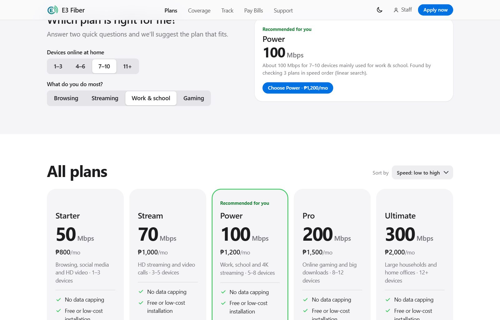
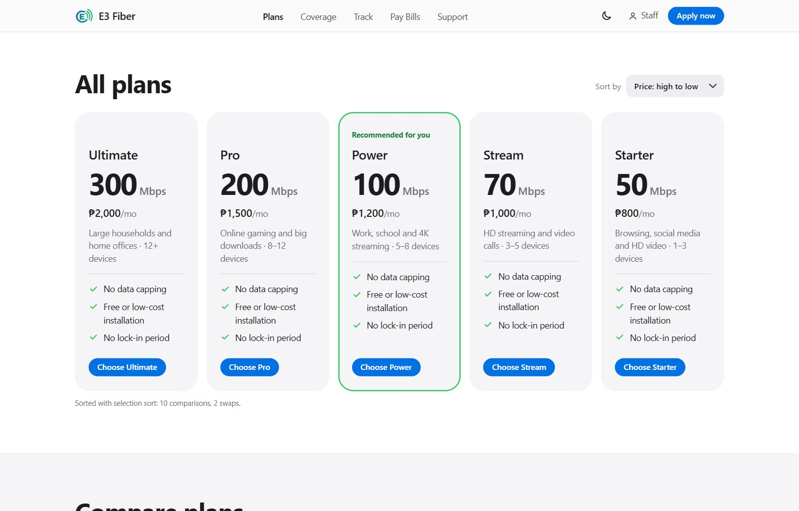
Trace — the recommender (computed by our code)
Input: 7–10 devices (counted as 10) used mainly for work & school (10 Mbps each). Needed speed = 10 × 10 = 100 Mbps. Insertion sort put the plans in speed order with 4 comparisons and 0 moves — they were already in order, the best case O(n).
| Check | Plan | Speed | Price | Speed ≥ 100 Mbps? |
|---|---|---|---|---|
| 1 | Starter | 50 Mbps | ₱800 | ✗ too slow |
| 2 | Stream | 70 Mbps | ₱1,000 | ✗ too slow |
| 3 | Power | 100 Mbps | ₱1,200 | ✓ fast enough → recommended |
| 4 | Pro | 200 Mbps | ₱1,500 | not checked — search already stopped |
| 5 | Ultimate | 300 Mbps | ₱2,000 | not checked — search already stopped |
Output: Power, found after checking 3 of 5 plans (linear search stops at the first match).
Trace — selection sort by price, high to low
| Pass | Work | Most expensive of the rest | Array after the pass (blue = sorted part) |
|---|---|---|---|
| start | — | — | Starter ₱800Stream ₱1,000Power ₱1,200Pro ₱1,500Ultimate ₱2,000 |
| pass 1 | 4 comparisons | Ultimate → swapped into position 1 | Ultimate ₱2,000Stream ₱1,000Power ₱1,200Pro ₱1,500Starter ₱800 |
| pass 2 | 3 comparisons | Pro → swapped into position 2 | Ultimate ₱2,000Pro ₱1,500Power ₱1,200Stream ₱1,000Starter ₱800 |
| pass 3 | 2 comparisons | Power already in place | Ultimate ₱2,000Pro ₱1,500Power ₱1,200Stream ₱1,000Starter ₱800 |
| pass 4 | 1 comparison | Stream already in place | Ultimate ₱2,000Pro ₱1,500Power ₱1,200Stream ₱1,000Starter ₱800 |
Total: 10 comparisons (= n(n−1)/2 = 5·4/2) and 2 swaps. The real selectionSort reports 10 comparisons and 2 swaps — the same numbers shown under the plan cards.
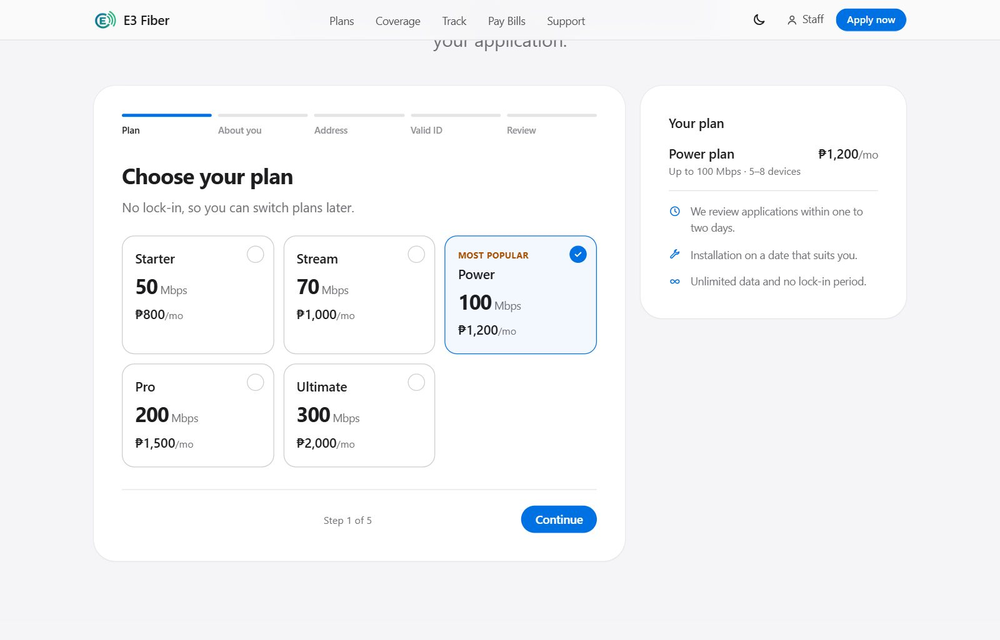
Code walkthrough
assets/js/backend/plans.js · lines 85–106
85/** 86 * recommendPlan — the slowest (cheapest) plan that is still fast enough. 87 * needed speed = devices × Mbps per device for the main activity; then a 88 * linear search over the plans in speed order stops at the first plan whose 89 * speed is at least that much (or returns the fastest plan). 90 * Time O(n) (plans are already in speed order, so insertion sort is O(n)) · Space O(n) 91 */ 92function recommendPlan(rangeId, activityId) { 93 const range = findDeviceRange(rangeId); // 1. the answers: how many devices … 94 const activity = findActivity(activityId); // … and what they are mostly used for 95 const needed = range.devices * activity.mbpsPerDevice; // 2. speed needed = devices × Mbps per device 96 const bySpeed = insertionSort(PLANS, 'speed', 'asc'); // 3. plans from slowest (cheapest) to fastest 97 let checked = 0; 98 for (let i = 0; i < bySpeed.length; i++) { // 4. linear search: the first plan fast enough 99 checked++; 100 if (bySpeed[i].speed >= needed) { 101 return { plan: bySpeed[i], neededMbps: needed, checked: checked, range: range, activity: activity }; 102 } 103 } 104 // 5. no plan is fast enough → recommend the fastest one 105 return { plan: bySpeed[bySpeed.length - 1], neededMbps: needed, checked: checked, range: range, activity: activity }; 106}
- Find what the customer picked. findDeviceRange and findActivity are linear searches over two tiny lists.
- Multiply the number of devices by the speed each device needs.
- insertionSort returns the plans from slowest (cheapest) to fastest. It works on a copy, so PLANS is not changed.
- The loop is a linear search: the first plan with enough speed is returned, together with how many plans were checked (shown on screen).
- If the loop ends without a match, the last (fastest) plan is recommended.
assets/js/dsa/sort.js · lines 109–135
109/** 110 * selectionSort — for each position, scans the unsorted part for the item 111 * that belongs there (the smallest, or largest when descending) and swaps it in. 112 * Always makes n(n−1)/2 comparisons but at most n−1 swaps. 113 * Time: O(n²) in every case · Space: O(1) extra (plus the copy) · Stable: no 114 */ 115function selectionSort(records, field, order) { 116 const list = arrayCopy(records); // sort a copy, so the table keeps its own order 117 const direction = order === 'desc' ? -1 : 1; 118 let comparisons = 0; 119 let swaps = 0; 120 for (let i = 0; i < list.length - 1; i++) { // 1. fill position i (0, 1, 2 …) with the right item 121 let best = i; 122 for (let j = i + 1; j < list.length; j++) { // 2. scan everything after it 123 comparisons++; 124 if (compareForOrder(list[j][field], list[best][field], direction) < 0) { 125 best = j; // remember the item that should come first 126 } 127 } 128 if (best !== i) { // 3. swap that item into position i 129 arraySwap(list, i, best); 130 swaps++; 131 } 132 } 133 recordRun('Selection sort', comparisons, swaps); 134 return list; 135}
- arrayCopy makes a copy (our replacement for slice) so the original order stays; direction is −1 for “high to low”.
- The outer loop fills position i; the inner loop scans the rest and remembers in best the item that should come first.
- compareForOrder compares two values in the chosen direction; empty values always go last.
- arraySwap exchanges two slots (no built-in helper). Only one swap per position → at most n−1 swaps.
- recordRun saves the comparison and swap counts, which the page prints under the cards.
Module 2 · Joshua Santos
Application (online)
1Business process
What task or problem from the client are you solving?
Before, customers filled in paper forms at the office and details were often incomplete or unreadable. The online application lets anyone in Santa Maria apply from home, checks every field before it is saved (valid e-mail and mobile, 18 years or older, a barangay in the service area, a valid ID, consent), blocks duplicate applications from the same person, and gives a reference number that the customer uses to track the application — and that later becomes the account number.
2Input
What data is needed by the module?
| Step | Field | Rule checked |
|---|---|---|
| 1 Plan | Plan | must exist in PLANS |
| 2 About you | Full name | first and last name, 3–80 characters |
| one “@”, allowed characters only, a dot in the domain | ||
| Mobile | 11 digits starting with 09 (“+63 917…” is accepted and tidied) | |
| Birth date | real date, not in the future, age 18–120 | |
| 3 Address | Barangay | one of the 24 barangays of Santa Maria (coming-soon ones join the waitlist) |
| Street, landmark | street 5–150 characters; landmark optional, ≤ 100 | |
| 4 Valid ID | ID type, ID number | type from the list of 11; number 4–30 characters |
| ID photo | JPG, PNG or PDF, at most 10 MB | |
| Consent | must be ticked |
Stored data read: applications (to find open duplicates), BARANGAYS, ID_TYPES and the reference counter.
3Process
What data structure and/or algorithm did you use? How does it work step by step?
Input
- plan, name, e-mail, mobile, birth date
- barangay, address
- ID type, number, photo
- consent
Process
- validate each field (character scans, binary search for the barangay)
- linear search for an open duplicate
- next reference number
- append to applications
Output
- application record, status Pending
- reference number E3-2026-004887
- joins the review queue
- Wizard: “Continue” validates only the current step with the same validateApplication the backend uses, and shows the message under each wrong field (stepForField is a linear search that finds which step owns a field).
- Validate everything again on submit: text checks loop over the characters (no regular expressions); age uses our date maths (ageOn); the barangay is found by binary search on the 24 barangays sorted by name; the ID type by linear search.
- Duplicate check (findOpenApplicationFor): a linear search over the applications that are still Pending, Approved or For Installation for the same e-mail or mobile number.
- Reference number: the counter goes up by one → E3-2026-004887.
- Save: arrayAppend puts the record at the end. It has the largest number, so the array stays sorted — no sort is needed and binary search keeps working.
- The record starts with status Pending and one history step; it is automatically part of the staff’s review queue (first come, first served).
4Output
What result does the module produce?
A new application record { referenceNo, fullName, email, contactNumber, birthDate, barangay, completeAddress, landmark, planId, idType, idNumber, idPhotoName, status: "Pending", submittedAt, source: "online", history: [...] }, the “Application received” screen with the reference number and a summary, and inline error messages when something is wrong.
5Complexity analysis
What is the time complexity? What is the space complexity?
| Operation | Time | Space |
|---|---|---|
| Field checks (e-mail, mobile, name …) | O(k) per field, k = its length | O(k) |
| Barangay look-up (binary search, B = 24) | O(log B) | O(1) |
| ID type look-up (linear, 11 types) | O(t) | O(1) |
| Duplicate check over n applications | O(n) | O(1) |
| Next reference number + append | O(1) | O(1) (one new record) |
| submitApplication overall | O(n) (the duplicate scan dominates) | O(1) extra |
6Justification
Why did you choose that data structure or algorithm? Why is it appropriate?
- Append to a sorted array: reference numbers only grow, so appending is O(1) and keeps the array sorted — this is what makes the tracker’s binary search possible without ever sorting.
- Linear search for duplicates: the rule depends on the status (only open applications count), on two fields (e-mail or mobile) and on text normalisation; a single pass handles all of that. A hash table would need an index per field and updates on every status change — not worth it for our size.
- Binary search for the barangay: the list is fixed and sorted by name, so the look-up is O(log B).
- Hand-written character checks: required by the project rules (no regular expressions) and they give a precise message for each kind of mistake.
- The wizard reuses the backend validator, so the screen and the saved data follow exactly the same rules.
7Demonstration
Show that the module works correctly — the input, the process and the output.
- Apply → step 2: type a one-word name, a double “@” e-mail, a short mobile number and a 2012 birth date → press Continue → every mistake is explained under its field.
- Fix them, finish steps 3–4, review in step 5 and submit → the reference number appears.
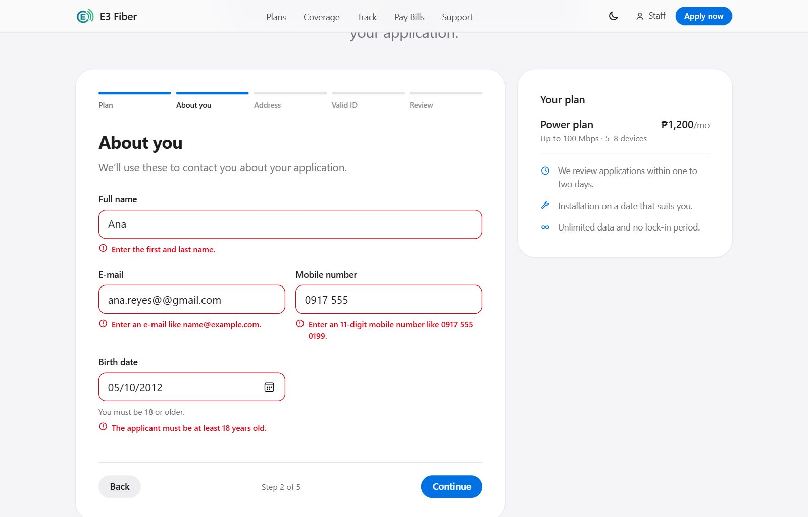
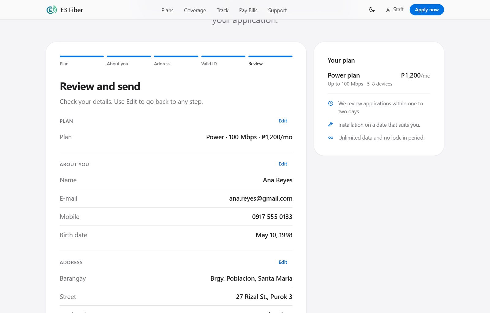
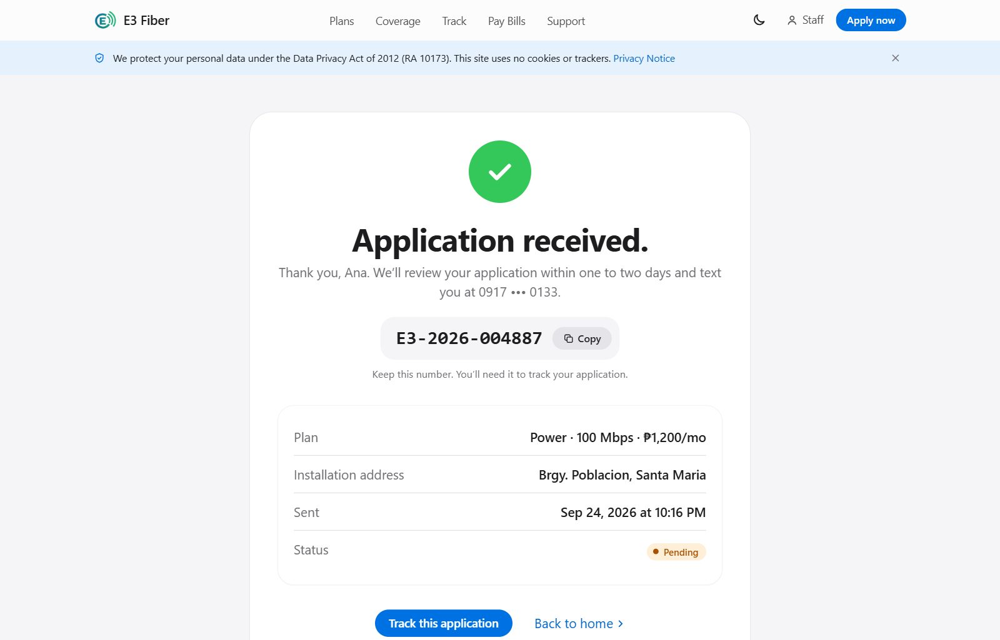
Trace — validation and saving (computed by our code)
| Field | What was typed | Validator result |
|---|---|---|
| Full name | Ana | ✗ Enter the first and last name. |
| ana.reyes@@gmail.com | ✗ Enter an e-mail like name@example.com. | |
| Mobile | 0917 555 | ✗ Enter an 11-digit mobile number like 0917 555 0199. |
| Birth date | 2012-05-10 | ✗ The applicant must be at least 18 years old. |
| Barangay | ✗ Choose a barangay in Santa Maria. | |
| Street address | ✗ Enter the house number and street. | |
| ID type | ✗ Choose an ID type. | |
| ID number | ✗ Enter the ID number. | |
| ID photo | id.exe | ✗ Upload a JPG, PNG or PDF file. |
| Consent | false | ✗ Please confirm the details are correct. |
With the corrected data the validator returns 0 errors, so submitApplication continues: duplicate check → next number → append.
The new application E3-2026-004887 (status Pending) is appended at index 16 — it has the largest number, so the table is still sorted: ✓ verified.
Code walkthrough
assets/js/backend/applications.js · lines 183–238
183/** 184 * submitApplication — validate, then add a new application with the next 185 * reference number. Online applications come from customers; walk-ins are 186 * typed by staff (and can be undone). 187 * Time O(n) (duplicate check) + O(1) append · Space O(1) 188 */ 189function submitApplication(data, source, actor) { 190 const errors = validateApplication(data, source); // 1. check every field 191 if (hasAnyErrors(errors)) { 192 return { ok: false, errors: errors }; 193 } 194 const duplicate = findOpenApplicationFor(data.email, data.contactNumber); // 2. one open application per person 195 if (duplicate) { 196 return { ok: false, errors: { email: 'An application for this e-mail or mobile number is already in progress (' + duplicate.referenceNo + ').' } }; 197 } 198 199 counters.reference = counters.reference + 1; // 3. the next reference number 200 const now = nowISO(); 201 const referenceNo = formatReferenceNo(readClock().year, counters.reference); 202 const barangay = findBarangay(data.barangay); 203 const byName = source === 'online' ? 'Online form' : nameOfActor(actor) + ' (walk-in)'; 204 const application = { 205 referenceNo: referenceNo, 206 fullName: collapseSpaces(data.fullName), 207 email: trimText(data.email), 208 contactNumber: normalizeMobile(data.contactNumber), 209 birthDate: data.birthDate, 210 city: SERVICE_CITY, 211 barangay: barangay.name, 212 completeAddress: collapseSpaces(data.completeAddress), 213 landmark: collapseSpaces(data.landmark), 214 planId: data.planId, 215 customPrice: data.planId === 'custom' ? Number(data.customPrice) : null, 216 idType: data.idType, 217 idNumber: trimText(data.idNumber), 218 idPhotoName: textOf(data.idPhotoName), 219 status: 'Pending', 220 submittedAt: now, 221 source: source, 222 notes: '', 223 installDate: null, 224 installSlot: null, 225 rejectReason: '', 226 history: [{ status: 'Pending', at: now, by: byName, note: source === 'online' ? 'Application received online' : 'Walk-in application at the office' }], 227 }; 228 arrayAppend(applications, application); // 4. the new number is the largest → the table stays sorted 229 230 if (source === 'online') { // 5. log it (walk-ins typed by staff can also be undone) 231 logActivity('application', 'New online application ' + referenceNo + ' from ' + application.fullName, 'Customer'); 232 } else { 233 logActivity('application', 'Walk-in application ' + referenceNo + ' for ' + application.fullName, nameOfActor(actor)); 234 pushUndo('Create walk-in application ' + referenceNo, [insertOperation('applications', referenceNo)], nameOfActor(actor)); 235 } 236 markDataChanged(); 237 return { ok: true, application: application }; 238}
- Step 1 calls the validator; if any field has a message, the errors are returned to the form and nothing is saved.
- Step 2 refuses a second open application for the same e-mail or mobile number (linear search, below).
- Step 3 builds the next reference number from the counter and the current year.
- The record is built with tidy values (collapseSpaces, normalizeMobile) and one history step.
- Step 4 appends it — the key order stays sorted. Step 5 writes the activity log; a walk-in (staff) application also gets an Undo step.
assets/js/backend/applications.js · lines 79–97
79/** 80 * findOpenApplicationFor — an application still in progress with the same 81 * e-mail or mobile number (stops duplicate applications). Linear search. 82 * Time O(n) · Space O(1) 83 */ 84function findOpenApplicationFor(email, mobile) { 85 const wantedEmail = toLowerText(trimText(email)); 86 const wantedMobile = digitsOnly(normalizeMobile(mobile)); 87 for (let i = 0; i < applications.length; i++) { 88 const app = applications[i]; 89 if (linearSearchValue(OPEN_APPLICATION_STATUSES, app.status) === -1) { 90 continue; 91 } 92 if (toLowerText(app.email) === wantedEmail || (wantedMobile !== '' && digitsOnly(app.contactNumber) === wantedMobile)) { 93 return app; 94 } 95 } 96 return null; 97}
- The typed e-mail is lower-cased and the mobile reduced to its digits, so “JUAN@…” and “juan@…” match.
- The loop visits every application (linear search) but skips finished ones using linearSearchValue on the list of open statuses.
- The first open application with the same e-mail or mobile is returned; otherwise null.
assets/js/backend/applications.js · lines 118–137 (part of validateApplication)
118 const name = collapseSpaces(data.fullName); 119 if (name.length < 3 || textFind(name, ' ') === -1) { 120 errors.fullName = 'Enter the first and last name.'; 121 } else if (name.length > 80) { 122 errors.fullName = 'Use 80 characters or fewer.'; 123 } 124 if (!isValidEmail(data.email)) { 125 errors.email = 'Enter an e-mail like name@example.com.'; 126 } 127 if (!isValidMobile(data.contactNumber)) { 128 errors.contactNumber = 'Enter an 11-digit mobile number like 0917 555 0199.'; 129 } 130 if (!isValidISODate(data.birthDate)) { 131 errors.birthDate = 'Enter the birth date.'; 132 } else if (data.birthDate > today) { 133 errors.birthDate = 'The birth date can’t be in the future.'; 134 } else if (ageOn(data.birthDate, today) < 18) { 135 errors.birthDate = 'The applicant must be at least 18 years old.'; 136 } else if (ageOn(data.birthDate, today) > 120) { 137 errors.birthDate = 'Check the birth year.';
- The name must have a space (first and last name) and at most 80 characters.
- isValidEmail and isValidMobile scan the text character by character (no regular expressions).
- The birth date must be a real date, not in the future, and the applicant at least 18 (ageOn counts whole years with our calendar maths).
Module 3 · Joshua Santos
Application Tracking
1Business process
What task or problem from the client are you solving?
Applicants used to call or visit the office to ask “what happened to my application?”. With the tracker they type their reference number and immediately see where it is — received, under review, installation scheduled (with the date), connected — or why it was not approved, without exposing their personal details to someone who guesses a number.
2Input
What data is needed by the module?
- The reference number typed by the customer, in any form (“ e3-2026-004887 ”) or given in the address (#/track/E3-2026-004887).
- The applications array (sorted by reference number) and each application’s history and status.
3Process
What data structure and/or algorithm did you use? How does it work step by step?
Input
- typed reference number
- sorted applications array
Process
- normalise: capitals, no spaces
- check the shape E3-####-######
- binary search
- build the timeline from the history
- mask the name
Output
- status + timeline
- masked details
- “found in X comparisons”
- or a clear error
- normalizeReference turns the input into capitals and removes spaces.
- isValidReference checks the shape E3-####-###### character by character (hasCodeShape); a wrong shape shows “Use the format E3-2026-004879.”.
- Binary search (findApplication): compare the middle reference of the range with the target; if the middle is smaller keep the right half, if bigger keep the left half; repeat until equal or the range is empty.
- applicationProgress turns the status and history into 4 steps (done / current / upcoming) or a 2-step “not approved” path.
- maskName shows “Ana R.” instead of the full name; the address and ID are never shown.
4Output
What result does the module produce?
A result card with the status badge, the timeline, the plan, barangay and dates, a note such as “Found with binary search in … comparisons among 17 applications” (the exact count is in the trace below), a message for the installation date or rejection reason — or an error: wrong format, or “We couldn’t find E3-2026-999999”.
5Complexity analysis
What is the time complexity? What is the space complexity?
| Operation | Time | Space |
|---|---|---|
| Normalise and check the format (k = 14 characters) | O(k) | O(k) |
| Binary search over n applications | O(log n) — at most ⌈log₂(n+1)⌉ comparisons | O(1) |
| Timeline (4 steps × h history entries) | O(h) | O(1) |
| Linear search (for comparison) | O(n) | O(1) |
17 applications → at most 5 comparisons; 1,000 → 10; 1,000,000 → 20.
6Justification
Why did you choose that data structure or algorithm? Why is it appropriate?
- The tracker looks up one record by an exact key — the classic case for binary search.
- The array is already sorted for free (Module 2 appends increasing numbers), so binary search costs no extra work and no extra memory.
- A hash table would also find it in O(1) on average, but it needs extra memory, must be kept in step with every change, and gives no order. Binary search on the existing array is fast enough (5 steps) and simpler.
- Checking the format first means garbage input never reaches the search, and the customer gets a helpful message.
7Demonstration
Show that the module works correctly — the input, the process and the output.
- From “Application received”, press “Track this application” (or open Track and type the number in small letters).
- The result shows the timeline and the binary-search note. Then type E3-2026-999999 → not found.
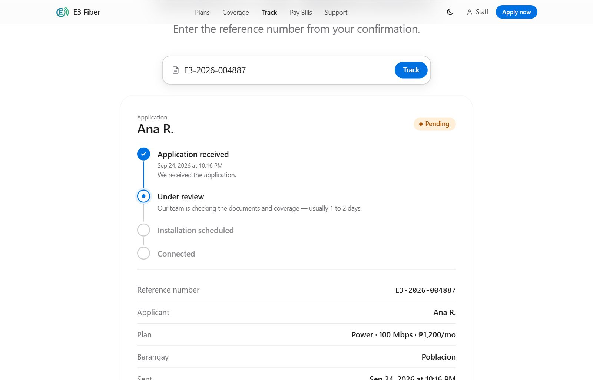
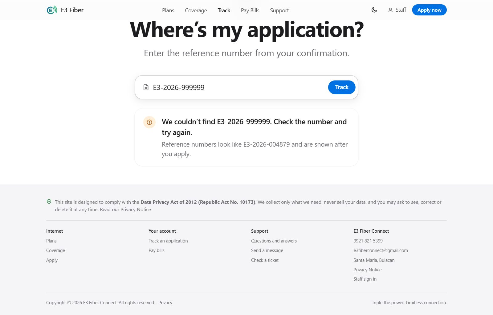
Trace — binary search (computed by our code)
Search for E3-2026-004887 among 17 applications sorted by reference number (the input was typed in small letters with spaces; normalizeReference fixed it first).
| Step | low | high | middle | Reference at middle | Compare with the target |
|---|---|---|---|---|---|
| 1 | 0 | 16 | 8 | E3-2026-004879 | smaller → go right |
| 2 | 9 | 16 | 12 | E3-2026-004883 | smaller → go right |
| 3 | 13 | 16 | 14 | E3-2026-004885 | smaller → go right |
| 4 | 15 | 16 | 15 | E3-2026-004886 | smaller → go right |
| 5 | 16 | 16 | 16 | E3-2026-004887 | ✓ equal — found |
Found in 5 comparisons (the real trackApplication reported 5). A linear search would have needed all 17 — this record is the last one, its worst case. Binary search never needs more than ⌈log₂(17 + 1)⌉ = 5.
Not found: E3-2026-999999
| Step | low | high | middle | Reference at middle | Compare |
|---|---|---|---|---|---|
| 1 | 0 | 16 | 8 | E3-2026-004879 | smaller → go right |
| 2 | 9 | 16 | 12 | E3-2026-004883 | smaller → go right |
| 3 | 13 | 16 | 14 | E3-2026-004885 | smaller → go right |
| 4 | 15 | 16 | 15 | E3-2026-004886 | smaller → go right |
| 5 | 16 | 16 | 16 | E3-2026-004887 | smaller → go right |
After 5 comparisons low (17) passed high (16): the range is empty, so the tracker answers “We couldn’t find E3-2026-999999”.
Code walkthrough
assets/js/backend/applications.js · lines 36–55
36/** 37 * trackApplication — public tracker: tidy the typed reference, check its shape, 38 * then binary search. Returns the application (or null) with the search cost. 39 * Time O(log n) 40 */ 41function trackApplication(input) { 42 const referenceNo = normalizeReference(input); // 1. tidy it: capitals, no spaces 43 if (!isValidReference(referenceNo)) { // 2. it must look like E3-2026-004879 44 return { ok: false, referenceNo: referenceNo, error: 'Use the format E3-2026-004879.' }; 45 } 46 const application = findApplication(referenceNo); // 3. binary search on the sorted table 47 return { // 4. the result + how many comparisons it took 48 ok: application !== null, 49 referenceNo: referenceNo, 50 application: application, 51 comparisons: dsaLastRun.comparisons, 52 n: applications.length, 53 error: application ? '' : 'We couldn’t find ' + referenceNo + '. Check the number and try again.', 54 }; 55}
- Tidy the input first, so small letters and spaces don’t matter.
- Reject anything that doesn’t have the reference shape before searching.
- findApplication is binarySearch(applications, 'referenceNo', …).
- The result also carries dsaLastRun.comparisons — the number the page shows under the result.
assets/js/dsa/search.js · lines 76–102
76/** 77 * binarySearch — index of the record whose `field` equals `value`, or -1. 78 * The records MUST be sorted by `field` in ascending order. Each step looks at 79 * the middle record and discards the half that cannot contain the value. 80 * Time O(log n) — about 17 steps for 100,000 records · Space O(1) 81 */ 82function binarySearch(sortedRecords, field, value) { 83 let low = 0; // 1. start with the whole table as the range 84 let high = sortedRecords.length - 1; 85 let comparisons = 0; 86 while (low <= high) { // 2. repeat while the range still has records 87 const middle = Math.floor((low + high) / 2); // 3. look at the middle record 88 const middleValue = sortedRecords[middle][field]; 89 comparisons++; 90 if (middleValue === value) { // 4. found it 91 recordRun('Binary search', comparisons, 0); 92 return middle; 93 } 94 if (middleValue < value) { 95 low = middle + 1; // the value can only be in the right half 96 } else { 97 high = middle - 1; // the value can only be in the left half 98 } 99 } 100 recordRun('Binary search', comparisons, 0); 101 return -1; 102}
- low and high mark the part of the table that can still contain the target.
- The loop runs while that part is not empty.
- Math.floor((low + high) / 2) is the middle position; its key is compared with the target.
- Equal → found. Smaller → the target can only be to the right (low = middle + 1). Bigger → to the left (high = middle − 1).
- If the loop ends, the key is not in the table and −1 is returned. The comparisons are recorded either way.
assets/js/backend/utils.js · lines 542–562
542/** 543 * hasCodeShape — checks text against a shape like "E3-####-######" 544 * ("#" = any digit, anything else must match exactly). 545 * Time O(n) · Space O(1) 546 */ 547function hasCodeShape(value, shape) { 548 const text = textOf(value); 549 if (text.length !== shape.length) { 550 return false; 551 } 552 for (let i = 0; i < shape.length; i++) { 553 if (shape[i] === '#') { 554 if (!isDigitChar(text[i])) { 555 return false; 556 } 557 } else if (text[i] !== shape[i]) { 558 return false; 559 } 560 } 561 return true; 562}
- The shape "E3-####-######" uses # for “any digit”; every other character must match exactly.
- A different length fails immediately; otherwise one pass compares each position.
Member 2 · from application to customer
Justin Banaag
Module 4 Application List · Module 5 Walk-in Override (New Application) · Module 6 Create Account
60-second pitch
My modules are the staff side of an application. The Application List filters the applications with a linear search, searches them with naive string matching, and sorts them with the algorithm the staff picks — insertion, selection or bubble sort — showing the real number of comparisons. Pending applications form a queue, so the oldest one is reviewed first. The Walk-in override lets staff encode an application for a customer at the office, with a custom price and an ID checked in person; every such action can be undone with a stack. Create Account turns an installed application into a subscriber account: a binary search (lower bound) finds where the new account belongs in the sorted subscribers array and the later records shift one place — a sorted insert.
Structures and algorithms I must be able to explain
| Where | Structure / algorithm | Time | Space |
|---|---|---|---|
| Filter by status | Linear search (collect all matches) | O(n) | O(k) |
| Search box | Naive string matching on 5 fields | O(n · L · m) | O(k) |
| Sort the list | Insertion / selection / bubble sort | O(n²) worst (insertion & bubble O(n) best) | O(n) copy |
| Review next | Queue (circular buffer), peek | O(n) to build, O(1) peek | O(p) |
| Undo a walk-in | Stack push / pop | O(1) push, O(n) removal | O(1) |
| Create account | Lower bound (binary search) + shift | O(log n) + O(n) = O(n) | O(1) |
Likely panel questions
Why offer three sorting algorithms?
To compare them on real data: the caption shows each one’s comparisons and moves. Insertion sort is the default because our lists are almost sorted (best case O(n)); selection sort makes the fewest swaps; bubble sort stops early when a pass has no swap.
Isn’t O(n²) too slow?
For the size of E3’s lists (tens to a few hundred records) it takes well under a millisecond — the Algorithms page benchmark sorts 1,000 records in a few milliseconds. We also filter and search first, so only the matching rows are sorted.
Why a queue for reviewing?
Fairness: applications are reviewed first come, first served. Our queue is a circular buffer, so taking the front is O(1) — no shifting like shift() would do.
What exactly does the walk-in “override”?
Three online rules: staff may set a custom monthly price (₱300–₱20,000), the ID photo is optional because the original ID is checked in person (a required checkbox), and the application is marked “walk-in”. Every other rule is the same validator.
Why not just append the new subscriber at the end?
Installations don’t finish in reference-number order. Appending could break the sorted order and binary search would give wrong answers. The sorted insert keeps the array sorted.
How does Undo remove the account again?
Create account pushes one undo entry with two operations (restore the application, remove the subscriber). Undo pops it and reverses both — finding the records by binary search.
Module 4 · Justin Banaag
Application List
1Business process
What task or problem from the client are you solving?
The E3 staff need one place to see every application and act on it: which are waiting, which are approved or scheduled, find one applicant fast, order the list by date, name or plan price, and process them in a fair order. Without it, staff had to go through paper forms. The list also shows the next action for each application (Approve / Reject, Schedule, Create account).
2Input
What data is needed by the module?
| Input | Values |
|---|---|
| Status filter (segmented control) | All · Pending · Approved · Scheduled · Installed · Rejected |
| Search text | matched against name, e-mail, reference number, barangay and mobile |
| Sort | Newest / Oldest first · Name A–Z / Z–A · Plan price high / low |
| Sorting algorithm | Insertion sort · Selection sort · Bubble sort |
| Stored data | the applications array; PLANS for names and prices |
3Process
What data structure and/or algorithm did you use? How does it work step by step?
Input
- status filter
- search text
- sort field and order
- algorithm choice
- applications array
Process
- count by status (one pass)
- filter: linear search
- search: naive string match
- add plan name / price
- sort a copy with the chosen algorithm
- queue of pending applications
Output
- table with next actions
- “Showing x of n · comparisons · moves”
- counts per status
- Review next → oldest pending
- countApplicationsByStatus walks the array once and counts each status (the numbers on the filter buttons and the sidebar badge).
- Filter — linearSearchAll collects the applications with the chosen status (skipped for “All”).
- Search — textSearchRecords: for every record and each of 5 fields, lower-case the text and look for the query letter by letter (naive string matching); one matching field is enough.
- Rows — each match gets its plan name and monthly price (linear search in the 5 plans).
- Sort — sortRecords sorts a copy with the chosen algorithm, counting comparisons and moves; the copy keeps the table in reference order for binary search.
- The cost is shown under the table and logged in the Algorithms page (a ring-buffer queue of the last 40 operations).
- Review next — buildReviewQueue enqueues the pending applications in arrival order; the button opens the front one (queuePeek).
4Output
What result does the module produce?
The filtered, searched and sorted table (name, reference, plan, barangay, date, status and the action buttons), the counts on each filter, the caption under the table (“Showing x of n applications · the algorithm used · its comparisons and moves · its average Big-O · time”, as in the screenshots below), and the detail page of the application at the front of the review queue.
5Complexity analysis
What is the time complexity? What is the space complexity?
| Operation | Time | Space |
|---|---|---|
| Count by status | O(n) | O(1) |
| Filter (linear search) | O(n) | O(k) matches |
| Search (5 fields, text length L, query length m) | O(n · L · m) | O(k) |
| Insertion sort | best O(n) · average / worst O(n²) | O(n) copy, O(1) extra |
| Selection sort | O(n²) always | O(n) copy, O(1) extra |
| Bubble sort | best O(n) · average / worst O(n²) | O(n) copy, O(1) extra |
| Build the review queue / peek | O(n) / O(1) | O(p) pending |
6Justification
Why did you choose that data structure or algorithm? Why is it appropriate?
- Linear search to filter: the filter can be any status, and statuses are not the sort key — every record must be looked at once, which is exactly O(n).
- Naive string matching: staff type part of a name or number (“jua”, “4883”), so we need “contains”, not “equals”; with short fields the simple algorithm is fast and easy to verify.
- Three sorts: insertion sort is the default because the table is stored in date order — “Oldest first” is its best case (n−1 comparisons). Selection sort guarantees the fewest swaps; bubble sort stops early on sorted data. Showing their counts lets us prove the complexity live.
- Sorting a copy: the stored table must stay sorted by reference number, otherwise binary search (tracking, detail pages, Undo) would break.
- Queue: first come, first served, with O(1) access to the front.
7Demonstration
Show that the module works correctly — the input, the process and the output.
- Sign in as Admin → Applications. Note the counts and the caption under the table.
- Click “Pending”, sort “Name A–Z”, choose “Bubble sort” → the rows and the caption change.
- Type part of a name in the search box; press “Review next” to open the oldest pending application.
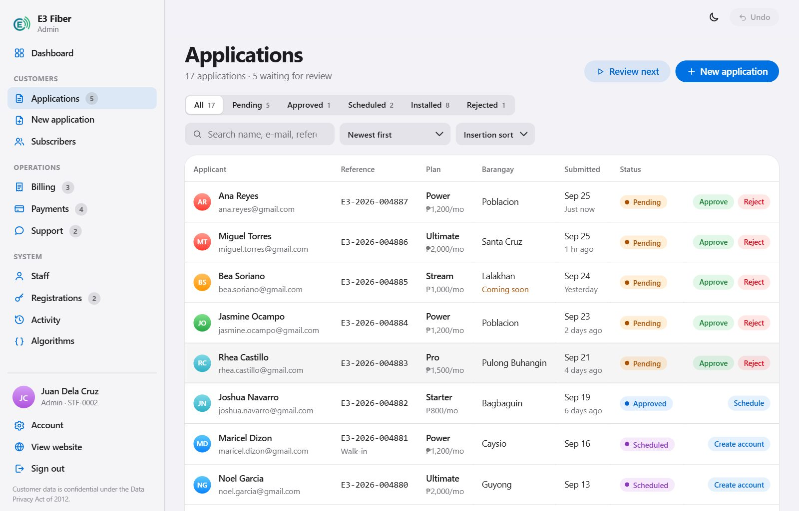
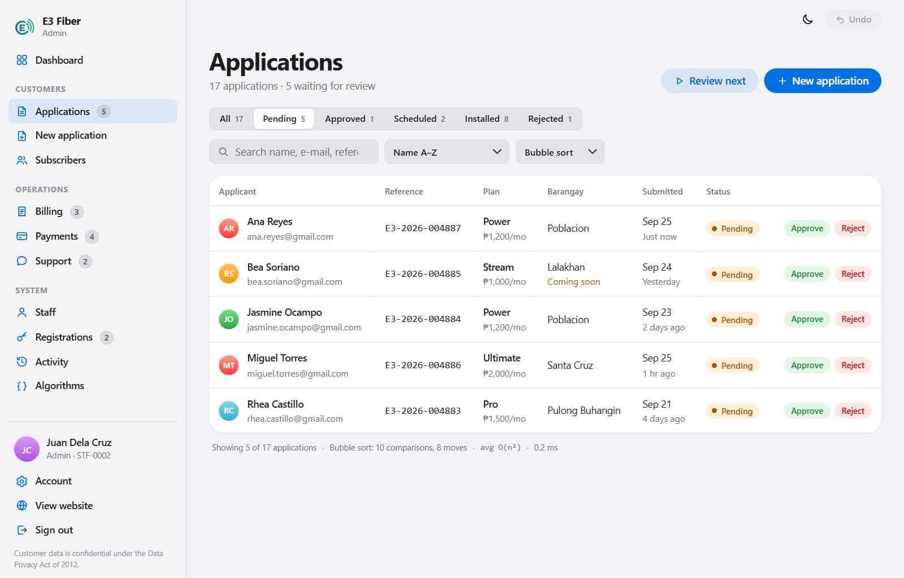
Trace — the cost of each algorithm (computed by our code)
Sorting all 16 sample applications (the table is stored oldest → newest):
| Algorithm | Newest first | Oldest first | Name A–Z |
|---|---|---|---|
| Insertion sort | 120 comp. · 120 moves | 15 comp. · 0 moves | 77 comp. · 66 moves |
| Selection sort | 120 comp. · 8 moves | 120 comp. · 0 moves | 120 comp. · 14 moves |
| Bubble sort | 120 comp. · 120 moves | 15 comp. · 0 moves | 117 comp. · 66 moves |
“Newest first” reverses the stored order — the worst case for insertion and bubble sort: n(n−1)/2 = 120 comparisons. “Oldest first” is already in order — their best case, n−1 = 15 comparisons. Selection sort always makes 120 comparisons but the fewest moves (swaps).
Filter + search example: status Pending (4 of 16 by linear search) + search “poblacion” (naive string matching on 5 fields) → Jasmine Ocampo (E3-2026-004884).
Review queue (FIFO): Rhea Castillo (front) → Jasmine Ocampo → Bea Soriano → Miguel Torres — “Review next” opens the front one.
Code walkthrough
assets/js/backend/applications.js · lines 258–278
258/** 259 * listApplications — filter by status (linear search), search the text 260 * (naive string matching), then sort with the chosen algorithm. 261 * options: { status, query, sortField, sortOrder, algorithm } 262 * Time O(n · L · m) search + O(n²) sort · Space O(n) 263 */ 264function listApplications(options) { 265 const status = options.status || 'all'; 266 const base = status === 'all' ? applications : linearSearchAll(applications, 'status', status); // 1. filter by status 267 const found = textSearchRecords(base, ['fullName', 'email', 'referenceNo', 'barangay', 'contactNumber'], options.query || ''); // 2. search box 268 const rows = []; 269 for (let i = 0; i < found.length; i++) { // 3. add the plan name and price to each row 270 arrayAppend(rows, applicationRow(found[i])); 271 } 272 const started = stopwatchStart(); 273 const sorted = sortRecords(rows, options.sortField || 'submittedAt', options.sortOrder || 'desc', options.algorithm || 'insertion'); // 4. sort 274 const ms = stopwatchMs(started); 275 const stats = { algorithm: dsaLastRun.algorithm, comparisons: dsaLastRun.comparisons, moves: dsaLastRun.moves, ms: ms, n: rows.length }; 276 logOperation(stats.algorithm, 'Applications list', rows.length, stats.comparisons, stats.moves, ms); // 5. show the cost 277 return { rows: sorted, total: applications.length, stats: stats }; 278}
- If a status is chosen, linearSearchAll keeps only those applications.
- textSearchRecords keeps the ones whose name, e-mail, reference, barangay or mobile contains the search text.
- applicationRow adds the plan name and price, so the list can also be sorted by price.
- sortRecords runs the chosen algorithm; stopwatchStart/Ms time it and dsaLastRun holds its comparisons and moves.
- logOperation adds a line to the Algorithms page log; the function returns the rows and the numbers for the caption.
assets/js/dsa/sort.js · lines 137–166
137/** 138 * insertionSort — grows a sorted part at the front: each new item is taken out 139 * and the larger items slide one place right until its spot is found. 140 * Very fast on lists that are already almost sorted (our tables usually are). 141 * Time: best O(n) (already sorted), average and worst O(n²) 142 * Space: O(1) extra (plus the copy) · Stable: yes 143 */ 144function insertionSort(records, field, order) { 145 const list = arrayCopy(records); // sort a copy, so the table keeps its own order 146 const direction = order === 'desc' ? -1 : 1; 147 let comparisons = 0; 148 let shifts = 0; 149 for (let i = 1; i < list.length; i++) { // 1. items before i are already sorted 150 const current = list[i]; // 2. take out the next item 151 let j = i - 1; 152 while (j >= 0) { 153 comparisons++; 154 if (compareForOrder(list[j][field], current[field], direction) > 0) { 155 list[j + 1] = list[j]; // 3. a bigger item slides one place right 156 shifts++; 157 j--; 158 } else { 159 break; // found the spot 160 } 161 } 162 list[j + 1] = current; // 4. drop the item into the gap 163 } 164 recordRun('Insertion sort', comparisons, shifts); 165 return list; 166}
- Everything before position i is already sorted; current is the next item to place.
- While the item on the left is bigger, it slides one place to the right (a “shift” — counted as a move).
- When a smaller-or-equal item is found, the loop stops (that is why a sorted list costs only n−1 comparisons) and current drops into the gap.
assets/js/dsa/search.js · lines 199–225
199/** 200 * textSearchRecords — records where any of `fields` contains `query`, 201 * ignoring capital letters ("jua" finds "Juan Dela Cruz"). An empty query 202 * returns every record. Linear search + naive string matching per field. 203 * Time O(n · f · L · m), n records, f fields, L field length, m query length 204 * Space O(k) for the k matches 205 */ 206function textSearchRecords(records, fields, query) { 207 const needle = toLowerText(trimText(query)); 208 const matches = []; 209 if (needle === '') { 210 for (let i = 0; i < records.length; i++) { 211 arrayAppend(matches, records[i]); 212 } 213 return matches; 214 } 215 for (let i = 0; i < records.length; i++) { // 1. every record (linear search) 216 for (let f = 0; f < fields.length; f++) { // 2. every searchable field of it 217 if (textContains(toLowerText(records[i][fields[f]]), needle)) { // 3. naive string match, ignoring capitals 218 arrayAppend(matches, records[i]); 219 break; // one matching field is enough 220 } 221 } 222 } 223 recordRun('Linear search (text)', records.length, 0); 224 return matches; 225}
- The query is trimmed and lower-cased once; an empty query keeps every record.
- For each record, each field is lower-cased and textContains (naive string matching) looks for the query.
- break stops checking the other fields as soon as one matches, so a record is added only once.
assets/js/backend/applications.js · lines 292–305
292/** 293 * buildReviewQueue — a QUEUE of pending applications, oldest first. 294 * The table is already in submission order, so one pass enqueues them FIFO. 295 * Time O(n) · Space O(p) for p pending applications 296 */ 297function buildReviewQueue() { 298 const queue = createQueue(8); 299 for (let i = 0; i < applications.length; i++) { 300 if (applications[i].status === 'Pending') { 301 enqueue(queue, applications[i]); 302 } 303 } 304 return queue; 305}
- A new circular-buffer queue is created.
- The table is in submission order, so enqueueing the pending ones in one pass gives first-come-first-served order.
Module 5 · Justin Banaag
Walk-in Override (New Application)
1Business process
What task or problem from the client are you solving?
Not every customer can apply online — some come to the office, some are seniors without e-mail access at home, some are offered a special price by the owner. Staff need to encode the application for them, with a few rules overridden: a custom monthly price, the ID checked in person (so no photo upload is required) and the application marked as a walk-in. Because staff type quickly at the counter, every walk-in can be undone right after.
2Input
What data is needed by the module?
| Input | Rule for walk-ins |
|---|---|
| Plan | one of the 5 plans or “Custom” with a monthly price from ₱300 to ₱20,000 |
| Name, e-mail, mobile, birth date, barangay, address, ID type and number | same rules as the online form (Module 2) |
| Scanned ID | optional (JPG, PNG or PDF if given) |
| “I checked the original ID” | required checkbox |
| Signed-in staff member | recorded as the author (“Juan Dela Cruz (walk-in)”) |
3Process
What data structure and/or algorithm did you use? How does it work step by step?
Input
- applicant details
- plan or custom price
- ID checked in person
- signed-in staff
Process
- validate with the walk-in rules
- linear search for duplicates
- append with the next number
- push an Undo step (stack)
- joins the review queue
Output
- walk-in application (Pending)
- custom price saved
- toast with Undo
- detail page
- The summary box shows the price and the queue position the application will get (the review queue size + 1).
- validateApplication(data, 'walk-in'): for “Custom” it checks the price range instead of looking up a plan; in the walk-in branch the photo is optional and the ID checkbox is required.
- submitApplication runs the same duplicate check (linear search), takes the next reference number and appends — the array stays sorted.
- The history says “Walk-in application at the office” by the staff member; pushUndo puts an “insert” operation on the Undo stack.
- If staff press Undo, undoLastAction pops the newest entry (LIFO) and removes the record (found by binary search).
4Output
What result does the module produce?
A new application with source: "walk-in" and, if chosen, customPrice; it appears in the Applications list (marked “Walk-in”) and at the rear of the review queue; a toast “Created walk-in application for …” with an Undo button; the detail page of the new application.
5Complexity analysis
What is the time complexity? What is the space complexity?
| Operation | Time | Space |
|---|---|---|
| Validation (walk-in rules) | O(k) per field | O(k) |
| Duplicate check | O(n) | O(1) |
| Append the application | O(1) | O(1) |
| Push an Undo step | O(1) (O(n) only when the 25-step limit drops the bottom) | O(1) |
| Undo: pop + find (binary search) + remove | O(1) + O(log n) + O(n) | O(1) |
| Queue position (build the review queue) | O(n) | O(p) |
6Justification
Why did you choose that data structure or algorithm? Why is it appropriate?
- One validator with a “source” switch: online and walk-in applications follow the same rules except the three overrides, so a mistake can never be fixed in one form and forgotten in the other.
- Stack for Undo: the action to reverse is always the most recent one — last in, first out. Push, pop and peek (for the button label) are all O(1). The stack keeps only 25 steps and is cleared at sign-in, so one person can never undo another person’s work.
- Queue: a walk-in joins the same first-come-first-served review queue as online applications — fair to both.
- Append: the new number is the largest, so the table stays sorted without sorting.
7Demonstration
Show that the module works correctly — the input, the process and the output.
- Admin → New application: choose “Custom”, type ₱950, fill in the applicant, leave the ID box unticked → Create → an error asks to confirm the ID.
- Tick the box → Create → the detail page opens; the application is marked walk-in; press Undo in the toast to remove it again.
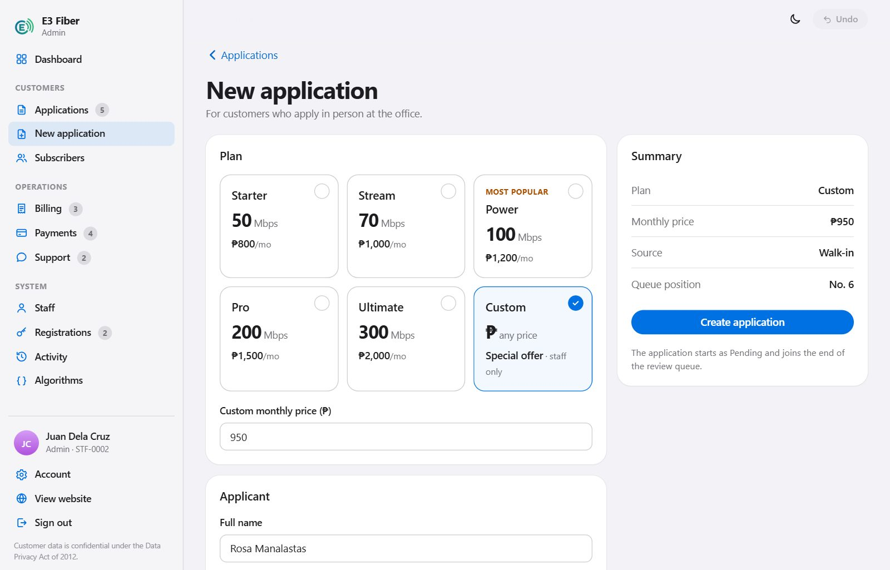
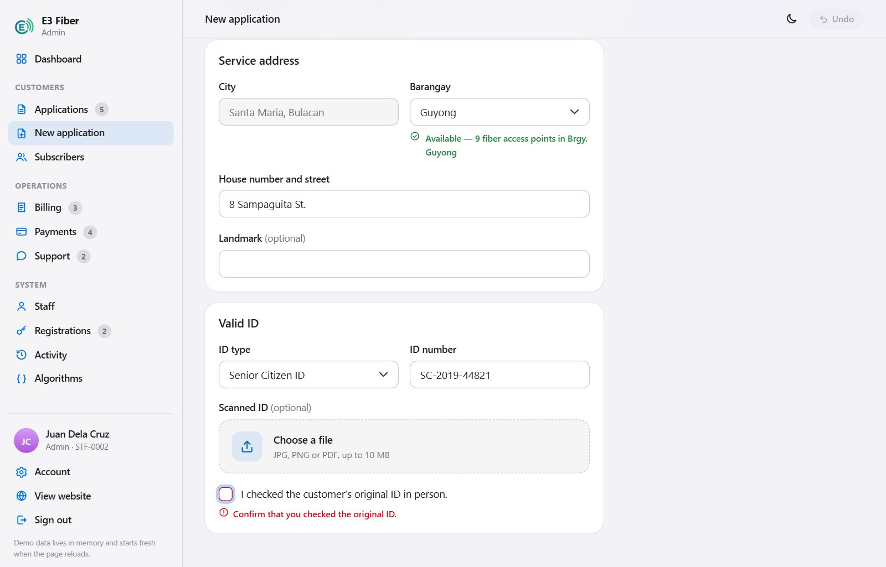
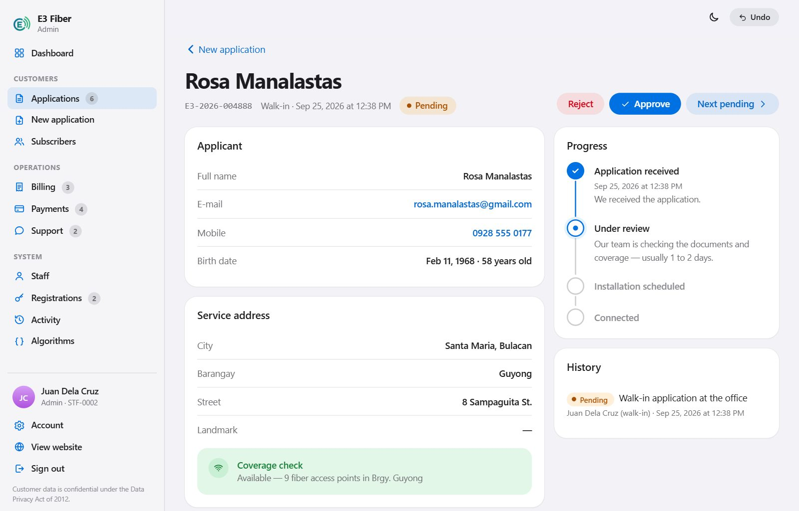
Trace — walk-in rules, queue and Undo (computed by our code)
| Field | Walk-in rule | Result for the first try |
|---|---|---|
| Plan | Plan “custom” allowed; price must be ₱300 – ₱20,000 | ✗ Enter a monthly price from ₱300 to ₱20,000. |
| Scanned ID | Optional (the ID is seen in person) | ✓ no photo needed |
| “I checked the original ID” | Required | ✗ Confirm that you checked the original ID. |
The same data through the online rules would fail on: idPhoto, consent — that is the “override”.
After fixing the price (₱950) and ticking the box: E3-2026-004887, source walk-in, monthly price ₱950, first history step “Walk-in application at the office” by Juan Dela Cruz (walk-in). Review queue: 4 → 5 (it joined at the rear).
Undo stack top: “Create walk-in application E3-2026-004887” (1 step). Pressing Undo pops it and removes the record: ✓ application removed.
Code walkthrough
assets/js/backend/applications.js · lines 109–115 (part of validateApplication)
109 if (source === 'walk-in' && data.planId === 'custom') { 110 const price = Number(data.customPrice); 111 if (!(price >= 300 && price <= 20000)) { 112 errors.customPrice = 'Enter a monthly price from ₱300 to ₱20,000.'; 113 } 114 } else if (!findPlan(data.planId)) { 115 errors.planId = 'Choose a plan.';
- For a walk-in with the “Custom” plan, Number(...) reads the typed price and it must be from 300 to 20,000.
- Everyone else must choose a real plan (findPlan, linear search).
assets/js/backend/applications.js · lines 161–177 (part of validateApplication)
161 if (source === 'online') { 162 if (!data.idPhotoName) { 163 errors.idPhoto = 'Upload a photo of the ID.'; 164 } else if (!isAllowedIdPhoto(data.idPhotoName, data.idPhotoType)) { 165 errors.idPhoto = 'Upload a JPG, PNG or PDF file.'; 166 } else if (data.idPhotoSize > MAX_ID_PHOTO_BYTES) { 167 errors.idPhoto = 'The file must be 10 MB or smaller.'; 168 } 169 if (!data.consent) { 170 errors.consent = 'Please confirm the details are correct.'; 171 } 172 } else { 173 if (data.idPhotoName && !isAllowedIdPhoto(data.idPhotoName, data.idPhotoType)) { 174 errors.idPhoto = 'Upload a JPG, PNG or PDF file.'; 175 } 176 if (!data.idChecked) { 177 errors.idChecked = 'Confirm that you checked the original ID.';
- Online: the ID photo and the consent box are required.
- Walk-in (the else): a photo is optional but must be a JPG, PNG or PDF if given, and staff must confirm they checked the original ID.
assets/js/backend/history.js · lines 66–76
66/** 67 * pushUndo — remember an action so it can be reversed. When the stack already 68 * holds UNDO_LIMIT entries, the oldest (bottom) one is dropped first. 69 * Time O(1), O(n) only when the bottom is dropped · Space O(1) 70 */ 71function pushUndo(label, operations, actorName) { 72 if (stackSize(undoStack) >= UNDO_LIMIT) { 73 stackRemoveBottom(undoStack); 74 } 75 stackPush(undoStack, { label: label, operations: operations, at: nowISO(), actor: actorName || 'System' }); 76}
- If the stack already holds 25 steps, the oldest (the bottom) is dropped first.
- stackPush puts the new step on top: its label (“Create walk-in application …”), the operations to reverse, the time and who did it.
assets/js/backend/history.js · lines 157–180
157/** 158 * undoLastAction — pop the newest entry and reverse its operations, last one 159 * first (an action that changed two tables is unwound in reverse order). 160 * Returns the entry, null when there is nothing to undo, or 161 * { blocked: true, label, error } when it can't be undone (it stays on the stack). 162 * Time O(k · n) for k operations · Space O(1) 163 */ 164function undoLastAction(actorName) { 165 const top = stackPeek(undoStack); // 1. look at the newest entry first 166 if (!top) { 167 return null; 168 } 169 const blocked = undoBlockedReason(top); // 2. would reversing it break a customer's report or request? 170 if (blocked !== '') { 171 return { blocked: true, label: top.label, error: 'Can’t undo “' + top.label + '”: ' + blocked }; 172 } 173 const entry = stackPop(undoStack); // 3. pop it and reverse its operations, newest first 174 for (let i = entry.operations.length - 1; i >= 0; i--) { 175 revertOperation(entry.operations[i]); 176 } 177 logActivity('undo', 'Undid: ' + entry.label, actorName); 178 markDataChanged(); 179 return entry; 180}
- stackPop takes the newest step (last in, first out); nothing to undo → null.
- The operations are reversed from the last to the first; an “insert” is reversed by removing that record (binary search + arrayRemoveAt).
- The undo itself is written to the activity log.
Module 6 · Justin Banaag
Create Account
1Business process
What task or problem from the client are you solving?
After the technician installs the fiber, the customer must become a subscriber: an account that can be billed every month and can pay online. The account must be created only for an application that is scheduled for installation, only after the connection was tested, and only once. It gets the account number (the same as the reference number, so the customer keeps one number), the billing day (the day it was connected) and, optionally, the modem’s serial number.
2Input
What data is needed by the module?
| Input | Rule |
|---|---|
| The application (reference number) | must exist and be “For Installation”; no account with that number yet |
| Modem (ONU) serial number | optional; 6–24 letters, digits or dashes; saved in capitals |
| “The fiber is installed and the connection was tested” | required checkbox |
| Stored data | applications, subscribers (sorted), the plan price, today’s date |
3Process
What data structure and/or algorithm did you use? How does it work step by step?
Input
- reference number
- modem serial
- “connection tested”
- sorted subscribers array
Process
- binary search: application, existing account
- lower bound: where the account goes
- billing period for day 1
- validate the form
- sorted insert (shift right)
- push Undo (2 operations)
Output
- subscriber account (Active)
- application → Completed
- first billing period
- array still sorted
- Preview (previewSubscriberAccount): binary search finds the application; it must be “For Installation”; a second binary search confirms there is no account with that number yet.
- Lower bound: a binary search for the first position whose account number is ≥ the new one — the sheet shows that position and the neighbours.
- Billing: billingPeriod computes the first period (today to the day before the same date next month) and the due date (15 days after the start).
- Validate the form (validateAccountDetails): the test checkbox and the serial format.
- Create (completeInstallation): the application becomes Completed; createSubscriberFromApplication builds the record and sortedInsert puts it in place — arrayInsertAt moves the later accounts one slot right.
- One Undo step holds two operations: restore the application and remove the new account.
4Output
What result does the module produce?
A subscriber record { accountNo, fullName, email, contactNumber, barangay, completeAddress, planId, customPrice, status: "Active", since, applicationRef, modemSerial } at the correct position of the sorted array, the application marked “Completed” (its timeline shows “Connected”), the subscriber page (with the modem serial), and a toast with Undo. From now on Billing (Module 12) bills this account and the customer can use Pay Bills.
5Complexity analysis
What is the time complexity? What is the space complexity?
| Operation | Time | Space |
|---|---|---|
| Find the application / check the account (binary search) | O(log a) + O(log n) | O(1) |
| Lower bound (insert position) | O(log n) | O(1) |
| Validate the form (serial of length k) | O(k) | O(1) |
| Shift the later records (arrayInsertAt) | O(n − position), O(n) worst | O(1) |
| Create account overall | O(n) | O(1) extra (one new record) |
a = number of applications, n = number of subscribers.
6Justification
Why did you choose that data structure or algorithm? Why is it appropriate?
- The subscribers array must stay sorted by account number: Pay Bills, billing, the subscriber page and Undo all find accounts by binary search.
- Installations finish in any order — in our demo Maricel (…4881) is installed before Noel (…4880). Appending Noel would break the order, so we insert him in place.
- Lower bound + shift (O(n)) is cheaper than appending and re-sorting (O(n log n) at best, O(n²) with our simple sorts), and finding the spot is only O(log n).
- A linked list could insert without shifting, but finding the spot would then be O(n) and binary search would be impossible — the array is the better fit because we search far more often than we insert.
7Demonstration
Show that the module works correctly — the input, the process and the output.
- Open Noel Garcia’s application (Scheduled) → “Installed — create account”. The sheet shows the account number, billing day, first bill and where the account goes.
- Press “Create account” without the checkbox → error. Type the serial, tick the box → Create.
- Open the subscriber page: status Active, modem serial saved.
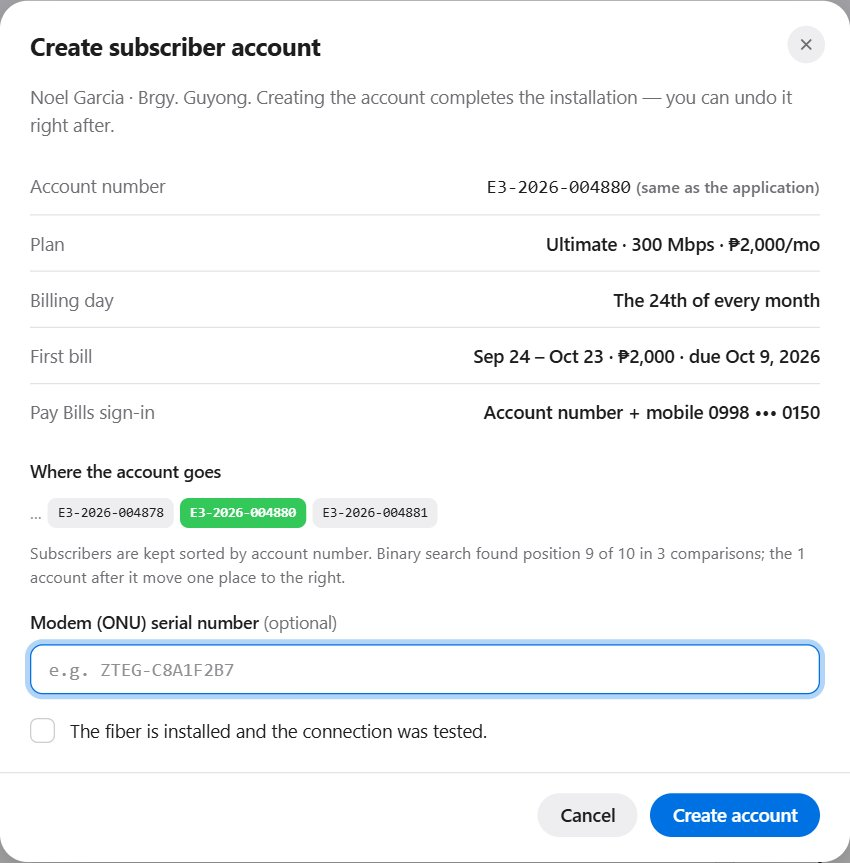
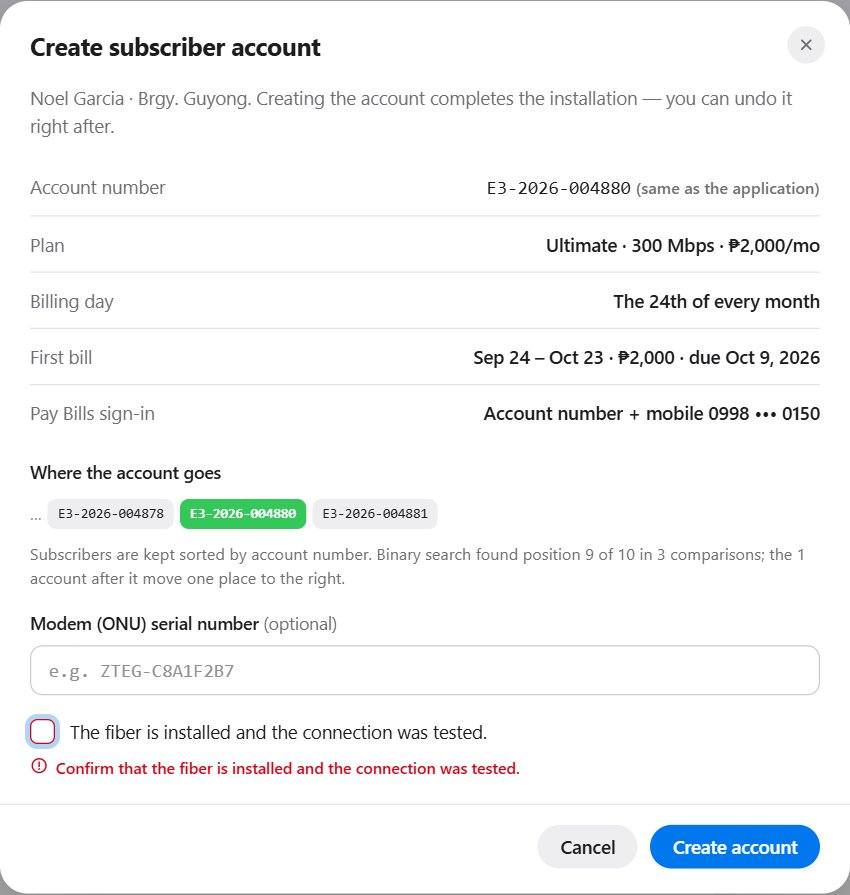
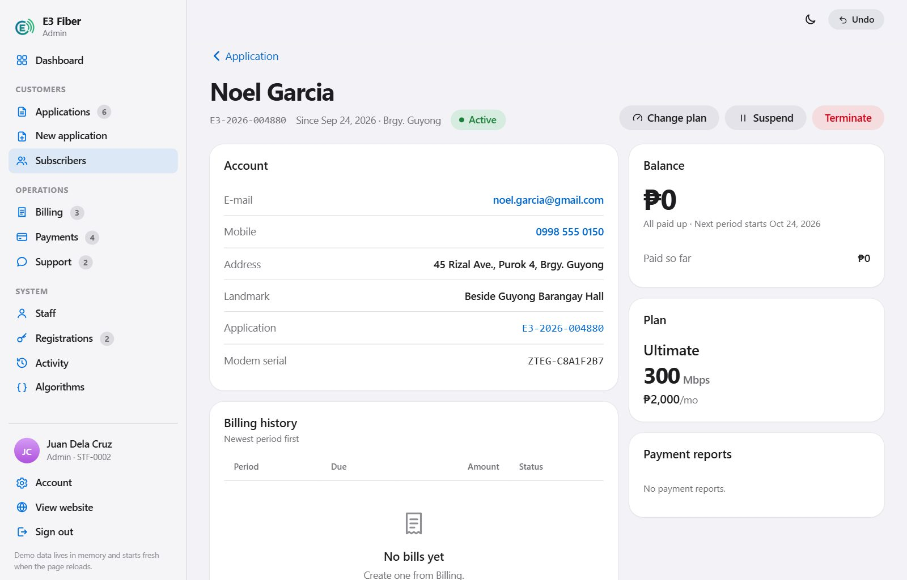
Trace — the sorted insert (computed by our code)
Maricel Dizon (E3-2026-004881) was installed first, so her account is already at the end. Now Noel Garcia’s account E3-2026-004880 — an older number — must go in front of it.
1 · Where does it go? (lowerBound = binary search for the first key ≥ 004880)
| Step | low | high | middle | Account at middle | Decision |
|---|---|---|---|---|---|
| 1 | 0 | 9 | 4 | E3-2026-004875 | smaller → low = 5 |
| 2 | 5 | 9 | 7 | E3-2026-004878 | smaller → low = 8 |
| 3 | 8 | 9 | 8 | E3-2026-004881 | not smaller → high = 8 |
Position 8 (the sheet shows it as “position 9 of 10”), found in 3 comparisons; the real preview reported 3. Neighbours: E3-2026-004878 before, E3-2026-004881 after.
2 · Insert (arrayInsertAt shifts the later records one slot right)
Before: 9 accounts. The yellow record moves one slot to the right (1 shift).
After: 10 accounts, still sorted — Noel at index 8, application status now Completed, modem serial saved as ZTEG-C8A1F2B7.
3 · The account details
| Item | Value |
|---|---|
| Account number | E3-2026-004880 (same as the reference number) |
| Billing day | day 24 of every month — the day the account was created (anniversary billing) |
| First bill | 2026-09-24 → 2026-10-23, due 2026-10-09, ₱2,000 |
| Form errors if left wrong | Use 6–24 letters, digits or dashes, as printed on the modem. Confirm that the fiber is installed and the connection was tested. |
Code walkthrough
assets/js/backend/subscribers.js · lines 58–92
58/** 59 * previewSubscriberAccount — what "Create account" will do, before it happens: 60 * the account number, the billing day and first bill, and WHERE the record will 61 * go in the sorted subscribers array (lowerBound = binary search for the spot). 62 * Time O(log n) · Space O(1) 63 */ 64function previewSubscriberAccount(referenceNo) { 65 const app = findApplication(referenceNo); 66 if (!app) { 67 return { ok: false, error: 'Application not found.' }; 68 } 69 if (app.status !== 'For Installation') { 70 return { ok: false, error: 'Schedule the installation first.' }; 71 } 72 if (findSubscriber(referenceNo)) { 73 return { ok: false, error: 'This customer already has a subscriber account.' }; 74 } 75 const since = nowISO(); 76 const position = lowerBound(subscribers, 'accountNo', referenceNo); 77 const comparisons = dsaLastRun.comparisons; 78 const clock = readClock(); 79 return { 80 ok: true, 81 application: app, 82 accountNo: referenceNo, 83 monthly: planPrice(app.planId, app.customPrice), 84 billingDay: clock.day, 85 firstPeriod: billingPeriod({ since: since }, clock.year, clock.month), 86 position: position, 87 total: subscribers.length, 88 comparisons: comparisons, 89 before: position > 0 ? subscribers[position - 1].accountNo : '', 90 after: position < subscribers.length ? subscribers[position].accountNo : '', 91 }; 92}
- Three guards: the application exists, it is scheduled for installation, and no account exists yet (two binary searches).
- lowerBound finds the insert position; dsaLastRun.comparisons is how many steps it took.
- billingPeriod gives the first period and due date; before / after are the neighbouring account numbers shown in the sheet.
assets/js/backend/subscribers.js · lines 32–56
32/** 33 * createSubscriberFromApplication — open an account for a completed 34 * application ("put" with sortedInsert). Returns { subscriber, position }. 35 * Time O(log n) search + O(n) shift · Space O(1) 36 */ 37function createSubscriberFromApplication(app, sinceISO, extras) { 38 const subscriber = { 39 accountNo: app.referenceNo, 40 fullName: app.fullName, 41 email: app.email, 42 contactNumber: app.contactNumber, 43 barangay: app.barangay, 44 completeAddress: app.completeAddress, 45 landmark: app.landmark, 46 planId: app.planId, 47 customPrice: app.customPrice, 48 status: 'Active', 49 since: sinceISO, 50 statusChangedAt: sinceISO, 51 applicationRef: app.referenceNo, 52 modemSerial: extras && extras.modemSerial ? extras.modemSerial : '', 53 }; 54 const position = sortedInsert(subscribers, 'accountNo', subscriber); 55 return { subscriber: subscriber, position: position }; 56}
- The subscriber copies the application’s details; the account number is the reference number.
- sortedInsert = lower bound + arrayInsertAt; it returns the position, which the trace and Undo use.
assets/js/dsa/search.js · lines 129–149
129/** 130 * lowerBound — the first position whose `field` is >= `value` in a sorted array 131 * (records.length when every key is smaller). This is where `value` belongs. 132 * Time O(log n) · Space O(1) 133 */ 134function lowerBound(sortedRecords, field, value) { 135 let low = 0; // 1. the answer is somewhere in 0 … n 136 let high = sortedRecords.length; 137 let comparisons = 0; 138 while (low < high) { // 2. halve the range until one position is left 139 const middle = Math.floor((low + high) / 2); 140 comparisons++; 141 if (sortedRecords[middle][field] < value) { 142 low = middle + 1; // middle is smaller → the spot is to the right 143 } else { 144 high = middle; // middle is bigger or equal → the spot is here or left 145 } 146 } 147 recordRun('Binary search (position)', comparisons, 0); 148 return low; // 3. the first position whose key is ≥ value 149}
- Like binary search, but it looks for the first key ≥ the value, so it also works when the key is not in the array yet.
- “Smaller” moves low past the middle; otherwise high becomes the middle. When they meet, that is the position.
assets/js/dsa/arrays.js · lines 68–86
68/** 69 * arrayInsertAt — put an item at a position (replaces splice(index, 0, item)). 70 * Items from `index` onward move one slot to the right. 71 * Time O(n − index), O(n) worst · Space O(1) 72 */ 73function arrayInsertAt(array, index, item) { 74 let position = index; 75 if (position < 0) { // keep the position inside the array 76 position = 0; 77 } 78 if (position > array.length) { 79 position = array.length; 80 } 81 for (let i = array.length; i > position; i--) { // 1. from the end, move each item one slot right 82 array[i] = array[i - 1]; 83 } 84 array[position] = item; // 2. the gap is now at `position` → write the item 85 return array.length; 86}
- From the end of the array down to the position, each item moves one slot right (our replacement for splice).
- The new item is written into the gap. The number of moves is (n − position) — zero when inserting at the end.
Member 3 · accounts and access
Dela Cruz Riceerich
Module 7 Admin Login · Module 8 Accounts Management (Subscribers) · Module 9 Admin/Staff Creation & Management · Module 10 Admin Registration & Approval
60-second pitch
My modules decide who can do what. Admin Login finds the staff member by e-mail in a hash table in O(1) on average, compares a salted password hash, and pauses sign-in after 5 wrong tries. Accounts Management lists, searches and sorts subscribers, finds one by binary search, changes plans and statuses through a strict set of allowed moves, and settles the oldest bill first with a queue. Staff Management creates accounts with a one-time temporary password, keeps e-mails unique through the same hash table, and enforces role rules. Registration & Approval lets new employees ask for access themselves; the requests wait in a first-in-first-out queue until an Owner or Admin approves one, which creates the staff account with the password the person chose.
Structures and algorithms I must be able to explain
| Where | Structure / algorithm | Time | Space |
|---|---|---|---|
| Find staff by e-mail (sign-in, duplicates) | Hash table, djb2, separate chaining | O(1) average | O(n + b) |
| Find staff by id / subscriber by account | Binary search | O(log n) | O(1) |
| Lists (subscribers, staff, requests) | Linear filter · string search · chosen sort | O(n²) worst | O(n) |
| Oldest bill first | Queue (after insertion sort by due date) | O(b + k²) | O(k) |
| Staff requests | Queue (circular buffer) | O(r) build, O(1) peek | O(p) |
| Every change | Undo stack | O(1) push / pop | O(1) per step |
Likely panel questions
Why a hash table for e-mails?
Sign-in and “is this e-mail taken?” happen often; a hash table answers in O(1) on average instead of scanning every staff member. The e-mail is lower-cased first, so capital letters don’t matter.
What is a collision and how do you handle it?
Two keys landing in the same bucket. Each bucket is a small array (a chain); we compare the keys in that chain one by one. The table grows (about ×2 buckets, rehashing every key) when there are more than 0.75 keys per bucket, so chains stay short.
Do you store passwords?
No — only a salted hash (the salt is the staff id or the request id). Sign-in hashes what was typed and compares the results. Our hash is a teaching hash; a real system would check passwords on a server with a slow algorithm such as bcrypt.
Why can’t an Admin suspend the Owner, or you suspend yourself?
Role rules in canManageMember: nobody changes their own account (you could lock yourself out) and an Admin can’t change an Owner. Only an Owner can add another Owner.
Why doesn’t the registration form say “e-mail already has an account”?
That would let strangers test which e-mails exist. The form accepts the request; the reviewer sees the hash-table check fail and rejects it as a duplicate.
Why is the balance not stored in the subscriber record?
It is always computed from the bills (sum of unpaid bills), so it can never disagree with them after a payment, an Undo or a new bill.
Module 7 · Dela Cruz Riceerich
Admin Login
1Business process
What task or problem from the client are you solving?
Customer data, bills and payments must only be seen and changed by E3 staff. Each employee signs in with their own account and role (Owner, Admin, Support), so the system knows who did what (the activity log and Undo use it). The login must stop password guessing, refuse suspended or deleted accounts, force people with a temporary password to choose their own, and tell someone whose registration is still waiting what is happening.
2Input
What data is needed by the module?
| Input | Detail |
|---|---|
| any capitals / spaces — tidied before the look-up | |
| Password | compared as a salted hash, never stored as typed |
| Stored | the e-mail hash table, the staff records (id, role, status, passwordHash, passwordSalt, mustChangePassword), the registrations (for waiting requests), the wrong-try count per e-mail and the pause time |
3Process
What data structure and/or algorithm did you use? How does it work step by step?
Input
- password
- hash table + staff array
- wrong tries per e-mail
Process
- paused? (5 wrong tries → 30 s)
- hash-table look-up → id
- binary search by id
- hash the password with the salt, compare
- status must be Active
Output
- signed-in session
- dashboard (or the page asked for, or “change password”)
- or an error / pause
- If sign-in is paused (after 5 wrong passwords in a row), say how many seconds are left.
- findStaffByEmail: lower-case and trim the e-mail, djb2-hash it to a bucket, compare the keys in that bucket’s chain, get the staff id, then binary search the staff array by id.
- staffPasswordMatches: hash the typed password with the member’s salt and compare with the stored hash.
- Not a staff password (or no account)? Check for a waiting or rejected registration with the same e-mail and password and explain its status — checked the same way whether or not a staff account exists, so nobody can learn which e-mails are staff. Otherwise count the wrong try for that e-mail in a second hash table; the 5th for one e-mail — or the 10th overall, which stops someone trying a few passwords on every e-mail — pauses sign-in for 30 seconds.
- A suspended or deleted account is refused.
- Success: reset that e-mail’s counter, remember the staff id, clear the Undo stack, record the sign-in time and log it. The router then opens the requested page; a temporary password forces the Account page first.
4Output
What result does the module produce?
A signed-in session (authState.staffId) — the sidebar shows the name and role and every guarded screen opens; or a clear message (“The e-mail or password is incorrect.”, “This account is suspended …”, “Too many attempts …”, “Your request REG-… is still waiting …”) with a shake of the card. Signing out clears the session and the Undo stack.
5Complexity analysis
What is the time complexity? What is the space complexity?
| Step | Time | Space |
|---|---|---|
| Hash the e-mail (k characters) | O(k) | O(1) |
| Look in the bucket’s chain | O(1) average, O(n) worst (all keys in one bucket) | O(1) |
| Binary search by id | O(log n) | O(1) |
| Password hash (400 rounds over p characters) | O(p) — a constant amount of work per try | O(1) |
| Waiting-registration check (r requests) | O(r) (only when the staff password did not match) | O(1) |
| Count a wrong try for that e-mail (hash table) | O(1) average | O(1) per e-mail tried |
| signIn overall | O(1) average (plus O(log n) and the fixed hash cost) | O(1); the hash table itself O(n + b) |
6Justification
Why did you choose that data structure or algorithm? Why is it appropriate?
- Hash table: e-mail is the key people type; staff are stored by id. A hash table maps e-mail → id in O(1) on average, where a linear search would be O(n) — and the same table answers “is this e-mail already used?” for Modules 9 and 10.
- Separate chaining handles collisions simply (a short array per bucket), and resizing at load 0.75 keeps chains short.
- Binary search by id reuses the staff array’s sorted order (ids only grow, records are appended).
- Salted hash: passwords are never kept in readable form; the salt makes equal passwords look different.
- A counter per e-mail + a pause time: the simplest data that stops unlimited guessing. Keeping the counts in a hash table (e-mail → wrong tries) means signing in to your own account does not reset the count for someone else’s.
7Demonstration
Show that the module works correctly — the input, the process and the output.
- Open a staff page (e.g. #/admin/applications) → you are sent to sign-in.
- Type the Admin e-mail with a wrong password → “The e-mail or password is incorrect.” (the card shakes).
- Tap the Admin demo chip → Sign in → you return to the page you asked for.
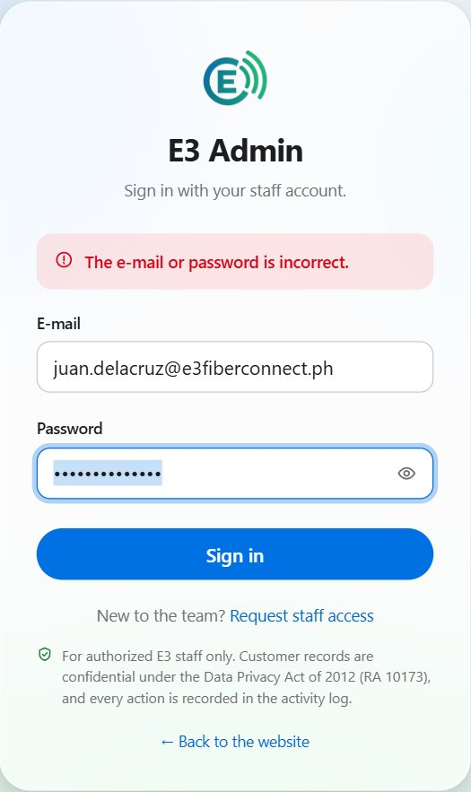
Trace — the e-mail hash table and a sign-in (computed by our code)
The staff e-mails are stored in a hash table with 17 buckets (djb2 hash, then remainder):
| E-mail (key) | djb2 hash | Bucket | Value = staff id |
|---|---|---|---|
| maria.santos@e3fiberconnect.ph | 1,390,595,461 | 1,390,595,461 mod 17 = 0 | STF-0001 · Owner · Active |
| juan.delacruz@e3fiberconnect.ph | 3,956,422,187 | 3,956,422,187 mod 17 = 15 | STF-0002 · Admin · Active |
| paolo.reyes@e3fiberconnect.ph | 2,202,796,774 | 2,202,796,774 mod 17 = 14 | STF-0003 · Support · Active |
| grace.lim@e3fiberconnect.ph | 714,487,751 | 714,487,751 mod 17 = 4 | STF-0004 · Support · Suspended |
| daniel.tan@e3fiberconnect.ph | 1,847,100,051 | 1,847,100,051 mod 17 = 3 | STF-0005 · Admin · Deleted |
Signing in as juan.delacruz@e3fiberconnect.ph: hash → bucket 15 → compare with the 1 key(s) in that bucket → id STF-0002 → binary search on the staff table by id (3 comparisons) → password check:
| Password typed | hashPassword(typed, salt “STF-0002”) | Stored hash | Match? |
|---|---|---|---|
| e3admin | 4c11d5e5 | 4c11d5e5 | ✓ signed in |
| wrong-password | 336680c5 | 4c11d5e5 | ✗ “The e-mail or password is incorrect.” |
| Wrong try | Message |
|---|---|
| 1 | The e-mail or password is incorrect. |
| 2 | The e-mail or password is incorrect. |
| 3 | The e-mail or password is incorrect. |
| 4 | The e-mail or password is incorrect. |
| 5 | Too many attempts. Sign-in is paused for 30 seconds. |
| 6 | Too many attempts. Try again in 30 seconds. |
Code walkthrough
assets/js/backend/auth.js · lines 27–69
27/** 28 * signIn — check the e-mail (hash-table look-up) and the password hash. 29 * Only Active accounts may sign in. 30 * Time O(1) average + one password hash (400 fixed rounds, O(k) for k characters) 31 */ 32function signIn(email, password) { 33 const now = Date.now(); 34 if (authState.pausedUntil > now) { // 1. paused after 5 wrong tries? 35 const seconds = Math.ceil((authState.pausedUntil - now) / 1000); 36 return { ok: false, error: 'Too many attempts. Try again in ' + pluralize(seconds, 'second') + '.' }; 37 } 38 const emailKey = toLowerText(trimText(email)); 39 const member = findStaffByEmail(email); // 2. hash-table look-up by e-mail, O(1) 40 if (!member || !staffPasswordMatches(member, password)) { // 3. compare the salted password hash 41 // Not a staff password — maybe a registration that is waiting or was not approved. 42 // It is only mentioned when the password the person chose for it matches, and it 43 // is checked whether or not a staff account exists, so the answer never reveals 44 // which e-mails belong to staff. 45 const request = registrationForSignIn(email, password); 46 if (request) { 47 return { ok: false, error: registrationStatusMessage(request), registration: request }; 48 } 49 const tries = (hashGet(authState.failedByEmail, emailKey) || 0) + 1; // 4. count wrong tries for this e-mail 50 authState.failedInARow = authState.failedInARow + 1; // … and in a row on any e-mail 51 if (tries >= SIGN_IN_MAX_ATTEMPTS || authState.failedInARow >= SIGN_IN_MAX_TOTAL_ATTEMPTS) { // 5th for one e-mail / 10th overall pauses 52 hashPut(authState.failedByEmail, emailKey, 0); 53 authState.failedInARow = 0; 54 authState.pausedUntil = now + SIGN_IN_PAUSE_MS; 55 return { ok: false, error: 'Too many attempts. Sign-in is paused for 30 seconds.' }; 56 } 57 hashPut(authState.failedByEmail, emailKey, tries); 58 return { ok: false, error: 'The e-mail or password is incorrect.' }; 59 } 60 if (member.status !== 'Active') { // 5. suspended or deleted accounts can't sign in 61 return { ok: false, error: 'This account is ' + toLowerText(member.status) + '. Ask the owner to reactivate it.' }; 62 } 63 hashPut(authState.failedByEmail, emailKey, 0); // 6. success: this e-mail's count starts again; remember who is signed in 64 authState.staffId = member.id; 65 clearUndoHistory(); // Undo only ever reverses your own actions from this sign-in 66 member.lastSignIn = nowISO(); 67 logActivity('auth', member.fullName + ' signed in', member.fullName); 68 return { ok: true, staff: member }; 69}
- Step 1 checks the pause time; Math.ceil turns milliseconds into whole seconds for the message.
- Step 2 is the hash-table look-up (below). Step 3: staffPasswordMatches hashes the typed password with the stored salt and compares.
- When it doesn’t match (or there is no account), a waiting or rejected registration is explained — only if its password matches. Step 4 then counts the wrong try for that e-mail in authState.failedByEmail (hashGet / hashPut); the 5th for that e-mail, or the 10th overall (failedInARow), sets pausedUntil 30 seconds ahead. The message never says whether the e-mail or the password was wrong.
- Step 5 refuses suspended/deleted accounts; step 6 records the session, clears Undo and logs the sign-in.
assets/js/backend/staff.js · lines 29–33
29/** findStaffByEmail — hash-table look-up by e-mail, then by id. O(1) average */ 30function findStaffByEmail(email) { 31 const id = hashGet(staffEmailIndex, toLowerText(trimText(email))); 32 return id === null ? null : findStaffById(id); 33}
- The e-mail is trimmed and lower-cased, then hashGet returns the staff id stored under it (or null).
- findStaffById is a binary search on the staff array sorted by id.
assets/js/dsa/hashtable.js · lines 96–104
96/** 97 * hashGet — the value stored under `key`, or null. 98 * Time O(1) average · Space O(1) 99 */ 100function hashGet(table, key) { 101 const bucket = table.buckets[hashText(key, table.buckets.length)]; // 1. jump straight to the key's bucket 102 const position = hashFindInBucket(bucket, key); // 2. check the few keys in that bucket 103 return position === -1 ? null : bucket[position].value; 104}
- hashText turns the key into a bucket number (djb2: start at 5381, multiply by 33 and add each character, then take the remainder).
- hashFindInBucket compares the few keys in that bucket; a missing key returns null.
assets/js/backend/staff.js · lines 40–47
40/** 41 * staffPasswordMatches — hash the typed password with the member's salt and 42 * compare it with the stored hash (the password itself is never stored). 43 * Time O(r · n) for the hash · Space O(1) 44 */ 45function staffPasswordMatches(member, password) { 46 return hashPassword(password, member.passwordSalt) === member.passwordHash; 47}
- The same hash function with the same salt always gives the same result, so equal results mean the right password.
Module 8 · Dela Cruz Riceerich
Accounts Management (Subscribers)
1Business process
What task or problem from the client are you solving?
Once customers are connected, the office must manage their accounts: find a subscriber quickly, see who owes the most, look at one account’s bills, balance, payments and tickets, change the plan (the next bill uses the new price), suspend an account for non-payment, reactivate it, or terminate it — and settle a bill paid at the office, always the oldest one first.
2Input
What data is needed by the module?
| Input | Values / rules |
|---|---|
| Status filter · search · sort · algorithm | All / Active / Suspended / Terminated · name, e-mail, account, barangay, mobile · newest, oldest, name, balance, plan price |
| Account number (the page address) | e.g. E3-2026-004876 |
| Status change | Active ↔ Suspended; Active or Suspended → Terminated (final) |
| Plan change | another plan, or Custom ₱300–₱20,000; not the same plan |
| Stored data | subscribers, bills, payment reports, tickets |
3Process
What data structure and/or algorithm did you use? How does it work step by step?
Input
- filter, search, sort
- account number
- new status / plan
- subscribers + bills
Process
- list: filter → search → balances → sort
- binary search by account
- check the allowed status move
- snapshot → change → push Undo
- unpaid bills → queue → settle front
Output
- sorted list with balances
- account page
- new status / plan
- oldest bill paid
- List (listSubscribers): filter by status (linear search), search the text, compute each row’s balance by summing its unpaid bills, then sort with the chosen algorithm.
- Open an account: findSubscriber = binary search on the sorted account numbers; its bills are collected (linear) and ordered newest first (insertion sort).
- Status change (setSubscriberStatus): binary search → check the move is allowed → copy the old values → change → push one Undo step → log.
- Plan change (changeSubscriberPlan): the plan must exist (or the custom price be in range) and differ from the current one; bills already issued keep their amount.
- Settle at the office: unpaidBillsQueue collects the account’s unpaid bills, sorts them by due date and enqueues them; settleOldestBill dequeues the front (the oldest) and marks it paid.
4Output
What result does the module produce?
The subscribers table (plan, balance in red when overdue, status) with the sorting caption; the account page with bills, balance, “next to settle”, payment reports and tickets; updated status or plan with a toast offering Undo; and the oldest unpaid bill marked paid.
5Complexity analysis
What is the time complexity? What is the space complexity?
| Operation | Time | Space |
|---|---|---|
| List (n subscribers, B bills): filter + search + balances | O(n · B) for the balances | O(n) |
| Sort the rows | O(n²) worst (insertion/bubble O(n) best) | O(n) |
| Find one account (binary search) | O(log n) | O(1) |
| Status or plan change | O(log n) | O(1) |
| Oldest-bill queue for one account (k unpaid bills) | O(B + k²) | O(k) |
| Settle the front bill | O(1) dequeue + O(log B) to update | O(1) |
6Justification
Why did you choose that data structure or algorithm? Why is it appropriate?
- Binary search by account number: every subscriber page, Pay Bills sign-in, bill and payment check looks up one account by its exact number — the array is kept sorted by Module 6, so each look-up is O(log n).
- Allowed-moves check (a small state machine): prevents impossible changes such as reactivating a terminated account.
- Queue for settling: payments clear the oldest debt first (first in, first out) — fair to the customer and standard accounting practice.
- Balances computed, not stored: always correct after payments, new bills or Undo.
- Undo stack: a wrong suspension can be reversed immediately.
7Demonstration
Show that the module works correctly — the input, the process and the output.
- Subscribers → sort “Balance: high to low” with selection sort → Patricia Gonzales (suspended, two overdue bills) is first.
- Open Patricia’s page: two unpaid bills, “Next to settle” is the oldest one.
- Open Kristine’s page → Change plan → choose another plan → Save → press Undo.
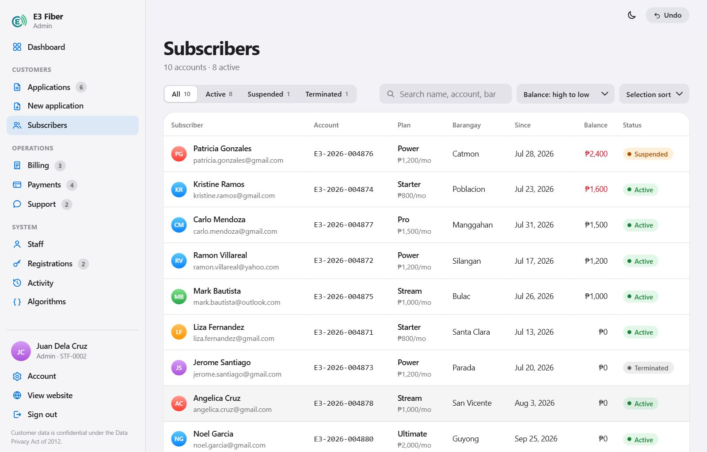
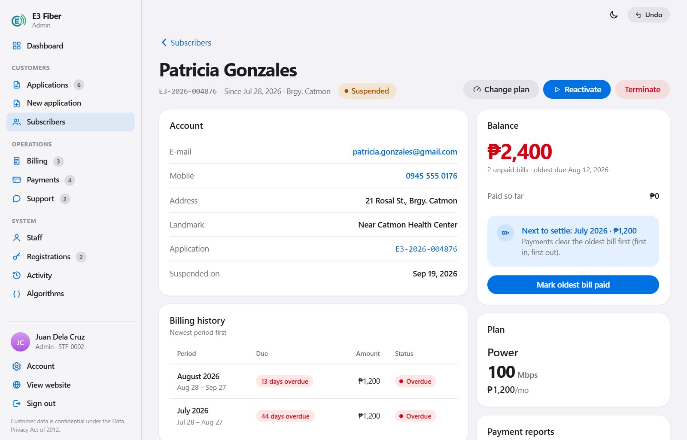
Trace — sorting, searching and the bill queue (computed by our code)
Sorting the 8 subscribers by balance, high to low (each row’s balance is summed from the bills first):
| Algorithm | Comparisons | Moves |
|---|---|---|
| Insertion sort | 19 | 15 |
| Selection sort | 28 | 3 |
| Bubble sort | 27 | 15 |
| Top rows | Account | Balance | Status |
|---|---|---|---|
| Patricia Gonzales | E3-2026-004876 | ₱2,400 | Suspended |
| Kristine Ramos | E3-2026-004874 | ₱1,600 | Active |
| Carlo Mendoza | E3-2026-004877 | ₱1,500 | Active |
| Ramon Villareal | E3-2026-004872 | ₱1,200 | Active |
Counts by status (one pass): 6 Active · 1 Suspended · 1 Terminated. Opening Patricia’s page finds E3-2026-004876 by binary search in 2 comparisons.
Her unpaid bills as a queue (oldest due date at the front):
“Mark oldest bill paid” dequeues the front bill, so the oldest debt is always settled first (FIFO).
Code walkthrough
assets/js/backend/subscribers.js · lines 214–241
214/** 215 * setSubscriberStatus — suspend, reactivate or terminate an account. 216 * Allowed: Active → Suspended, Suspended → Active, Active/Suspended → Terminated. 217 * Time O(log n) 218 */ 219function setSubscriberStatus(accountNo, status, actor) { 220 const subscriber = findSubscriber(accountNo); // 1. binary search by account number 221 if (!subscriber) { 222 return { ok: false, error: 'Subscriber not found.' }; 223 } 224 if (subscriber.status === 'Terminated') { 225 return { ok: false, error: 'This account is already terminated.' }; 226 } 227 const allowed = (subscriber.status === 'Active' && (status === 'Suspended' || status === 'Terminated')) 228 || (subscriber.status === 'Suspended' && (status === 'Active' || status === 'Terminated')); 229 if (!allowed) { // 2. only the allowed moves 230 return { ok: false, error: 'That change is not allowed.' }; 231 } 232 const verbs = { Active: 'Reactivate', Suspended: 'Suspend', Terminated: 'Terminate' }; 233 const before = snapshotFields(subscriber, ['status', 'statusChangedAt']); // 3. remember the old values 234 subscriber.status = status; // 4. change the status 235 subscriber.statusChangedAt = nowISO(); 236 // 5. one undo step (stack push) 237 pushUndo(verbs[status] + ' ' + subscriber.fullName, [updateOperation('subscribers', accountNo, before)], nameOfActor(actor)); 238 logActivity('subscriber', verbs[status] + 'd ' + subscriber.fullName + ' (' + accountNo + ')', nameOfActor(actor)); 239 markDataChanged(); 240 return { ok: true, subscriber: subscriber }; 241}
- Binary search for the account; a terminated account can never change again.
- Only four moves are allowed: Active → Suspended or Terminated, Suspended → Active or Terminated.
- snapshotFields copies the old status and date so Undo can restore them.
- The change is made, one Undo step is pushed and the activity log records who did it.
assets/js/backend/subscribers.js · lines 243–276
243/** 244 * changeSubscriberPlan — move an account to another plan (or a custom price). 245 * Bills already issued keep their amount; the next bill uses the new price. 246 * Time O(log n) 247 */ 248function changeSubscriberPlan(accountNo, planId, customPrice, actor) { 249 const subscriber = findSubscriber(accountNo); 250 if (!subscriber) { 251 return { ok: false, error: 'Subscriber not found.' }; 252 } 253 if (subscriber.status === 'Terminated') { 254 return { ok: false, error: 'A terminated account can’t change plans.' }; 255 } 256 let price = null; 257 if (planId === 'custom') { 258 price = Number(customPrice); 259 if (!(price >= 300 && price <= 20000)) { 260 return { ok: false, error: 'Enter a monthly price from ₱300 to ₱20,000.' }; 261 } 262 } else if (!findPlan(planId)) { 263 return { ok: false, error: 'Choose a plan.' }; 264 } 265 if (planId === subscriber.planId && price === subscriber.customPrice) { 266 return { ok: false, error: 'That is already the current plan.' }; 267 } 268 const before = snapshotFields(subscriber, ['planId', 'customPrice']); 269 const oldLabel = planName(subscriber.planId); 270 subscriber.planId = planId; 271 subscriber.customPrice = price; 272 pushUndo('Change ' + subscriber.fullName + ' to ' + planName(planId), [updateOperation('subscribers', accountNo, before)], nameOfActor(actor)); 273 logActivity('subscriber', 'Changed ' + subscriber.fullName + ' from ' + oldLabel + ' to ' + planName(planId), nameOfActor(actor)); 274 markDataChanged(); 275 return { ok: true, subscriber: subscriber }; 276}
- A custom price must be ₱300–₱20,000; a normal plan must exist (findPlan).
- Choosing the current plan again is refused; otherwise the old plan is snapshotted for Undo and the new one saved.
assets/js/backend/billing.js · lines 166–184
166/** 167 * unpaidBillsQueue — the account's unpaid bills as a QUEUE, oldest due date 168 * first, so payments always settle the oldest debt first (FIFO). 169 * Time O(n + k²) · Space O(k) 170 */ 171function unpaidBillsQueue(accountNo) { 172 const unpaid = []; 173 for (let i = 0; i < bills.length; i++) { 174 if (bills[i].accountNo === accountNo && bills[i].status === 'Unpaid') { 175 arrayAppend(unpaid, bills[i]); 176 } 177 } 178 const ordered = insertionSort(unpaid, 'dueDate', 'asc'); 179 const queue = createQueue(4); 180 for (let i = 0; i < ordered.length; i++) { 181 enqueue(queue, ordered[i]); 182 } 183 return queue; 184}
- One pass collects the account’s unpaid bills.
- Insertion sort orders them by due date (oldest first), then they are enqueued in that order.
assets/js/backend/billing.js · lines 213–223
213/** 214 * settleOldestBill — take the front of the unpaid-bills queue (dequeue) and pay it. 215 * Time O(n + k²) · Space O(k) 216 */ 217function settleOldestBill(accountNo, actor) { 218 const oldest = dequeue(unpaidBillsQueue(accountNo)); 219 if (!oldest) { 220 return { ok: false, error: 'There are no unpaid bills.' }; 221 } 222 return settleBill(oldest.billId, actor, 'Office payment'); 223}
- dequeue takes the front of the queue — the oldest unpaid bill — and settleBill marks it paid (with its own Undo step).
Module 9 · Dela Cruz Riceerich
Admin/Staff Creation & Management
1Business process
What task or problem from the client are you solving?
The Owner and Admins must give new employees an account with the right role, reset forgotten passwords, and suspend, reactivate or delete accounts when people leave — with rules so nobody can take over the system: e-mails are unique, only the Owner can create another Owner, an Admin can’t change the Owner, and nobody can change their own account. The temporary password is shown once and must be changed at the first sign-in.
2Input
What data is needed by the module?
| Input | Rule |
|---|---|
| Full name | first and last name, ≤ 80 characters |
| Work e-mail | valid, and not already used (hash-table look-up, ignoring capitals) |
| Role | Owner (only if you are the Owner), Admin or Support |
| Start date | a real date within the next year |
| Signed-in member (actor) | must be an Owner or Admin |
| Later actions | Suspend · Reactivate · Reset password · Delete (on another member) |
3Process
What data structure and/or algorithm did you use? How does it work step by step?
Input
- name, e-mail, role, start date
- signed-in Owner/Admin
- staff array + e-mail hash table
Process
- role rules
- validate (e-mail: hash look-up)
- next id STF-0006
- random temporary password → salted hash
- append + hashPut
- push Undo
Output
- staff account (Active)
- temporary password (shown once)
- must change at first sign-in
- Only an Owner or Admin may add staff (canManageStaff).
- validateNewStaff checks each field; isStaffEmailTaken is one hash-table look-up.
- The counter gives the next id; ids only grow, so appending keeps the array sorted for binary search.
- generateTempPassword picks 10 random characters (no look-alikes such as I, l, O, 0, 1), with at least two digits; only its salted hash is stored.
- hashPut adds e-mail → id to the hash table (it grows when the load passes 0.75); one Undo step can remove the account again.
- Managing: setStaffStatus finds the member by binary search, applies the role rules and the allowed moves (Active ↔ Suspended, → Deleted), and pushes Undo; resetStaffPassword issues a new temporary password.
- Listing: filter, search and sort (by role rank Owner → Admin → Support, name, start date or last sign-in) with the chosen algorithm.
4Output
What result does the module produce?
A new staff record { id, fullName, email, role, status: "Active", startDate, lastSignIn: null, passwordHash, passwordSalt, mustChangePassword: true }, the e-mail in the hash table, the credential sheet with the one-time password, the updated staff list, and status changes with Undo.
5Complexity analysis
What is the time complexity? What is the space complexity?
| Operation | Time | Space |
|---|---|---|
| Validate (e-mail uniqueness by hash) | O(1) average + O(k) for the text | O(1) |
| Temporary password (10 characters) | O(1) | O(1) |
| Append the record | O(1) | O(1) |
| hashPut | O(1) average; O(n + b) on the rare resize | O(1) |
| Suspend / reactivate / delete / reset | O(log n) | O(1) |
| List with sort | O(n²) worst | O(n) |
6Justification
Why did you choose that data structure or algorithm? Why is it appropriate?
- Hash table for e-mails: uniqueness must be checked on every new account and every registration, and the same table serves the sign-in — O(1) average instead of O(n).
- Append with increasing ids: O(1) and keeps binary search by id valid.
- Role rank (Owner 1, Admin 2, Support 3) turns “sort by role” into a number sort, so the same generic sorting functions work.
- Temporary password shown once, stored hashed: the admin never keeps a readable copy, and the employee must replace it.
- A deleted member keeps their record (status Deleted), so the e-mail stays reserved and the history still shows who did what.
7Demonstration
Show that the module works correctly — the input, the process and the output.
- Staff → Add staff: Paula Ignacio, paula.ignacio@e3fiberconnect.ph, Support → Add → the one-time password appears.
- Try the same e-mail in capitals → “That e-mail already has an account.”
- Sign out and in as Paula with the temporary password → she must choose a new password first.
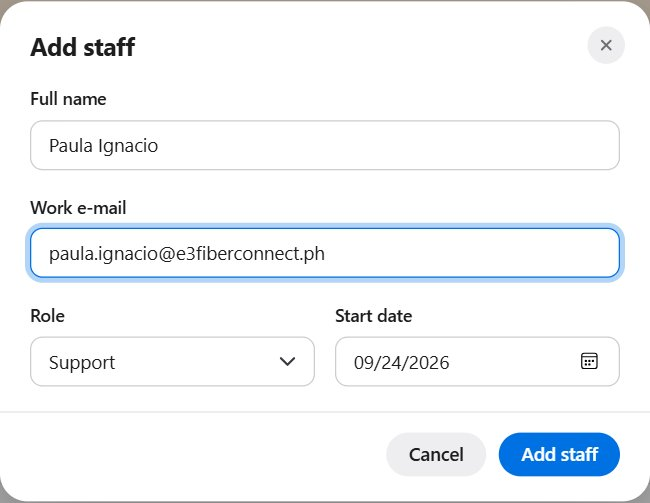
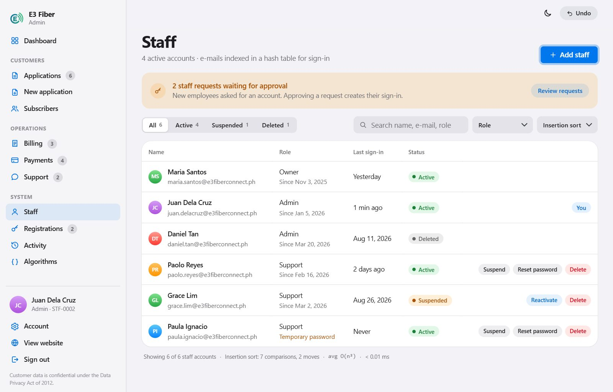
Trace — adding a member and the role rules (computed by our code)
| Step | Result |
|---|---|
| Validate (hash-table look-up for the e-mail) | ✓ no errors |
| New id (counter + 1, appended → ids stay sorted) | STF-0006 |
| E-mail stored in lower case | paula.ignacio@e3fiberconnect.ph |
| Temporary password | 10 random characters, shown once; stored only as hash b895cc85 |
| Must change it at first sign-in | ✓ yes |
| hashPut(e-mail → id) | bucket 1: paula.ignacio@e3fiberconnect.ph → STF-0006 |
| Hash table size | 5 → 6 keys in 17 buckets (load 0.35 ≤ 0.75, so no resize) |
| Rule checked | Message |
|---|---|
| Same e-mail in capitals | ✗ That e-mail already has an account. |
| An Admin adding an Owner | ✗ Only the Owner can add another Owner. |
| Changing your own account | ✗ You can’t change this account. |
| An Admin changing the Owner | ✗ You can’t change this account. |
Code walkthrough
assets/js/backend/staff.js · lines 124–158
124/** 125 * addStaff — create an account with a temporary password. Returns the password 126 * once, so it can be shown to the admin (it is only stored as a hash). 127 * Time O(1) append + O(1) hash put · Space O(1) 128 */ 129function addStaff(data, actor) { 130 if (!canManageStaff(actor)) { // 1. only Owners and Admins add staff 131 return { ok: false, errors: { fullName: 'Only an Owner or Admin can add staff.' } }; 132 } 133 const errors = validateNewStaff(data, actor); // 2. check the fields (e-mail through the hash table) 134 if (hasAnyErrors(errors)) { 135 return { ok: false, errors: errors }; 136 } 137 counters.staff = counters.staff + 1; // 3. the next staff id, e.g. STF-0006 138 const id = formatStaffId(counters.staff); 139 const tempPassword = generateTempPassword(); // 4. a random temporary password 140 const member = { 141 id: id, 142 fullName: collapseSpaces(data.fullName), 143 email: toLowerText(trimText(data.email)), 144 role: data.role, 145 status: 'Active', 146 startDate: data.startDate, 147 lastSignIn: null, 148 passwordHash: hashPassword(tempPassword, id), 149 passwordSalt: id, 150 mustChangePassword: true, 151 }; 152 arrayAppend(staffMembers, member); // 5. ids increase → the table stays sorted 153 hashPut(staffEmailIndex, member.email, id); // 6. index the e-mail for sign-in 154 pushUndo('Add staff ' + member.fullName, [insertOperation('staffMembers', id)], nameOfActor(actor)); // 7. undo step 155 logActivity('staff', 'Added ' + member.fullName + ' as ' + member.role, nameOfActor(actor)); 156 markDataChanged(); 157 return { ok: true, staff: member, tempPassword: tempPassword }; 158}
- Steps 1–2: permission, then field checks (the e-mail goes through the hash table).
- Steps 3–4: next id and a random temporary password; the record stores only hashPassword(tempPassword, id).
- Steps 5–7: append (sorted by id), index the e-mail, push one Undo step, log it, and return the temporary password once so the screen can show it.
assets/js/backend/staff.js · lines 160–184
160/** 161 * setStaffStatus — suspend, reactivate or delete a staff account. 162 * Time O(log n) 163 */ 164function setStaffStatus(id, status, actor) { 165 const member = findStaffById(id); 166 if (!member) { 167 return { ok: false, error: 'Staff member not found.' }; 168 } 169 if (!canManageMember(actor, member)) { 170 return { ok: false, error: 'You can’t change this account.' }; 171 } 172 const allowed = (member.status === 'Active' && (status === 'Suspended' || status === 'Deleted')) 173 || (member.status === 'Suspended' && (status === 'Active' || status === 'Deleted')); 174 if (!allowed) { 175 return { ok: false, error: 'That change is not allowed.' }; 176 } 177 const verbs = { Active: 'Reactivate', Suspended: 'Suspend', Deleted: 'Delete' }; 178 const before = snapshotFields(member, ['status']); 179 member.status = status; 180 pushUndo(verbs[status] + ' ' + member.fullName, [updateOperation('staffMembers', id, before)], nameOfActor(actor)); 181 logActivity('staff', verbs[status] + 'd ' + member.fullName, nameOfActor(actor)); 182 markDataChanged(); 183 return { ok: true, staff: member }; 184}
- Binary search for the member; canManageMember applies the role rules (not yourself, Admins can’t change the Owner, not a deleted account).
- Only allowed moves pass; the old status is snapshotted for Undo.
assets/js/dsa/hashtable.js · lines 78–94
78/** 79 * hashPut — store `value` under `key`; replaces the value if the key exists. 80 * Time O(1) average, O(n) worst (everything in one bucket) · Space O(1) 81 */ 82function hashPut(table, key, value) { 83 const bucket = table.buckets[hashText(key, table.buckets.length)]; // 1. hash the key → its bucket 84 const position = hashFindInBucket(bucket, key); // 2. already stored? 85 if (position !== -1) { 86 bucket[position].value = value; // yes → replace the value 87 return; 88 } 89 arrayAppend(bucket, { key: key, value: value }); // 3. no → add it to the bucket's chain 90 table.size = table.size + 1; 91 if (table.size / table.buckets.length > HASH_MAX_LOAD) { // 4. too full → about double the buckets 92 hashResize(table); 93 } 94}
- Hash the key to a bucket; if the key is already there, replace its value.
- Otherwise add it to the bucket’s chain; if the table is more than 0.75 full, hashResize rebuilds it with about twice as many buckets.
Module 10 · Dela Cruz Riceerich
Admin Registration & Approval of Registration Admins
1Business process
What task or problem from the client are you solving?
When E3 hires someone, the owner should not have to type the new employee’s details and hand over a temporary password. With Admin Registration the employee requests access themselves (name, work e-mail, mobile, the access they need, their own password). With Approval, an Owner or Admin reviews the requests first come, first served, approves the right people — which creates the staff account with the password they chose — and rejects the rest with a reason the requester sees when trying to sign in.
2Input
What data is needed by the module?
| Input | Rule |
|---|---|
| Full name | first and last name, ≤ 80 characters |
| Work e-mail | valid and ending with @e3fiberconnect.ph; no other pending request for it |
| Mobile | 11 digits starting with 09 |
| Access | Support or Admin (an Owner can never be self-registered) |
| Note for the reviewer | optional, ≤ 150 characters |
| Password + confirmation | 8+ characters with a letter and a digit; both the same |
| Agreement | “this request is for my own E3 account” — required |
| Approval | the reviewer (Owner/Admin), the decision, and a reason when rejecting |
3Process
What data structure and/or algorithm did you use? How does it work step by step?
Input
- request form
- reviewer’s decision
- registrations, staff, hash table
Process
- validate (character scans, linear search for a pending duplicate)
- salted hash, append → enqueued
- reviewer takes the front
- checks: work e-mail, hash look-up, reviewer role
- approve → create staff + hashPut; reject → reason
Output
- REG number + place in the queue
- staff account with the chosen password
- or rejection reason at sign-in
Registration
- validateRegistration checks each field. It does not reveal whether the e-mail already has a staff account (privacy); it only blocks a second pending request for the same e-mail (linear search).
- submitRegistration gives the next id (REG-000005), stores only a salted hash of the password, and appends the request — it joins the rear of the approval queue. The screen shows the place in line.
- If the person tries to sign in before approval, sign-in finds the request and says it is still waiting (only with the right password).
Approval
- registrationQueue enqueues the pending requests in arrival order; the page shows the front one (queuePeek) with its checks.
- registrationChecks: work e-mail? no staff account with this e-mail yet (one hash-table look-up)? is the reviewer an Owner or Admin?
- Approve (approveRegistration): binary search for the request, repeat the checks, create the staff record with the same password hash and salt, append it, hashPut the e-mail, mark the request Approved (it leaves the queue), push one Undo step with both changes.
- Reject (rejectRegistration): choose a reason (plus a note for “Other”); the requester sees it at sign-in.
4Output
What result does the module produce?
For the requester: “Request sent”, the request number and “number N in the approval queue”; later a sign-in message (waiting / not approved + reason — except “Duplicate request”, which is not repeated because it would hint that the e-mail belongs to staff) or a working staff account. For the reviewer: the approval queue with the front request and its checks, the list of all requests (Pending, Approved with the new staff id, Rejected with the reason), and a new member in the Staff list.
5Complexity analysis
What is the time complexity? What is the space complexity?
| Operation | Time | Space |
|---|---|---|
| Validate a request (pending-duplicate scan over r requests) | O(r + k) | O(1) |
| Submit (append) | O(1) + the password hash | O(1) |
| Build the approval queue / peek the front | O(r) / O(1) | O(p) |
| Checks (hash look-up) | O(1) average | O(1) |
| Approve (binary search + append + hashPut) | O(log r) + O(1) + O(1) average | O(1) |
| Reject | O(log r) | O(1) |
| Sign-in message for a request | O(r) | O(1) |
6Justification
Why did you choose that data structure or algorithm? Why is it appropriate?
- Queue: requests are reviewed in the order they arrived — nobody is skipped; the front is always the oldest.
- Hash table: “does this e-mail already have a staff account?” is one O(1) look-up in the same index the sign-in uses.
- Linear search for a second pending request: requests are few and short-lived, so a scan is simplest.
- Password hash moved unchanged: the approver never sees or sets the password; the new member signs in with the one they chose.
- Privacy: the public form never tells whether an e-mail exists; the status is only explained to someone who knows the password.
7Demonstration
Show that the module works correctly — the input, the process and the output.
- Sign-in → “Request staff access” → fill in Nora Dizon (Support) → Send → REG-000005, number 3 in the queue.
- Try to sign in as Nora → “still waiting for an Owner or Admin”.
- Sign in as the Owner → Registrations: the front is Lorenzo (REG-000003) with all checks passed → Approve → he appears in Staff and can sign in with lorenzo2026.
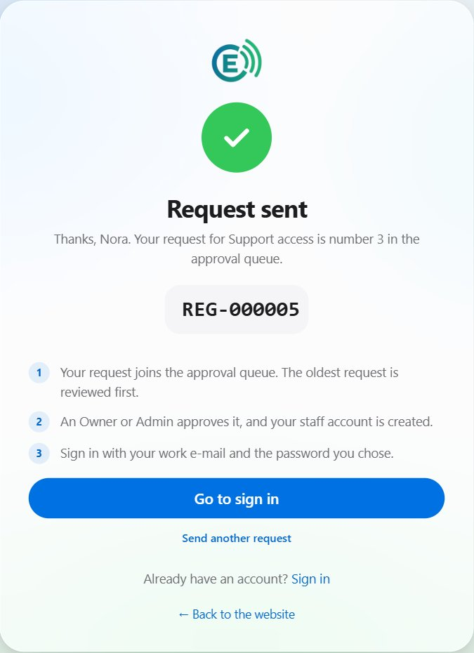
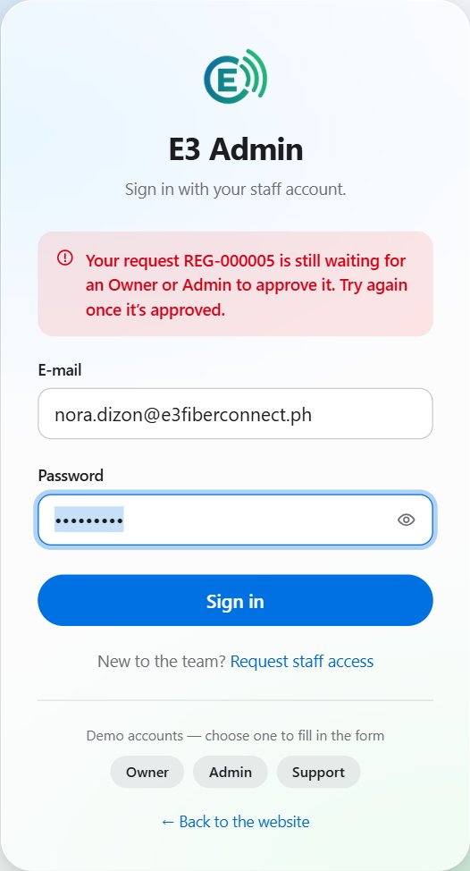
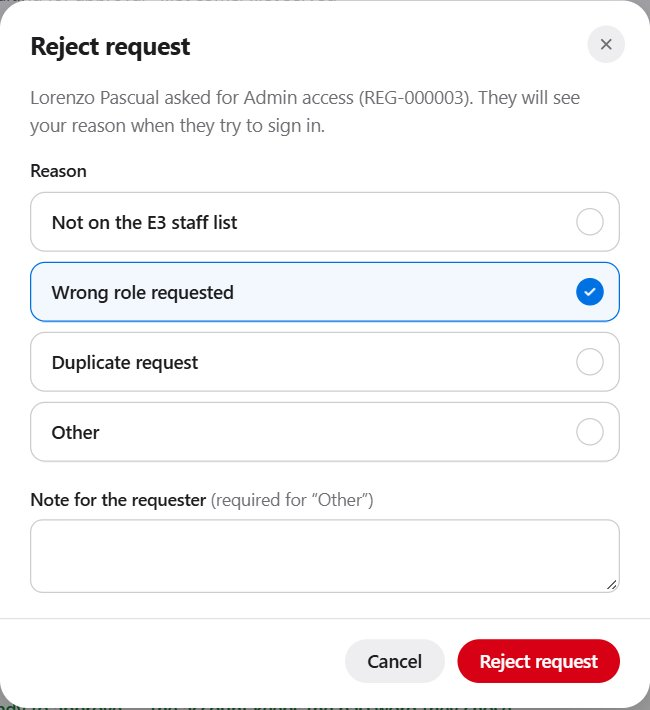
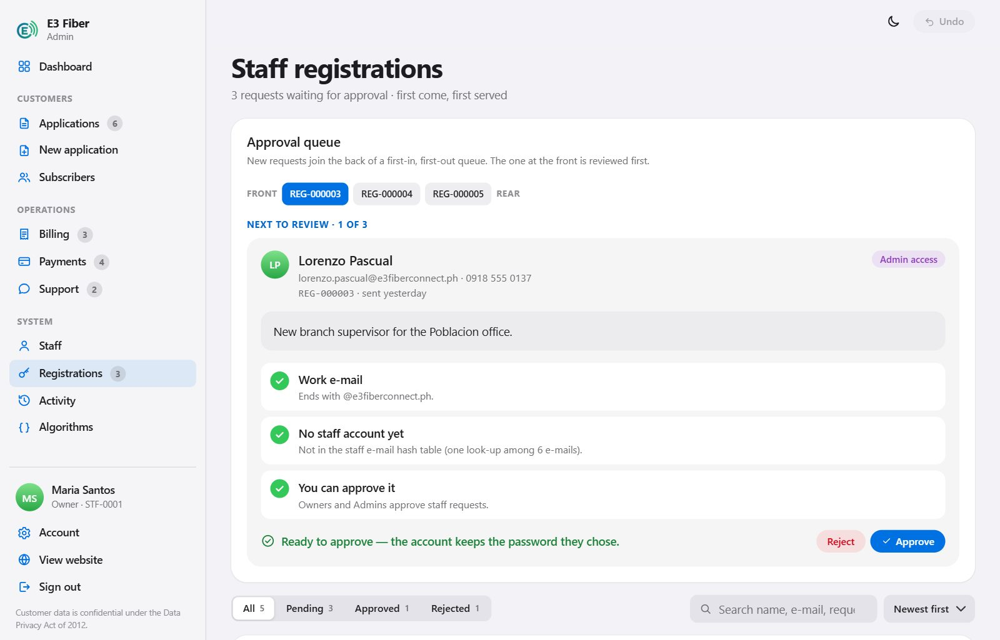
Trace — the approval queue from request to account (computed by our code)
Validation of a bad request
| Field | Message |
|---|---|
| Full name | ✗ Enter your first and last name. |
| Work e-mail | ✗ Use your E3 work e-mail (…@e3fiberconnect.ph). |
| Mobile | ✗ Enter an 11-digit mobile number like 0917 555 0199. |
| Access | ✗ Choose the access you need. |
| Password | ✗ Use at least 8 characters with a letter and a number. |
| Confirm | ✗ The passwords don’t match. |
| Agreement | ✗ Please confirm that this request is for your own E3 account. |
The approval queue (circular buffer, capacity 4)
Before: REG-000003 Lorenzo Pascual → REG-000004 Trisha Manalo (front = slot 0, count 2)
Nora submits → REG-000005 is enqueued at the rear (password stored as salted hash b7ad5ed5, salt REG-000005):
Her sign-in before approval (right password): “Your request REG-000005 is still waiting for an Owner or Admin to approve it. Try again once it’s approved.” — with a wrong password: “The e-mail or password is incorrect.”.
Review of the front request by the Owner
| Check | Result | Detail |
|---|---|---|
| Work e-mail | ✓ yes | Ends with @e3fiberconnect.ph. |
| No staff account yet | ✓ yes | Not in the staff e-mail hash table (one look-up among 5 e-mails). |
| You can approve it | ✓ yes | Owners and Admins approve staff requests. |
Approve → staff account STF-0006 for Lorenzo Pascual (Admin), same password hash as the request: ✓ yes. The request leaves the queue:
Lorenzo Pascual can now sign in with the password chosen at registration: ✓ signed in.
Code walkthrough
assets/js/backend/registrations.js · lines 87–118
87/** 88 * submitRegistration — save a request with the next id (appended → still sorted). 89 * Time O(r) for the checks + O(1) append · Space O(1) 90 */ 91function submitRegistration(data) { 92 const errors = validateRegistration(data); 93 if (hasAnyErrors(errors)) { 94 return { ok: false, errors: errors }; 95 } 96 counters.registration = counters.registration + 1; 97 const id = formatRegistrationId(counters.registration); 98 const request = { 99 registrationId: id, 100 fullName: collapseSpaces(data.fullName), 101 email: toLowerText(trimText(data.email)), 102 mobile: normalizeMobile(data.mobile), 103 role: data.role, 104 note: collapseSpaces(data.note), 105 passwordHash: hashPassword(data.password, id), 106 passwordSalt: id, 107 status: 'Pending', 108 submittedAt: nowISO(), 109 reviewedBy: '', 110 reviewedAt: null, 111 rejectReason: '', 112 staffId: '', 113 }; 114 arrayAppend(registrations, request); 115 logActivity('staff', 'Staff registration ' + id + ' from ' + request.fullName + ' (' + request.role + ')', request.fullName); 116 markDataChanged(); 117 return { ok: true, registration: request }; 118}
- Validate first; any message stops the request.
- The next request id is also the password’s salt; only hashPassword(password, id) is stored.
- The request is appended (ids only grow, so the table stays sorted) and logged.
assets/js/backend/registrations.js · lines 120–133
120/** 121 * registrationQueue — requests waiting for approval, oldest first (FIFO). 122 * The table is in arrival order, so one pass enqueues them. 123 * Time O(r) · Space O(p) for p pending requests 124 */ 125function registrationQueue() { 126 const queue = createQueue(4); 127 for (let i = 0; i < registrations.length; i++) { 128 if (registrations[i].status === 'Pending') { 129 enqueue(queue, registrations[i]); 130 } 131 } 132 return queue; 133}
- One pass over the requests in arrival order; each pending one is enqueued, so the front is the oldest.
assets/js/backend/registrations.js · lines 144–176
144/** 145 * registrationChecks — what the reviewer should know before approving: 146 * a work e-mail, no staff account with that e-mail yet (hash table), and a 147 * reviewer who is allowed to approve. Returns { checks, passed, firstFailure }. 148 * Time O(k) · Space O(1) 149 */ 150function registrationChecks(request, actor) { 151 const checks = []; 152 const work = isWorkEmail(request.email); 153 arrayAppend(checks, { key: 'domain', label: 'Work e-mail', ok: work, text: work ? 'Ends with ' + STAFF_EMAIL_DOMAIN + '.' : 'Not an ' + STAFF_EMAIL_DOMAIN + ' address.' }); 154 const taken = isStaffEmailTaken(request.email); 155 arrayAppend(checks, { 156 key: 'email', 157 label: 'No staff account yet', 158 ok: !taken, 159 text: taken ? 'This e-mail already has a staff account — reject it as a duplicate.' 160 : 'Not in the staff e-mail hash table (one look-up among ' + pluralize(staffEmailIndex.size, 'e-mail') + ').', 161 }); 162 const allowed = canManageStaff(actor); 163 arrayAppend(checks, { 164 key: 'reviewer', 165 label: 'You can approve it', 166 ok: allowed, 167 text: allowed ? 'Owners and Admins approve staff requests.' : 'Only an Owner or Admin can approve requests.', 168 }); 169 let firstFailure = null; 170 for (let i = 0; i < checks.length; i++) { 171 if (!checks[i].ok && firstFailure === null) { 172 firstFailure = checks[i]; 173 } 174 } 175 return { checks: checks, passed: firstFailure === null, firstFailure: firstFailure }; 176}
- Three checks, each with a plain-language detail for the reviewer; the second is the hash-table look-up.
- The first failed check becomes the reason the Approve button is disabled.
assets/js/backend/registrations.js · lines 178–224
178/** 179 * approveRegistration — Pending → Approved. Creates the staff account with the 180 * role and the (hashed) password from the request, and puts the e-mail in the 181 * hash table. One undo step removes the account and re-opens the request. 182 * Time O(log n) + O(1) append + O(1) average hash put · Space O(1) 183 */ 184function approveRegistration(registrationId, actor) { 185 const request = findRegistration(registrationId); // 1. binary search by request id 186 if (!request) { 187 return { ok: false, error: 'Registration not found.' }; 188 } 189 if (request.status !== 'Pending') { 190 return { ok: false, error: 'This request was already ' + toLowerText(request.status) + '.' }; 191 } 192 const review = registrationChecks(request, actor); // 2. work e-mail, e-mail free (hash table), reviewer allowed 193 if (!review.passed) { 194 return { ok: false, error: 'Can’t approve — ' + review.firstFailure.text }; 195 } 196 counters.staff = counters.staff + 1; // 3. build the staff account with the chosen password hash 197 const id = formatStaffId(counters.staff); 198 const member = { 199 id: id, 200 fullName: request.fullName, 201 email: request.email, 202 role: request.role, 203 status: 'Active', 204 startDate: todayISO(), 205 lastSignIn: null, 206 passwordHash: request.passwordHash, 207 passwordSalt: request.passwordSalt, 208 mustChangePassword: false, 209 }; 210 arrayAppend(staffMembers, member); // 4. ids increase → the table stays sorted 211 hashPut(staffEmailIndex, member.email, id); // 5. index the e-mail so the new member can sign in 212 const before = snapshotFields(request, ['status', 'reviewedBy', 'reviewedAt', 'staffId']); 213 request.status = 'Approved'; // 6. mark the request approved (it leaves the queue) 214 request.reviewedBy = nameOfActor(actor); 215 request.reviewedAt = nowISO(); 216 request.staffId = id; 217 pushUndo('Approve ' + request.fullName + ' as ' + request.role, [ 218 updateOperation('registrations', registrationId, before), 219 insertOperation('staffMembers', id), 220 ], nameOfActor(actor)); 221 logActivity('staff', 'Approved registration ' + registrationId + ' — ' + request.fullName + ' joined as ' + request.role + ' (' + id + ')', nameOfActor(actor)); 222 markDataChanged(); 223 return { ok: true, registration: request, staff: member }; 224}
- Binary search, then refuse anything not pending or not passing the checks.
- The staff record copies the request’s password hash and salt, is appended, and its e-mail is put in the hash table.
- The request is marked Approved with the new staff id; one Undo step reverses both changes.
Member 4 · money in, money out
Aaron Sebastian
Module 11 Billing: Client Billing List · Module 12 Billing: Bill Generation · Module 13 Payments (Payments Validation)
60-second pitch
My modules handle the money. Every bill has an id like BILL-202609-004872 — year, month, account — and the bills array is kept sorted by that id. So the Client Billing List finds one month’s bills with a binary search to the first one plus a short scan, then groups them by urgency. Bill Generation bills every active subscriber on their connection day (“anniversary billing”), refuses duplicates with a binary search, and puts each new bill in place with a sorted insert; the whole batch is one Undo step. Payments takes the customers’ reported payments in a first-in-first-out queue and runs five validation checks on the front one — including a hash-table look-up that catches a reference number used twice — before staff may confirm it.
Structures and algorithms I must be able to explain
| Where | Structure / algorithm | Time | Space |
|---|---|---|---|
| One month’s bills | Lower bound (binary search) + scan | O(log n + k) | O(k) |
| Group by urgency | One pass into 4 arrays + insertion sort | O(k + k²) | O(k) |
| Create one bill | Binary search (duplicate) + sorted insert | O(n) | O(1) |
| Generate a month | Loop over subscribers | O(s · n) | O(s) |
| Payment validation order | Queue (circular buffer) | O(n) build, O(1) peek | O(p) |
| Re-used reference number | Hash table (METHOD:REFERENCE → ids) | O(1) average | O(n + b) |
Likely panel questions
Why does the bill id start with the year and month?
Because the array is sorted by id, all bills of one month sit next to each other. A binary search jumps to the first one and a short scan collects the rest — O(log n + k) instead of reading every bill.
What happens to someone connected on the 31st?
In a month without a 31st the period starts on that month’s last day (e.g. February 28), then goes back to the 31st when it exists. The due date is always 15 days after the period starts.
How do you stop double billing?
The bill id is built from the month and the account, so a second bill for the same month has the same id — findBill (binary search) finds it and the bill is refused.
How do you detect a re-used reference number?
Every payment is stored in a hash table under “METHOD:REFERENCE”. Validation looks that key up once; if a confirmed payment, or an earlier report still waiting, is listed there, check 5 fails. Only the later report is the duplicate — the first one is not blamed, and declined reports don’t count.
Why doesn’t the public form reject a used reference right away?
That would let anyone test other people’s reference numbers. The customer’s form only checks the format; the duplicate check is done by staff.
Why can’t staff confirm a payment when a check fails?
confirmPayment runs the checks again itself and refuses — so a bill can’t be marked paid for a wrong amount, a bill that is already paid, or a fake reference, even by mistake.
Module 11 · Aaron Sebastian
Billing: Client Billing List
1Business process
What task or problem from the client are you solving?
Each month the office must know how much is expected, how much was collected and how much is still outstanding, who is overdue (including debts from earlier months, which must never disappear from view), who is due within a week (to remind them), and which customer payments are waiting to be validated. Staff also need to find one customer’s bill quickly and mark a bill paid when the customer pays at the office.
2Input
What data is needed by the module?
| Input | Values |
|---|---|
| Month | previous / next arrows, or “This month” (year + month) |
| Filter | All · Unpaid · Paid |
| Search text | subscriber name, account number or bill id |
| Today’s date | decides overdue / due soon / upcoming |
| Stored data | bills (sorted by id), subscribers (for names), reported payments |
3Process
What data structure and/or algorithm did you use? How does it work step by step?
Input
- year + month
- filter, search
- today
- sorted bills array
Process
- lower bound to “BILL-YYYYMM-”, then scan
- totals in one pass
- filter + search
- group into 4 arrays by days to due
- insertion sort each group
Output
- expected / collected / outstanding / overdue
- Overdue · Due in 7 days · Upcoming · Paid
- earlier overdue bills
- payments waiting
- Month’s bills (billsForMonth → rangeWithPrefix): a lower-bound binary search finds the first id ≥ “BILL-202609-”; a scan collects bills while the id still starts with that prefix.
- Totals (summarizeBills): one pass adds every amount to “expected” and to “collected” or “outstanding”. receivablesSummary adds up overdue bills of all months.
- Earlier overdue (earlierOverdueBills): unpaid, past-due bills of earlier months, sorted by due date.
- Filter and search (filterBillRows): keep Unpaid or Paid, add the subscriber’s name (binary search by account), then string-search name / account / bill id.
- Group (groupBills): one pass puts each bill in Paid, Overdue (due date passed), Due within 7 days, or Upcoming; each group is sorted by date with insertion sort.
- The payments callout shows the size and the front of the payment-validation queue (Module 13).
4Output
What result does the module produce?
Four totals (expected, collected with the percentage, outstanding, overdue in all months), the “payments waiting for validation” callout, the list of overdue bills from earlier months, and the month’s bills in four groups with coloured due labels (“N days overdue” in red, “Due in N days” in orange, “Paid” + date in green) and a “Mark paid” button on each unpaid bill.
5Complexity analysis
What is the time complexity? What is the space complexity?
| Operation | Time | Space |
|---|---|---|
| One month’s bills (n bills, k in the month) | O(log n + k) | O(k) |
| Month totals | O(k) | O(1) |
| Overdue in all months / earlier overdue (e of them) | O(n) / O(n + e²) | O(1) / O(e) |
| Filter + names + search | O(k log s + k · L · m) | O(k) |
| Group + sort each group | O(k + k²) | O(k) |
| Mark one bill paid | O(log n) | O(1) |
6Justification
Why did you choose that data structure or algorithm? Why is it appropriate?
- Sorted array + range search: putting year and month at the front of the id makes each month a contiguous block, so the page reads only that block (O(log n + k)) instead of every bill ever issued (O(n)) — this matters more every month the business runs.
- One-pass grouping: each bill is compared with today once, and the groups match how staff work (collect overdue first, remind the due-soon ones).
- Insertion sort per group: the groups are small and almost in order already, the best case for insertion sort; it is also stable.
- Totals computed on the fly from the bills, so they are always correct after a payment or an Undo.
7Demonstration
Show that the module works correctly — the input, the process and the output.
- Admin → Billing: read the totals, the callout and the overdue panel.
- Scroll to the groups; click “Unpaid”; type a name in the search; use the arrows to change month.
- Press “Mark paid” on one bill → the totals change; press Undo.
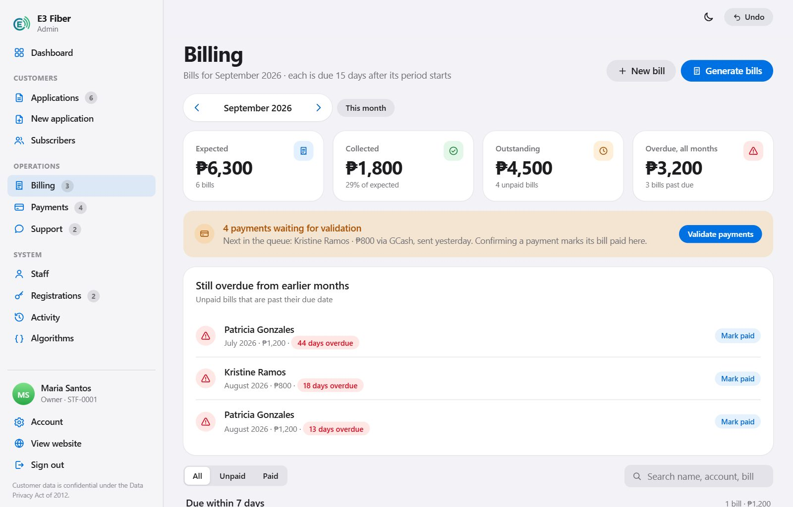
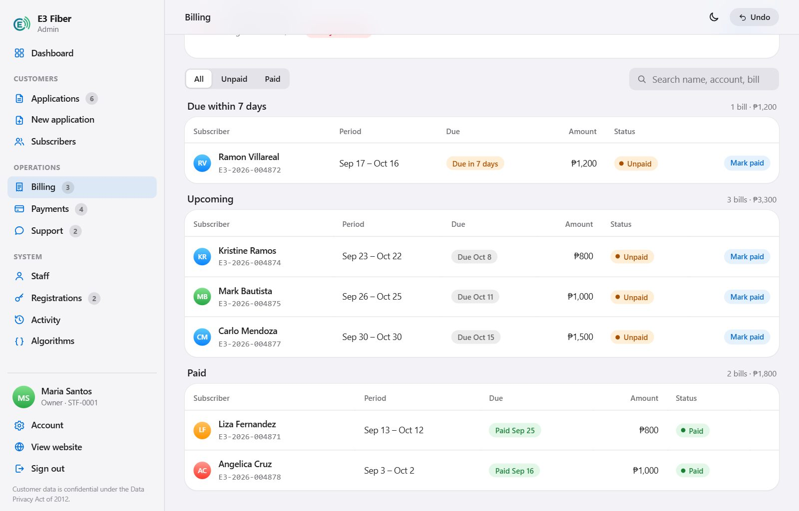
Trace — finding one month’s bills (computed by our code)
All 21 bills are sorted by id BILL-YYYYMM-ACCOUNT. This month’s ids start with BILL-202609-, so they sit next to each other (blue):
| Step | low | high | middle | Bill id at middle | Decision |
|---|---|---|---|---|---|
| 1 | 0 | 21 | 10 | BILL-202608-004874 | smaller → low = 11 |
| 2 | 11 | 21 | 16 | BILL-202609-004872 | not smaller → high = 16 |
| 3 | 11 | 16 | 13 | BILL-202608-004877 | smaller → low = 14 |
| 4 | 14 | 16 | 15 | BILL-202609-004871 | not smaller → high = 15 |
| 5 | 14 | 15 | 14 | BILL-202608-004878 | smaller → low = 15 |
Binary search finds the first bill of the month at index 15 in 5 steps; a short scan collects the 6 bills of the month (the code reports 11 comparisons in total instead of reading all 21).
| Group (by days to due date) | Bills |
|---|---|
| Overdue | — |
| Due within 7 days | Ramon Villareal |
| Upcoming | Kristine Ramos, Mark Bautista, Carlo Mendoza |
| Paid | Liza Fernandez, Angelica Cruz |
Totals in one pass: expected ₱6,300 · collected ₱1,800 · outstanding ₱4,500 (4 unpaid of 6).
Code walkthrough
assets/js/backend/billing.js · lines 152–159
152/** 153 * billsForMonth — one month's bills. Bill ids start with "BILL-YYYYMM-", so a 154 * binary search jumps to the first one and a short scan collects the rest. 155 * Time O(log n + k) · Space O(k) 156 */ 157function billsForMonth(year, month) { 158 return rangeWithPrefix(bills, 'billId', 'BILL-' + year + pad2(month) + '-'); 159}
- The prefix “BILL-” + year + two-digit month is exactly how every bill id of that month begins.
assets/js/dsa/search.js · lines 176–197
176/** 177 * rangeWithPrefix — every record whose `field` starts with `prefix`, from an 178 * array sorted by `field`. Binary search jumps to the first candidate, then a 179 * short scan collects the neighbours. (Bill ids start with "BILL-YYYYMM-", 180 * so this finds one month's bills without reading the whole table.) 181 * Time O(log n + k) for k matches · Space O(k) 182 */ 183function rangeWithPrefix(sortedRecords, field, prefix) { 184 const matches = []; 185 let position = lowerBound(sortedRecords, field, prefix); 186 let comparisons = dsaLastRun.comparisons; // 1. the binary-search steps 187 while (position < sortedRecords.length && textStartsWith(sortedRecords[position][field], prefix)) { 188 arrayAppend(matches, sortedRecords[position]); // 2. collect while the prefix matches 189 position++; 190 comparisons++; 191 } 192 if (position < sortedRecords.length) { 193 comparisons++; // 3. the check that ended the scan (none at the array's end) 194 } 195 recordRun('Binary search + scan', comparisons, 0); 196 return matches; 197}
- lowerBound (binary search) finds the first id that is ≥ the prefix — the first bill of the month.
- The loop keeps adding bills while their id still starts with the prefix, then stops at the first one that doesn’t.
- The comparisons are recorded (binary-search steps + scan) and shown on the Algorithms page.
assets/js/backend/billing.js · lines 230–261
230/** 231 * groupBills — bucket bills into four arrays by comparing the due date with 232 * today; each bucket is then sorted by due date (insertion sort). 233 * Time O(n + k²) · Space O(n) 234 */ 235function groupBills(list, today) { 236 const overdue = []; 237 const dueSoon = []; 238 const upcoming = []; 239 const paid = []; 240 for (let i = 0; i < list.length; i++) { // 1. one pass over the month's bills 241 const bill = list[i]; 242 if (bill.status === 'Paid') { 243 arrayAppend(paid, bill); 244 } else { 245 const daysLeft = daysBetweenISO(today, bill.dueDate); // 2. days until (or since) the due date 246 if (daysLeft < 0) { 247 arrayAppend(overdue, bill); 248 } else if (daysLeft <= 7) { 249 arrayAppend(dueSoon, bill); 250 } else { 251 arrayAppend(upcoming, bill); 252 } 253 } 254 } 255 return { // 3. sort each group by date (insertion sort) 256 overdue: insertionSort(overdue, 'dueDate', 'asc'), 257 dueSoon: insertionSort(dueSoon, 'dueDate', 'asc'), 258 upcoming: insertionSort(upcoming, 'dueDate', 'asc'), 259 paid: insertionSort(paid, 'paidOn', 'desc'), 260 }; 261}
- One pass: paid bills go to paid; for the others daysBetweenISO gives the days to the due date (negative = overdue, 0–7 = due soon).
- Each group is then sorted by date with insertion sort (paid ones newest first).
assets/js/backend/billing.js · lines 263–277
263/** summarizeBills — expected / collected / outstanding totals in one pass. O(n) */ 264function summarizeBills(list) { 265 const totals = { expected: 0, collected: 0, outstanding: 0, count: list.length, paidCount: 0, unpaidCount: 0 }; 266 for (let i = 0; i < list.length; i++) { 267 totals.expected += list[i].amount; 268 if (list[i].status === 'Paid') { 269 totals.collected += list[i].amount; 270 totals.paidCount++; 271 } else { 272 totals.outstanding += list[i].amount; 273 totals.unpaidCount++; 274 } 275 } 276 return totals; 277}
- One loop adds each amount to “expected” and to “collected” (paid) or “outstanding” (unpaid), and counts them.
Module 12 · Aaron Sebastian
Billing: Bill Generation
1Business process
What task or problem from the client are you solving?
Every active subscriber must receive one bill per month, for the right amount (their plan’s price), for the right period, with a due date — and never twice for the same month. E3 bills on each customer’s connection day (“anniversary billing”): the period starts on the day of the month they were connected, ends the day before that date next month, and is due 15 days after it starts. Suspended and terminated accounts are not billed. Staff can bill everyone at once or one subscriber, up to one month ahead, and undo the whole batch.
2Input
What data is needed by the module?
| Input | Detail |
|---|---|
| Month and year | from the month switch or the “New bill” sheet; at most one month ahead |
| Subscriber (New bill only) | chosen from the active subscribers; already-billed ones are disabled |
| Each subscriber’s data | status (must be Active), plan / custom price, connection date (since) |
| Existing bills | to refuse a second bill for the same month |
| Signed-in staff | recorded in the log and the Undo step |
3Process
What data structure and/or algorithm did you use? How does it work step by step?
Input
- month and year
- subscribers (status, plan, since)
- sorted bills
Process
- for each active subscriber:
- bill id = BILL-YYYYMM-account
- binary search: already billed?
- billing period + due date
- sorted insert
- one Undo for all
Output
- new Unpaid bills
- “Created N bills · ₱total”
- bills still sorted
- generateMonthlyBills visits every subscriber and skips those that are not Active or were not connected yet in that month (isBillableIn).
- createBill: binary search for the subscriber; check the month is valid, not before they were connected, and not more than one month ahead.
- Build the id BILL-202610-004872 and binary search for it — if it exists, this subscriber is already billed (skipped, or an error for “New bill”).
- billingPeriod: the period starts on the connection day (the month’s last day if the month is shorter), ends the day before the next start, and is due 15 days after the start — all with our day-number calendar maths.
- The amount is the plan price (or the custom price); the bill is put in id order with sortedInsert (lower bound + shift).
- All the new bills are collected into one Undo step and one activity line with the total.
4Output
What result does the module produce?
New bill records { billId, accountNo, billingYear, billingMonth, periodStart, periodEnd, dueDate, amount, status: "Unpaid", paidOn: null, paymentRef: "", createdAt } in the sorted bills array; the message “Created N bills · ₱total” with Undo; the month’s totals and groups updated; or a clear message when there is nothing to do (“Every active subscriber already has a … bill.”).
5Complexity analysis
What is the time complexity? What is the space complexity?
| Operation | Time | Space |
|---|---|---|
| billingPeriod (day-number arithmetic) | O(1) | O(1) |
| createBill: find subscriber + duplicate check | O(log s) + O(log n) | O(1) |
| createBill: sorted insert | O(log n) + O(n) shift = O(n) | O(1) |
| generateMonthlyBills (s subscribers, n bills) | O(s · n) | O(s) for the Undo operations |
6Justification
Why did you choose that data structure or algorithm? Why is it appropriate?
- The id encodes the uniqueness rule (one bill per account per month), so the duplicate check is a single binary search instead of scanning all bills.
- Sorted insert keeps the bills sorted by id, which the billing list (Module 11), Pay Bills and payment validation depend on. Bills are created in account order, so most inserts land near the end of their month block — few shifts.
- Day-number calendar maths (days-from-civil) makes “+15 days” and “next month” exact, including leap years and short months, without the Date object doing hidden work.
- One Undo step for the batch (a stack entry holding many insert operations): a mistaken “Generate” is reversed in one click.
7Demonstration
Show that the module works correctly — the input, the process and the output.
- Billing → next month (empty) → “Generate bills” → the confirmation says how many bills will be created → Generate.
- The month now has one bill per active subscriber; press “Generate bills” again → “Every active subscriber already has a … bill.”
- “New bill”: already-billed subscribers are disabled.
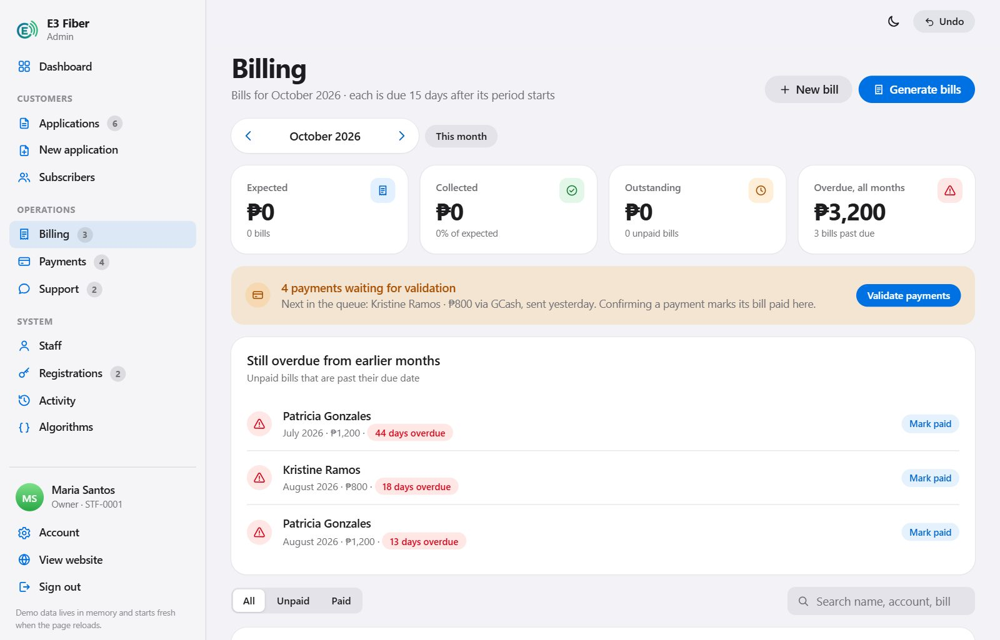
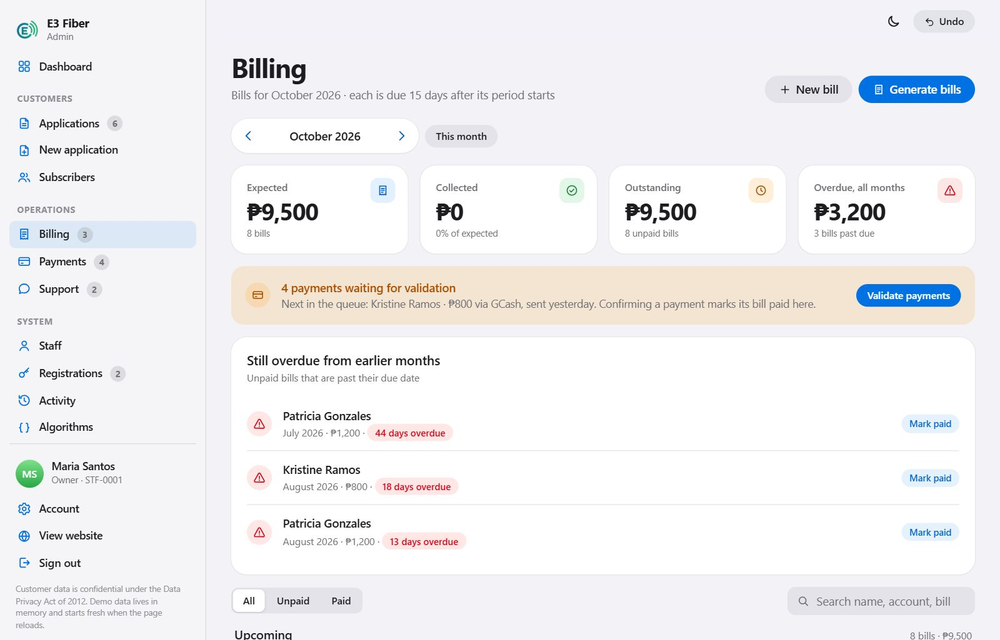
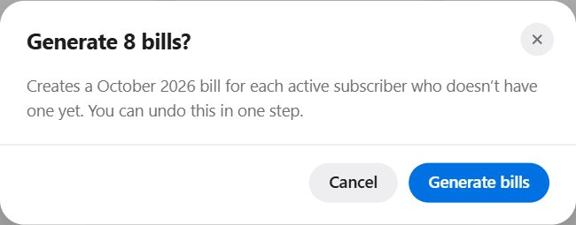
Trace — periods and a generation run (computed by our code)
| Connected on | Bill for | Period | Due (start + 15 days) | Why |
|---|---|---|---|---|
| 2026-08-15 | September 2026 | 2026-09-15 → 2026-10-14 | 2026-09-30 | normal month: same day each month |
| 2026-01-31 | February 2026 | 2026-02-28 → 2026-03-30 | 2026-03-15 | February has no 31st → its last day is used |
Generate bills for 2026-10: 6 bills created, total ₱6,300. Bills table: 21 → 27 records, still sorted by id: ✓ verified. Skipped (not active): Jerome Santiago (Terminated), Patricia Gonzales (Suspended).
| Example bill | Value |
|---|---|
| Subscriber (connected on) | Liza Fernandez (2026-07-12) |
| Bill id | BILL-202610-004871 |
| Period | 2026-10-12 → 2026-11-11 |
| Due date | 2026-10-27 |
| Amount (plan price) | ₱800 |
Clicking Generate again: “Every active subscriber already has a bill for October 2026.” (each bill id was found by binary search). Undo stack top: “Generate 6 bills for October 2026” holding 6 insert operations — one Undo removes all of them.
Code walkthrough
assets/js/backend/billing.js · lines 23–40
23/** 24 * billingPeriod — start, end and due date of a subscriber's bill for a month. 25 * Joined on the 31st? Short months use their last day instead. 26 * Time O(1) · Space O(1) 27 */ 28function billingPeriod(subscriber, year, month) { 29 const anchorDay = parseISODate(subscriber.since).day; // 1. the day of the month they were connected 30 const startDay = anchorDay <= daysInMonth(year, month) ? anchorDay : daysInMonth(year, month); // 2. short month? use its last day 31 const next = addMonths(year, month, 1); 32 const nextDay = anchorDay <= daysInMonth(next.year, next.month) ? anchorDay : daysInMonth(next.year, next.month); 33 const periodStart = isoDate(year, month, startDay); 34 const nextStart = isoDate(next.year, next.month, nextDay); // 3. the next period's start … 35 return { // 4. … minus one day ends this one; due 15 days after the start 36 periodStart: periodStart, 37 periodEnd: addDaysISO(nextStart, -1), 38 dueDate: addDaysISO(periodStart, BILL_DUE_AFTER_DAYS), 39 }; 40}
- The anchor is the day of the month the customer was connected.
- If this month (or next month) is too short for that day, its last day is used instead.
- The period ends the day before the next period starts; the due date is 15 days after the start (addDaysISO uses our day numbers).
assets/js/backend/billing.js · lines 53–105
53/** 54 * createBill — issue one month's bill for an ACTIVE subscriber. 55 * The new bill is "put" in id order with sortedInsert. 56 * options.quiet → no own undo/log entry (used by generateMonthlyBills). 57 * Time O(log n) checks + O(n) insert · Space O(1) 58 */ 59function createBill(accountNo, year, month, actor, options) { 60 const quiet = options && options.quiet; 61 const subscriber = findSubscriber(accountNo); // 1. binary search for the account 62 if (!subscriber) { 63 return { ok: false, error: 'Subscriber not found.' }; 64 } 65 if (subscriber.status !== 'Active') { // 2. only active accounts are billed 66 return { ok: false, error: subscriber.fullName + ' is ' + toLowerText(subscriber.status) + ' — only active accounts are billed.' }; 67 } 68 if (!(month >= 1 && month <= 12) || !(year >= 2000 && year <= 2100)) { 69 return { ok: false, error: 'Choose a valid month.' }; 70 } 71 const since = parseISODate(subscriber.since); 72 if (year * 12 + month < since.year * 12 + since.month) { 73 return { ok: false, error: subscriber.fullName + ' was connected on ' + formatDate(subscriber.since) + '.' }; 74 } 75 const clock = readClock(); 76 if (year * 12 + month > clock.year * 12 + clock.month + 1) { 77 return { ok: false, error: 'Bills can be created up to one month ahead.' }; 78 } 79 const billId = makeBillId(year, month, accountNo); // 3. e.g. BILL-202609-004872 80 if (findBill(billId)) { // 4. binary search: already billed this month? 81 return { ok: false, error: subscriber.fullName + ' already has a bill for ' + formatMonthYear(year, month) + '.' }; 82 } 83 const period = billingPeriod(subscriber, year, month); // 5. period and due date (anniversary billing) 84 const bill = { 85 billId: billId, 86 accountNo: accountNo, 87 billingYear: year, 88 billingMonth: month, 89 periodStart: period.periodStart, 90 periodEnd: period.periodEnd, 91 dueDate: period.dueDate, 92 amount: planPrice(subscriber.planId, subscriber.customPrice), 93 status: 'Unpaid', 94 paidOn: null, 95 paymentRef: '', 96 createdAt: nowISO(), 97 }; 98 sortedInsert(bills, 'billId', bill); // 6. "put" it in id order (binary search + shift) 99 if (!quiet) { 100 pushUndo('Create ' + formatMonthYear(year, month) + ' bill for ' + subscriber.fullName, [insertOperation('bills', billId)], nameOfActor(actor)); 101 logActivity('billing', 'Created ' + formatMonthYear(year, month) + ' bill for ' + subscriber.fullName + ' (' + formatPeso(bill.amount) + ')', nameOfActor(actor)); 102 } 103 markDataChanged(); 104 return { ok: true, bill: bill }; 105}
- Steps 1–2 and the checks after them: the subscriber must exist (binary search) and be Active; the month must be valid, not before the connection, and at most one month ahead.
- Steps 3–4: build the id and refuse it if it already exists (binary search).
- Steps 5–6: compute the period, build the Unpaid bill with the plan price, and put it in id order. When called by “Generate”, quiet skips the per-bill Undo so the batch gets one step.
assets/js/backend/billing.js · lines 113–150
113/** 114 * generateMonthlyBills — bill every active subscriber who has no bill for the 115 * month yet. All the new bills form ONE undo step. 116 * Time O(s · n) for s subscribers · Space O(s) 117 */ 118function generateMonthlyBills(year, month, actor) { 119 const operations = []; 120 let created = 0; 121 let total = 0; 122 let firstError = ''; 123 let billable = 0; 124 for (let i = 0; i < subscribers.length; i++) { // 1. visit every subscriber 125 if (!isBillableIn(subscribers[i], year, month)) { // 2. skip inactive accounts and months before they were connected 126 continue; 127 } 128 billable++; 129 const result = createBill(subscribers[i].accountNo, year, month, actor, { quiet: true }); // 3. refuses if already billed 130 if (result.ok) { 131 created++; 132 total += result.bill.amount; 133 arrayAppend(operations, insertOperation('bills', result.bill.billId)); // 4. remember it for one Undo 134 } else if (firstError === '' && !hasBill(subscribers[i].accountNo, year, month)) { 135 firstError = result.error; // a real problem (e.g. too far ahead), not "already billed" 136 } 137 } 138 if (created === 0) { 139 let error = 'Every active subscriber already has a bill for ' + formatMonthYear(year, month) + '.'; 140 if (firstError !== '') { 141 error = firstError; 142 } else if (billable === 0) { 143 error = 'No active subscriber was connected yet in ' + formatMonthYear(year, month) + '.'; 144 } 145 return { ok: false, created: 0, total: 0, error: error }; 146 } 147 pushUndo('Generate ' + pluralize(created, 'bill') + ' for ' + formatMonthYear(year, month), operations, nameOfActor(actor)); 148 logActivity('billing', 'Generated ' + pluralize(created, 'bill') + ' for ' + formatMonthYear(year, month) + ' (' + formatPeso(total) + ')', nameOfActor(actor)); 149 return { ok: true, created: created, total: total, error: '' }; 150}
- Visit every subscriber, skip the inactive ones, and try to bill each; already-billed ones simply return “not ok”.
- Every created bill adds one insert operation. If none was created, the message gives the real reason: the first problem found (e.g. more than one month ahead), nobody connected yet that month, or everyone already billed.
- pushUndo stores all the operations as one step; the log shows the count and total.
Module 13 · Aaron Sebastian
Payments (Payments Validation)
1Business process
What task or problem from the client are you solving?
Customers pay through GCash, Maya, a bank or a payment centre and then tell E3 they paid. Before a bill is marked paid, staff must be sure the report is genuine: it is for a real bill of that account, the bill is not already paid, the amount is exactly the bill, the reference number looks like one from that payment method, and the same reference was not used before (a common mistake — or fraud). Reports are handled in the order they arrived. Confirmed payments settle the bill; declined ones show the customer a reason.
2Input
What data is needed by the module?
| Who | Input | Rule |
|---|---|---|
| Customer (Pay Bills) | Account number + registered mobile | both must match (the error never says which part was wrong) |
| Bill paid | one of their unpaid bills not already being checked | |
| Method | GCash · Maya · Bank transfer · Over the counter | |
| Amount paid | ₱1 – ₱100,000 (filled in from the bill) | |
| Reference number | GCash 13 digits · Maya 12 letters/digits · bank or counter 8–20 letters/digits | |
| Staff (Payments) | The front of the queue (or any row → “Validate”) | — |
| Decision | Confirm (only if every check passes) or Decline with a reason (≥ 5 characters) |
3Process
What data structure and/or algorithm did you use? How does it work step by step?
Input
- payment report (bill, method, amount, reference)
- payments, bills
- reference hash table
Process
- report: check → append → hashPut
- queue of reports; take the front
- 5 checks: binary search bill · unpaid · amount · format scan · hash look-up
- confirm → settle bill (+Undo) · decline → reason
Output
- ✓ / ✗ for each check
- Confirmed (bill Paid) or Declined (reason)
- status on Pay Bills
Customer reports a payment (reportPayment): check the bill, the method, the reference format and the amount; append the payment (ids only grow → sorted) and add its reference to the hash table under “METHOD:REFERENCE”. It joins the rear of the validation queue.
Staff validate (paymentsQueue → queuePeek → validatePayment):
- Bill belongs to the account — binary search for the bill id; its account must match.
- Bill is still unpaid — e.g. not settled at the office in the meantime.
- Amount matches the bill — one comparison; the text says how much short or over.
- Reference format — scan the characters: right length for the method, digits only for GCash.
- Reference not used before — one hash-table look-up of “METHOD:REFERENCE”; a confirmed payment there, or an earlier report still waiting, means this one is a duplicate (declined reports and later reports don’t count).
- Confirm (confirmPayment) re-runs the checks and refuses if any fails; otherwise the payment becomes Confirmed and the bill Paid — one Undo step reverses both. Decline suggests a customer-friendly reason from the first failed check.
4Output
What result does the module produce?
For staff: the validation card with ✓/✗ and a plain explanation for each check, the verdict (all checks passed — safe to confirm, or how many failed — decline it with a reason), Confirm enabled only when all pass, and the list of all payments (filter, search, sort). For the customer: the report under “Payment reports” as For verification, then Confirmed (the bill is paid) or Declined with the reason.
5Complexity analysis
What is the time complexity? What is the space complexity?
| Operation | Time | Space |
|---|---|---|
| Report a payment (pending check over n payments, then append + hashPut) | O(n) + O(1) average | O(1) |
| Build the validation queue / peek the front | O(n) / O(1) | O(p) |
| Check 1 — find the bill (binary search over B bills) | O(log B) | O(1) |
| Checks 2 and 3 | O(1) | O(1) |
| Check 4 — format (k characters) | O(k) | O(1) |
| Check 5 — hash look-up (d earlier uses of the reference) | O(1) average (+ O(d log n)) | O(1) |
| validatePayment overall | O(log B + k) | O(1) |
| Confirm (validate + settle the bill) | O(log B + k) | O(1) |
6Justification
Why did you choose that data structure or algorithm? Why is it appropriate?
- Queue: payments are validated in the order customers reported them — first come, first served — and the front is available in O(1).
- Hash table for references: checking “was this reference used?” by scanning every payment would be O(n) for each validation and grow forever; the hash table answers in O(1) on average. The key includes the method, so a GCash and a bank number that happen to look alike don’t clash.
- Binary search for the bill: bills are sorted by id (Module 12), so finding the reported bill is O(log B).
- Character scan for the format: exact rules per method without regular expressions.
- Checks repeated inside Confirm: the rule is enforced by the backend, not just by a disabled button.
- Privacy: the public form never reveals whether a reference exists; only staff see duplicates.
7Demonstration
Show that the module works correctly — the input, the process and the output.
- Pay Bills → “Fill in” the demo account → GCash with a short reference → the format error; fix it → Send → the report appears as For verification.
- Staff → Payments: the front (Kristine) passes all 5 checks → Confirm → her bill is paid.
- Open the others: Liza’s bill was already paid at the office, Patricia sent ₱200 short, Mark re-used Angelica’s GCash reference (found by the hash table) → Decline with the suggested reason.
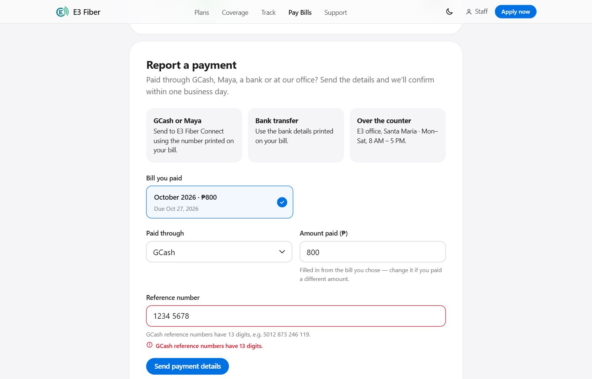
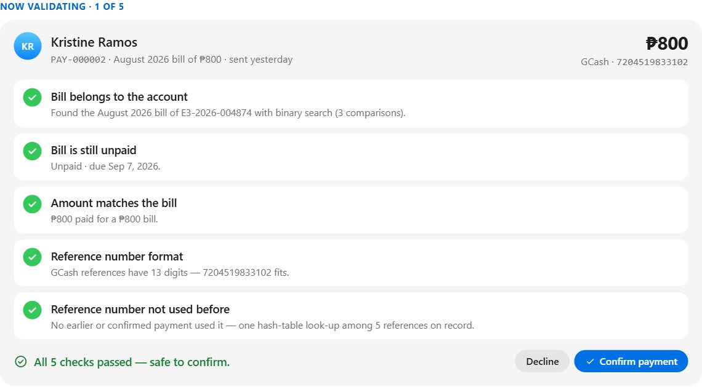
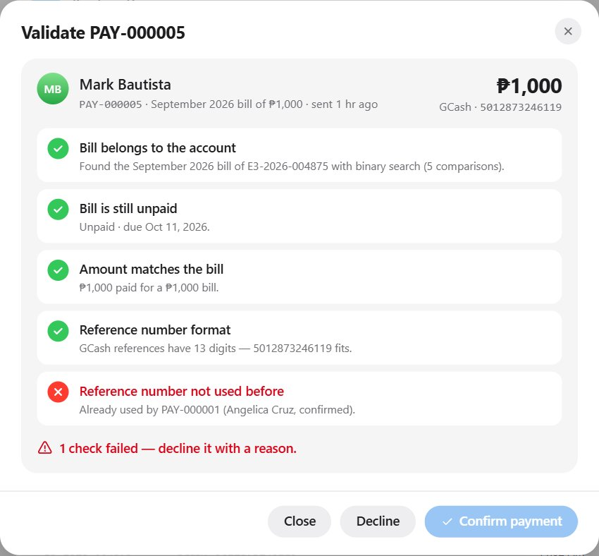
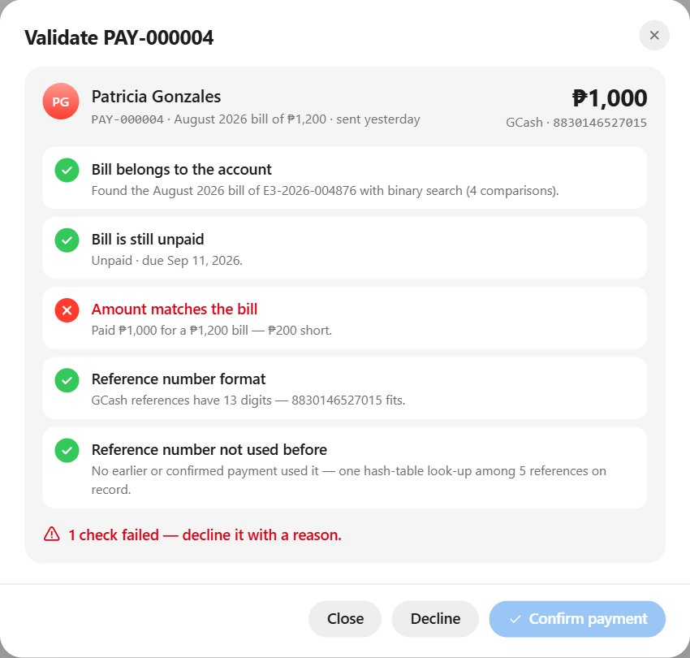
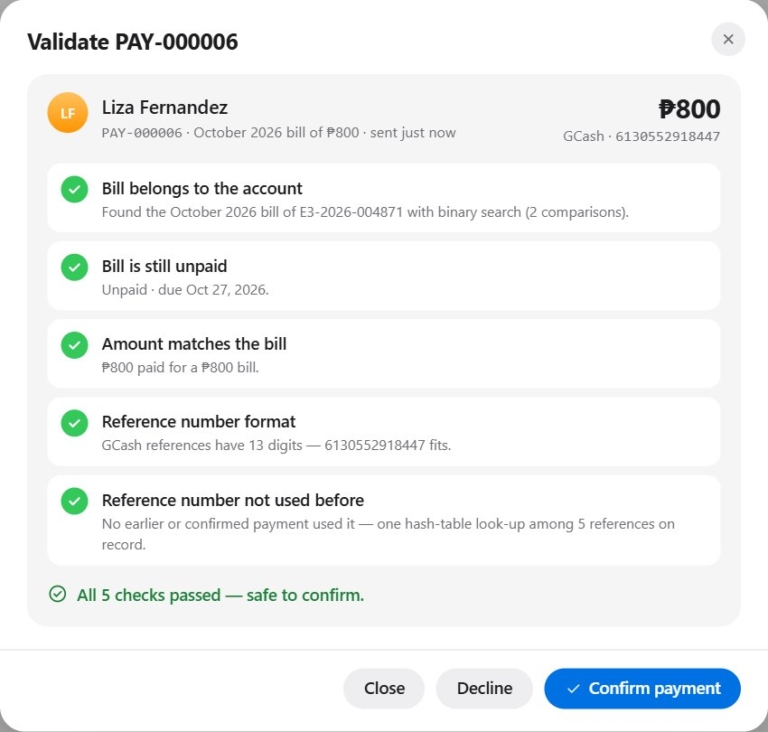
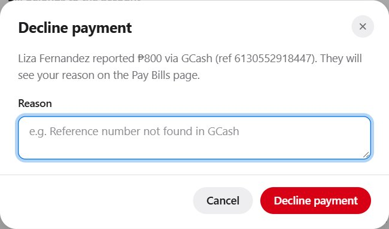
Trace — the queue, the five checks and the hash table (computed by our code)
The validation queue (circular buffer, front = oldest report):
| Payment | 1. Bill belongs to the account | 2. Bill is still unpaid | 3. Amount matches the bill | 4. Reference number format | 5. Reference number not used before | Verdict |
|---|---|---|---|---|---|---|
| PAY-000002 Kristine Ramos GCash · ₱800 | ✓ yes | ✓ yes | ✓ yes | ✓ yes | ✓ yes | ✓ Confirm |
| PAY-000003 Liza Fernandez Maya · ₱800 | ✓ yes | ✗ no | ✓ yes | ✓ yes | ✓ yes | ✗ Decline |
| PAY-000004 Patricia Gonzales GCash · ₱1,000 | ✓ yes | ✓ yes | ✗ no | ✓ yes | ✓ yes | ✗ Decline |
| PAY-000005 Mark Bautista GCash · ₱1,000 | ✓ yes | ✓ yes | ✓ yes | ✓ yes | ✗ no | ✗ Decline |
| Payment | The failed check says | Suggested reason for the customer |
|---|---|---|
| PAY-000003 Liza Fernandez | Already paid on Sep 24, 2026 (Office payment). | “This bill was already paid, so this payment was not applied. Please contact us if you paid twice.” |
| PAY-000004 Patricia Gonzales | Paid ₱1,000 for a ₱1,200 bill — ₱200 short. | “You sent ₱1,000 but the bill is ₱1,200. Please visit our office so we can settle the difference.” |
| PAY-000005 Mark Bautista | Already used by PAY-000001 (Angelica Cruz, confirmed). | “This reference number was already used for another payment. Please check your receipt.” |
The reference hash table (key METHOD:REFERENCE → payment ids):
| Bucket | Key | Payment ids |
|---|---|---|
| 3 | GCASH:7204519833102 | PAY-000002 |
| 12 | MAYA:4F7K2M9Q1T8B | PAY-000003 |
| 13 | GCASH:8830146527015 | PAY-000004 |
| 15 | GCASH:5012873246119 | PAY-000001, PAY-000005 ✗ used twice |
Reference formats (check 4): GCash — 13 digits (e.g. 5012 873 246 119); Maya — 12 letters or digits (e.g. 4F7K 2M9Q 1T8B); Bank transfer — 8–20 letters or digits (e.g. FT26 0918 8830); Over the counter — 8–20 letters or digits (e.g. BC26 0918 0457).
Code walkthrough
assets/js/backend/payments.js · lines 147–212
147/** 148 * validatePayment — the five checks shown on the Payments page. Nothing is 149 * changed; the result says which checks passed and why. 150 * Returns { checks: [{ key, label, ok, text }], passed, failed, firstFailure, bill }. 151 * Time O(log n + k) · Space O(1) 152 */ 153function validatePayment(payment) { 154 const checks = []; 155 156 const bill = findBill(payment.billId); // 1 · binary search 157 const billSteps = dsaLastRun.comparisons; 158 const belongs = bill !== null && bill.accountNo === payment.accountNo; 159 const billName = bill ? formatMonthYear(bill.billingYear, bill.billingMonth) + ' bill' : 'bill ' + payment.billId; 160 arrayAppend(checks, { 161 key: 'bill', 162 label: 'Bill belongs to the account', 163 ok: belongs, 164 text: belongs ? 'Found the ' + billName + ' of ' + payment.accountNo + ' with binary search (' + pluralize(billSteps, 'comparison') + ').' 165 : 'There is no ' + billName + ' for account ' + payment.accountNo + '.', 166 }); 167 168 const paidByThis = belongs && bill.status === 'Paid' && bill.paymentRef === payment.paymentId; 169 const unpaid = belongs && (bill.status === 'Unpaid' || paidByThis); // 2 · one field (a confirmed payment settled it itself) 170 let unpaidText = 'No bill to check.'; 171 if (paidByThis) { 172 unpaidText = 'Was unpaid — this payment settled it on ' + formatDate(bill.paidOn) + '.'; 173 } else if (belongs) { 174 unpaidText = unpaid ? 'Unpaid · due ' + formatDate(bill.dueDate) + '.' 175 : 'Already paid on ' + formatDate(bill.paidOn) + (bill.paymentRef ? ' (' + bill.paymentRef + ')' : '') + '.'; 176 } 177 arrayAppend(checks, { key: 'unpaid', label: 'Bill is still unpaid', ok: unpaid, text: unpaidText }); 178 179 const amountOk = belongs && payment.amount === bill.amount; // 3 · one comparison 180 let amountText = 'No bill amount to compare.'; 181 if (belongs) { 182 const difference = payment.amount - bill.amount; 183 amountText = amountOk ? formatPeso(payment.amount) + ' paid for a ' + formatPeso(bill.amount) + ' bill.' 184 : 'Paid ' + formatPeso(payment.amount) + ' for a ' + formatPeso(bill.amount) + ' bill — ' 185 + formatPeso(difference < 0 ? -difference : difference) + (difference < 0 ? ' short.' : ' too much.'); 186 } 187 arrayAppend(checks, { key: 'amount', label: 'Amount matches the bill', ok: amountOk, text: amountText }); 188 189 const format = checkReferenceFormat(payment.method, normalizePaymentReference(payment.referenceCode)); // 4 · scan 190 arrayAppend(checks, { key: 'format', label: 'Reference number format', ok: format.ok, text: format.text }); 191 192 const duplicate = findDuplicatePayment(payment); // 5 · hash table 193 arrayAppend(checks, { 194 key: 'duplicate', 195 label: 'Reference number not used before', 196 ok: duplicate === null, 197 text: duplicate === null ? 'No earlier or confirmed payment used it — one hash-table look-up among ' + pluralize(paymentReferenceIndex.size, 'reference') + ' on record.' 198 : 'Already used by ' + duplicate.paymentId + ' (' + duplicate.fullName + ', ' + toLowerText(duplicate.status) + ').', 199 }); 200 201 let failed = 0; 202 let firstFailure = null; 203 for (let i = 0; i < checks.length; i++) { 204 if (!checks[i].ok) { 205 failed++; 206 if (firstFailure === null) { 207 firstFailure = checks[i]; 208 } 209 } 210 } 211 return { checks: checks, passed: failed === 0, failed: failed, firstFailure: firstFailure, bill: bill }; 212}
- Check 1: findBill is a binary search; dsaLastRun.comparisons right after it is shown in the check’s text.
- Checks 2–3 read the bill’s status and compare the amounts (the text says how much short or over). A payment that was already confirmed still passes check 2, because the bill was settled by that same payment (bill.paymentRef).
- Check 4 normalises the reference (spaces and dashes removed, letters in capitals) and scans it with the method’s rule.
- Check 5 asks the hash table for another payment with the same method and reference.
- The last loop counts failures and remembers the first one (used for the verdict and the suggested decline reason).
assets/js/backend/payments.js · lines 108–121
108/** 109 * indexPaymentReference — add a payment to the reference hash table. The value 110 * stored under a key is the list of payment ids that used that reference. 111 * Time O(1) average · Space O(1) 112 */ 113function indexPaymentReference(payment) { 114 const key = paymentReferenceKey(payment.method, payment.referenceCode); 115 const ids = hashGet(paymentReferenceIndex, key); 116 if (ids === null) { 117 hashPut(paymentReferenceIndex, key, [payment.paymentId]); 118 } else { 119 arrayAppend(ids, payment.paymentId); 120 } 121}
- The key is “METHOD:REFERENCE”, e.g. GCASH:5012873246119.
- The value is a small list of payment ids: a new key gets a new list; an existing key gets the id appended — so a second use is visible in one look-up.
assets/js/backend/payments.js · lines 123–145
123/** 124 * findDuplicatePayment — a payment that used the same method and reference number 125 * BEFORE this one: an already confirmed payment, or an earlier report that is still 126 * waiting. Declined reports don't count, and neither do later reports (the later one 127 * is the duplicate, not this one). One hash-table look-up, then a binary search per id. 128 * Time O(1) average + O(d log n) for d other uses (d is almost always 0) · Space O(1) 129 */ 130function findDuplicatePayment(payment) { 131 const ids = hashGet(paymentReferenceIndex, paymentReferenceKey(payment.method, payment.referenceCode)); 132 if (ids === null) { 133 return null; // 1. reference never seen before 134 } 135 for (let i = 0; i < ids.length; i++) { 136 if (ids[i] !== payment.paymentId) { 137 const other = findPayment(ids[i]); // 2. every other use of it (binary search) 138 if (other && (other.status === 'Confirmed' 139 || (other.status === 'For verification' && other.paymentId < payment.paymentId))) { 140 return other; // 3. confirmed, or reported earlier → duplicate 141 } 142 } 143 } 144 return null; 145}
- One hashGet; no list → never used.
- Otherwise every other id in the list is found by binary search; one that is Confirmed, or still waiting with a smaller id (reported earlier), makes this payment the duplicate.
assets/js/backend/payments.js · lines 327–361
327/** 328 * confirmPayment — accept the payment and mark its bill paid. Refused unless 329 * all five validation checks pass. One undo step reverses both changes. 330 * Time O(log n + k) · Space O(1) 331 */ 332function confirmPayment(paymentId, actor) { 333 if (!actor) { 334 return { ok: false, error: 'Please sign in again.' }; 335 } 336 const payment = findPayment(paymentId); 337 if (!payment) { 338 return { ok: false, error: 'Payment not found.' }; 339 } 340 if (payment.status !== 'For verification') { 341 return { ok: false, error: 'This payment was already ' + toLowerText(payment.status) + '.' }; 342 } 343 const validation = validatePayment(payment); 344 if (!validation.passed) { 345 return { ok: false, error: 'Can’t confirm — “' + validation.firstFailure.label + '” failed. Decline it instead.', validation: validation }; 346 } 347 const bill = validation.bill; 348 const beforePayment = snapshotFields(payment, ['status', 'reviewedBy', 'reviewedAt']); 349 const beforeBill = snapshotFields(bill, ['status', 'paidOn', 'paymentRef']); 350 payment.status = 'Confirmed'; 351 payment.reviewedBy = nameOfActor(actor); 352 payment.reviewedAt = nowISO(); 353 settleBill(bill.billId, actor, payment.paymentId, { quiet: true }); 354 pushUndo('Confirm payment ' + paymentId + ' (' + payment.fullName + ')', [ 355 updateOperation('payments', paymentId, beforePayment), 356 updateOperation('bills', bill.billId, beforeBill), 357 ], nameOfActor(actor)); 358 logActivity('payment', 'Confirmed payment ' + paymentId + ' — ' + payment.fullName + ' paid ' + formatPeso(payment.amount), nameOfActor(actor)); 359 markDataChanged(); 360 return { ok: true, payment: payment, bill: bill }; 361}
- Refuse when no staff member is signed in, or the payment is unknown or already handled; then run validatePayment again — if any check fails, nothing changes.
- Snapshot the payment and the bill, mark the payment Confirmed and settle the bill, then push one Undo step containing both changes.
Appendix A
Complexity summary — all 13 modules
The main operation of each module. n = records in the table, k = results or text length, s = subscribers, r = staff requests, p = items waiting in a queue, b = hash buckets. Details are on each module’s page.
| # | Module | Member | Main structure / algorithm | Time | Space |
|---|---|---|---|---|---|
| 1 | Plan Selection | Joshua | Linear search (recommender) · insertion sort (best case) · selection sort (cards) | O(n) · O(n²) cards | O(n) |
| 2 | Application | Joshua | Character scans · binary search (barangay) · linear duplicate check · append | O(n) | O(1) extra |
| 3 | Application Tracking | Joshua | Binary search on the reference number | O(log n) | O(1) |
| 4 | Application List | Justin | Linear filter · naive string matching · insertion / selection / bubble sort · review queue | O(n²) worst sort · O(1) peek | O(n) |
| 5 | Walk-in Override | Justin | Validation · linear duplicate check · append · Undo stack | O(n) | O(1) |
| 6 | Create Account | Justin | Binary search · lower bound + shift (sorted insert) | O(n) | O(1) extra |
| 7 | Admin Login | Riceerich | Hash table (djb2, chaining) · binary search · salted password hash | O(1) average | O(1); table O(n + b) |
| 8 | Accounts Management | Riceerich | Filter + search + sort · binary search · oldest-bill queue | O(log n) find · O(n²) worst sort | O(n) |
| 9 | Admin/Staff Creation & Management | Riceerich | Hash table (unique e-mail) · append · binary search | O(1) average add · O(log n) actions | O(1) |
| 10 | Admin Registration & Approval | Riceerich | Approval queue · hash look-up · binary search · append + hashPut | O(1) peek · O(log r) approve | O(p) |
| 11 | Billing: Client Billing List | Aaron | Lower bound + range scan · one-pass grouping · insertion sort | O(log n + k) | O(k) |
| 12 | Billing: Bill Generation | Aaron | Binary search (duplicate) · sorted insert · one Undo step | O(s · n) | O(s) |
| 13 | Payments Validation | Aaron | Queue · binary search · character scan · hash table | O(log n + k) | O(1) |
Reading Big-O in one minute
What it means
Big-O describes how the work grows when the data grows, ignoring fixed costs. O(log n) grows very slowly (double the data → one more step); O(n) grows in step with the data; O(n²) grows with the square (double the data → four times the work).
Time vs. space
Time counts the steps (comparisons, moves). Space counts the extra memory the function needs besides its input — e.g. a sort that copies the list is O(n) space, a binary search is O(1).
Appendix B
General questions — any member may be asked
Why is the whole website one HTML page?
Our data lives in JavaScript arrays, and arrays exist only while the page is open — they cannot be carried to another HTML file. So every screen is a section of one index.html, and the router shows the section named after the # in the address. The arrays stay alive while you move between screens.
Where is the data saved? What happens when you refresh?
Only in memory (the arrays in backend/database.js). There is no localStorage, cookie or server. Refreshing the page loads the sample data again — this is expected for the project rule, and it also makes every demonstration start from the same state.
Why didn’t you use push, sort, indexOf, filter and the other built-ins?
It was a project rule, and it shows we understand what they do. Each one has our own version in assets/js/dsa/: arrayAppend (push), arrayInsertAt / arrayRemoveAt (splice), linearSearch (indexOf / find), linearSearchAll (filter), insertionSort and others (sort), textFind (includes), trimText, splitText and toLowerText — and no regular expressions.
What does “procedural, not OOP” mean in your code?
There are no classes, no this and no methods. Data is plain records (e.g. a queue is { items, front, count, capacity }) and every operation is a separate function that receives the record: enqueue(queue, item), stackPush(stack, item), hashPut(table, key, value).
Aren’t O(n²) sorts too slow?
Not for our data: the lists have tens to hundreds of records, and the tables are usually already in order, which is insertion sort’s best case — O(n). They are also simple to verify, and insertion and bubble sort are stable. The Benchmark lab on the Algorithms page runs the three sorts on the same random data and shows the exact comparison counts, so the difference can be seen live.
Why keep the arrays sorted instead of sorting when needed?
Records are looked up far more often than they are added. Keeping each array sorted by its key (append when ids only grow, sorted insert otherwise) lets every look-up be a binary search — O(log n) — instead of a linear search, and each month of bills becomes one contiguous block (Module 11).
Why hash tables, when you already have binary search?
Binary search only works on the key the array is sorted by. Staff are sorted by id, but sign-in searches by e-mail; payments are sorted by id, but the duplicate check searches by reference number; wrong sign-in tries are counted per e-mail. A hash table indexes that second key and answers in O(1) on average, without a second sorted copy that would cost O(n) per insert.
How does Undo work?
It is a stack. Every admin action pushes one step holding its operations (insert / update / remove) and the “before” values. Undo pops the newest step and reverses its operations. One step can hold many operations — generating a month of bills, or confirming a payment (payment + bill). Only the last 25 steps are kept, and the stack is cleared at sign-in and sign-out so staff only ever undo their own work. Customers’ actions are not on the stack, so Undo refuses a step that would break one — e.g. deleting a bill a customer already reported a payment for, or re-opening a declined payment after the customer sent a new report. Each toast’s Undo only reverses the action that toast announced.
How secure is it?
It is a class project that runs entirely in the browser, so we are honest about the limits. What we did: passwords are stored only as a salted hash (FNV-1a repeated 400 times — a demo, not a real password hash), five wrong passwords in a row for one e-mail (counted in a hash table) pause sign-in for 30 seconds, the sign-in error never says whether the e-mail or the password was wrong — nor, through the registration messages, which e-mails belong to staff — staff screens need a signed-in account, and everything shown on screen is escaped so typed text can’t run as code. A real deployment would need a server and database, a proper password hash (bcrypt or Argon2) and HTTPS, because anything in the browser can be read with developer tools.
How do you prove the complexities?
Every search and sort records its comparisons and moves; the Algorithms page shows the last runs, the live sizes of every structure and the benchmark. The traces in this reviewer were produced by running our actual functions on the sample data.
Did you use the Date object?
Only to read the clock: readClock reads today’s date from the computer, and Date.now() / performance.now() give timestamps for the sign-in pause, the activity log and the sort stopwatch. All date maths — adding days, next month, days between two dates, leap years — is our own day-number arithmetic in backend/utils.js.
What would you improve with more time?
A real server and database so data survives a refresh; sending e-mail or SMS for application updates and bills; online payment through the payment provider’s API instead of reported references; and a balanced tree or database index once the tables grow to many thousands of records.
Appendix C
Glossary
| Array | Items stored in numbered slots (0, 1, 2 …); reading slot i is O(1). Our “tables”. |
| Key | The field an array is sorted and searched by (reference number, account number, bill id …). |
| Linear search | Check items one by one until a match. O(n); works on unsorted data. |
| Binary search | On a sorted array, compare with the middle and keep one half. O(log n). |
| Lower bound | Binary search for the first position whose key is ≥ a value — where a new item belongs, or where a range starts. |
| Sorted insert | Lower bound + shift the later items one slot right. Keeps the array sorted. O(n). |
| Naive string matching | Try the search text at every position of the field. O(L · m). |
| Stable sort | Equal items keep their original order (insertion and bubble sort are stable; selection sort is not). |
| Stack (LIFO) | Last in, first out: push and pop at the top. Used for Undo, Back and open dialogs. |
| Queue (FIFO) | First in, first out: enqueue at the rear, dequeue at the front. Used for review, payments, staff requests, support, oldest bill. |
| Circular buffer | A queue in a fixed array whose rear wraps to the start, so nothing is shifted: O(1) enqueue and dequeue. |
| Hash table | A hash function turns a key into a bucket number, so a look-up checks one short list. O(1) on average. |
| djb2 | Our string hash function: start at 5381, then hash × 33 + character for every character. |
| Collision / chaining | Two keys in the same bucket; we keep them in a chain (list) inside that bucket. |
| Load factor | Keys ÷ buckets. Above 0.75 the table grows to 2b + 1 buckets and re-inserts every key. |
| Salt | Extra text mixed into a password before hashing, so equal passwords get different hashes. |
| Big-O | How the work grows with the size of the data (worst case unless stated). |
File map — who explains what
| Member | Backend (rules) | Screens (views) |
|---|---|---|
| Joshua | backend/plans.js · backend/applications.js (submit, track) | views/public/plans.js · apply.js · track.js · submitted.js |
| Justin | backend/applications.js (list, review queue, completeInstallation) · backend/subscribers.js (create account) · backend/history.js | views/admin/applications.js · application-detail.js · new-application.js |
| Riceerich | backend/auth.js · backend/staff.js · backend/registrations.js · backend/subscribers.js (list, status, plan) | views/admin/login.js · subscribers.js · subscriber-detail.js · staff.js · register.js · registrations.js |
| Aaron | backend/billing.js · backend/payments.js | views/admin/billing.js · payments.js · views/public/pay.js |
| Everyone | dsa/arrays.js · strings.js · search.js · sort.js · stack.js · queue.js · hashtable.js · stats.js · backend/database.js · utils.js | ui/router.js · sheets.js · toasts.js · forms.js · app.js |
Appendix D
Shared screens for the demonstration
These screens belong to no single module but help every member prove their claims live.
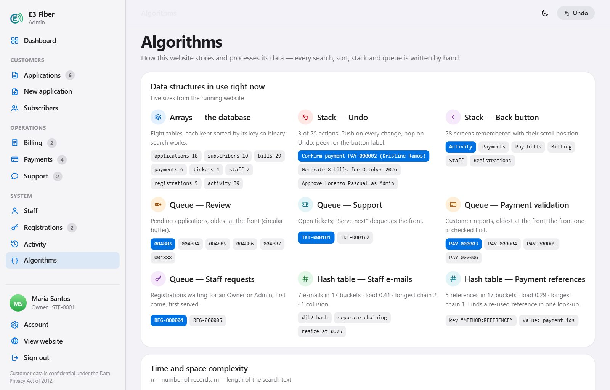
Before the defense: open index.html in Chrome or Edge, refresh once so the sample data is fresh, sign in with the demo admin account, and keep this reviewer open at your own module’s Demonstration section.